The Gajapatis were a medieval Hindu dynasty from the Indian subcontinent, which originated in the region of Kalinga (most of present-day Odisha and Northern coastal Andhra) from 1434 to 1541 CE. Under Kapilendra Deva, Gajapatis became an empire stretching from the lower Ganga in the north to the Kaveri in the south.
The Gajapati dynasty was established by Emperor Kapilendra Deva (1434–66 CE) in 1434. During the reign of Kapilendra Deva, the borders of the empire were expanded immensely; from large parts of Andhra Pradesh and West Bengal, and the eastern and central parts of Madhya Pradesh and Jharkhand. The king took the title of Sri Sri ... (108 times) Gajapati Gaudesvara Nava Koti Karnata Kalvargesvara. This title is still used by the kings of Puri during the Ratha Yatra. The significant rulers of this dynasty were Purushottama Deva (1466–1497) and Prataparudra Deva (1497–1540). The last ruler Kakharua Deva was killed by Govinda Vidyadhara in 1541, who founded the Bhoi dynasty.
In Sanskrit, "Gaja" means elephant and "Pati" means master or husband. As such, Gajapati etymologically means a king with an army of elephants.
Kingdom of Cochin (also known as Perumpadappu Swaroopam, Mada-rajyam, or Kuru Swaroopam; Kocci or Perumpaṭappu) was a late medieval Hindu kingdom and later princely state on the Malabar Coast, South India. Once controlling much of the territory between Ponnani and Thottappally, the Cochin kingdom shrank to its minimal extent as a result of invasions by the Zamorin of Calicut. When Portuguese armadas arrived in India, Cochin was in vassalage to Zamorin and was looking for an opportunity to break away. King Unni Goda Varma Tirumulpadu (Trimumpara Raja) warmly welcomed Pedro Álvares Cabral on 24 December 1500 and negotiated a treaty of alliance between Portugal and the Cochin kingdom, directed against the Zamorin of Calicut. Cochin became a long-time Portuguese protectorate (1503–1663) providing assistance against native overlords. After the Portuguese, the Dutch East India Company (1663–1795) followed by the English East India Company (1795–1858, confirmed on 6 May 1809), protected the Cochin state. Even today, the full official designation of the Raja of Cochin is “Perumpadappu Gangadhara Veera Kerala Thrikkovil Adhikarikal”.
The Kingdom of Cochin, originally known as Perumpadappu Swarupam, was under the rule of the Later Cheras in the Middle Ages. The Nambudiri (the Brahmin chief) of Perumpadappu (not present-day Perumpadappu in Ernakulam District, but an area which includes Chitrakuda in Vannery nadu, of the present day Ponnani taluk) had married the sister of the last Later Chera king, Rama Varma Kulashekhara, and as a consequence obtained Mahodayapuram, and Thiruvanchikulam Temple along with numerous other rights, such as that of the Mamankam festival. After the fall of the Mahodayapuram Cheras in the 12th century, along with numerous other provinces Perumpadappu Swarupam became a free political entity. However, it was only after the arrival of Portuguese colonizers on the Malabar Coast did the Perumpadappu Swarupam acquire any political importance. Perumpadappu rulers had family relationships with the Nambudiri rulers of Edappally. After the transfer of Kochi and Vypin from Edappally rulers to the Perumpadappu rulers, the latter came to be known as kings of Kochi. Ma Huan, the Muslim voyager and translator who accompanied Admiral Zheng He on three of his seven expeditions to the Western Oceans, describes the king of Cochin as being a Buddhist.
Rama Varma VIII (died 16 August 1790) was an Indian monarch who ruled the Kingdom of Cochin from 1775 until his death in 1790.
Rama Varma VIII was the younger brother of Kerala Varma II and succeeded the latter to the throne on his death in 1775. Rama Varma VIII scarcely commanded any authority during his reign as the kingdom was largely a puppet state under the suzerainty of Hyder Ali of Mysore. During Rama Varma's reign, the Muslim general Sardar Khan captured the city of Cochin and established his residence at Thrissur.
Rama Varma VIII succumbed to an epidemic of small pox on 16 August 1790 and was succeeded to the throne by his nephew Rama Varma IX.
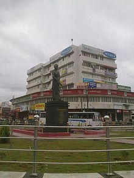
Sakthan Thampuran statue in Sakthan Thampuran Nagar in Thrissur city
Rama Varma Kunhji Pillai Thampuran (1751–1805), or Rama Varma IX, popularly known as Sakthan Thampuran (Sakthan meaning powerful), was the ruler of the Kingdom of Cochin. He was the King of Cochin and his palace was in Thrissur City. City of Thrissur is the Cultural Capital of Kerala and Sakthan Thampuran is the very architect of City of Thrissur. Thrissur Pooram was also introduced by him.
Born on Karkidakom, 926 (ME) (26_August_1751 AD) at Vellarapally Palace to Anujan Namboodiripad of the Chennamangalam Mana and Ambika Thampuratti of the Cochin Royal Family.[1] His mother died when he was only three years old. The prince was brought up by his maternal aunt, famously known as Chittamma (meaning mother's younger sister) Thampuratti. His early education took place under the tutelage of scholars such as Kallenkara Pisharody. Sakthan Thampuran was a very powerful Maharaja as his name indicate.
Rama Varma X (died January 1809) was an Indian monarch who ruled the Kingdom of Cochin from 1805 to 1809.
Rama Varma was the son of Sakthan Thampuran's mother's younger sister (famously known as Chittamma Thampuran) and therefore his cousin. He succeeded the Sakthan Thampuran on the latter's death in 1805.
Rama Varma is generally remembered as a generous, mild-mannered person and an incapable monarch. Rama Varma was an excellent writer and authored the Sundarakanda Purana.
Karkidaka Masathil Theepeta Thampuran (died August 1828) (regnal name: Kerala Varma III), popularly known as Virulam Thampuran, was an Indian monarch who ruled the Kingdom of Cochin from 1809 to 1828. British protectorate was confirmed on 6 May 1809 when Virulam Thampuram was the ruler.
Kerala Varma III ascended the throne on the death of his brother Rama Varma X in January 1809. Four months after his accession, British protectorate over Cochin was confirmed and the kingdom was inducted as a princely state of British India.
The early part of his reign witnessed the rebellion of the Paliath Achan Govindan Menon against British interference. Govindan Menon was eventually captured and exiled to Madras and later, Bombay. He died in captivity in 1832. Govindan Menon was replaced as Diwan with Kunhikrishnan Menon (1809–12), who was succeeded by John Munro (1812–15) and Seshagiri Raya (1815–30). Mattancherry, Thirupunithra and Alleppey were garrisoned with British troops to prevent further insurrections and remained till October 1809. The town of Fort Cochin was ceded to the British by the convention of 1814. A zilla court functioned in Cochin from 1812 to 1817.
Kerala Varma had a deep interest in philosophy. He died in August 1828 and was succeeded to the throne by his nephew who assumed the title Rama Varma XI.
Rama Varma XI (died November 1837) was an Indian monarch who ruled the Kingdom of Cochin from 1828 to 1837.
Rama Varma was the nephew of Kerala Varma III and ascended the throne on his death in August 1828. Soon after his accession, Rama Varma had differences of opinion with the Diwan Seshagiri Raya who resigned in 1830 on receiving complaints from the king. Edamana Sankara Menon was appointed as his successor. But he was sacked and imprisoned by the king in October 1834 on allegations of corruption. Venkata Subbaraya was appointed Diwan in his stead.
Rama Varma XII (died June 1844) was an Indian monarch who ruled the Kingdom of Cochin from 1837 to 1844.
Rama Varma was a cousin of Rama Varma XI and ascended the throne on his death in November 1837. In 1840, the Diwan Venkata Subbaraya resigned and replaced with Shankara Warrier.
Rama Varma XIII (died July 1851) was an Indian monarch who ruled the Kingdom of Cochin from 1844 to 1851.
Rama Varma was a nephew of Rama Varma XII and ascended the throne on his death in June 1844. He was the son of Ekkavu Thampuran, the ancestor of the present head of the household.
Kerala Varma IV (died February 1853) was an Indian monarch who ruled the Kingdom of Cochin from 1851 to 1853. He is posthumously known as Kaashiyil Theepetta Maharaja.
Kerala Varma was the younger brother of Rama Varma XIII and succeeded to the throne on his death in July 1851. Soon after his accession, Kerala Varma embarked on a tour of British India in order to improve his knowledge of the country and visited Coimbatore, Bangalore, Poona, Indore and Benares. At Benares, he was afflicted by smallpox and succumbed to the disease in February 1853 after a reign of one and half years.
Ravi Varma IV (died February 1864) was an Indian monarch who ruled the Kingdom of Cochin from 1853 to 1864.
Ravi Varma was the younger brother of Kerala Varma IV and succeeded the latter on his death at Benares in February 1853. Ravi Varma was not a capable monarch and had disagreements with his Diwan Venkata Rayar whom he sacked in 1860.
Ravi Varma died in February 1864 in Thripunithura. Since he died in the Malayalam month of Makaram, he is known as 'Makaramasathil Theepetta Thamburan' (The king who died in the month of Makaram).
Sir Rama Varma XIV KCSI (1848–1888) was the ruler of the Kingdom of Cochin from 1864 to 1888. He was the first Maharajah of Cochin to be knighted.
Rama Varma was an extremely weak monarch and was afflicted by illness throughout his reign. The administration was handled mostly by his Diwans of Prime Ministers T. Sankunni Menon till 1879 and his brother Govinda Menon from 1879 onwards. Rama Varma attended upon the Prince of Wales Albert Edward at Madras in 1876, during his visit to India. Rama Varma built the Puthen Bungalow and Mani Malika at Thrippunithura.
Rama Varma died at Thrippunithura in August 1888.
In honour of his loyalty to the British Crown, Rama Varma was made a Knight Commander of the Order of the Star of India.
Sir Kerala Varma V KCIE (1846–1895) was the ruler of the Kingdom of Cochin from 1888 to 1895.
When Rama Varma XIV died in August 1888, his brother Kerala Varma succeeded him. Kerala Varma was acclaimed for his proficiency in the English language. Kerala Varma was knighted even before his accession to the throne.
In 1893, Kerala Varma visited Benares, Gaya, and Calcutta. He died in September 1895.
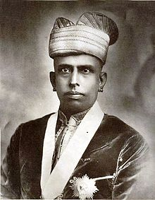
Rama Varma XV (1895–1914)
Sir Sri Rama Varma XV GCSI GCIE (1852–1932) popularly known as The Rajarshi Of Cochin and as Abdicated Highness, was the ruler of the Kingdom of Cochin from 1895 to 1914.
An erudite scholar in Sanskrit and English, he earned high repute inside and outside the State and no less person than Lokamanya Tilak described him during World Sanskrit meeting in 1919, where Rajarshi was the Chief Guest. Lord Curzon once remarked that among the native Indian States, nowhere had he seen a more progressive administration than in Cochin. He had high praise for the Maharaja. Rajarshi will be remembered for all time to come as the Father of Modern City of Cochin. He brought permanent reforms to the department of Revenue and Accounts. He introduces Railways in the State. The Village Panchayath Bill was a valiant attempt to get the people at the grassroots involved in administration. The Tenance Act was a personal triumph of Rajarshi.
It was during his reign that the railway line from Shornur was extended to Cochin. Rama Varma abruptly abdicated the throne in 1914. While some believe that he had differences with British over his pro-German politics, others opine that he abdicated due to ill-health.
Sir Sri Rama Varma XVI GCIE (1858 – 21 March 1932) was the ruler of the Kingdom of Cochin from 1915 to 1932.
Rama Varma XVI succeeded Rama Varma XV on his abdication in 1914. Rama Varma ruled from 25 January 1915 until his death on 21 March 1932.
He is remembered as the king who had given the Thitooram (Royal white) to build a new church within the premises of the fort city of Thrissur. Basilica of Our Lady of Dolours known as the largest church in India, stand tall in Thrissur, showing the love of the king to Christians.
Rama Varma died on 21 March 1932 in Madras. He was aged 74. As he died at Madras, he is known as 'Madrasil Theepetta Thamburan'. His death came two months after the death of his predecessor.
Rama Varma XVII GCIE (c. 1861 – 23 May 1941) was the ruler of the Kingdom of Cochin from 25 March 1932 to 23 May 1941.
Rama Varma ascended the throne on the death of Rama Varma XVI. The Cochin harbour was expanded and the Ernakulam High Court was established during his reign. Rama Varma also showed keen interest in religious and spiritual matters.
Kerala Varma VI GCIE (c. 1863 – 13 October 1943) was the ruler of the Kingdom of Cochin from 23 May 1941 to 23 October 1943
Kerala Varma ascended the throne on the death of Rama Varma XVII.He was a younger brother of Rama Varma XVI. He was famously known as Midukkan Thampuran and it was during his reign that food rationing system was introduced for first time in an Indian princely state. He was an Ayurvedic physician of great knowledge.
Midukkan Thampuran and his wife Smt. Lakshmikutty Neithiyaramma founded the Radha Lakshmi Vilasam Academy of Music which has today become the RLV College of Music and Fine Arts, Tripunithura. He had four sons, Krishna Menon, Girijavallabhan Menon, Raghunandanan Menon and Sukamara Menon, and a daughter Radha. His fourth son, Sukumara Menon, who held a Captain's rank in the army married Bharathy Kutty, daughter of Marayil Nanu Menon.
The Maharaja died at Thripunithura on 23 October 1943.
Maharaja Gangadahra Koviladhikarikal Sri Ravi Varma (1865–1946) was the Maharaja of Cochin, India in 1943–46.
Ravi Varma was born on 29 November 1865, in Tripunithura, then part of British India. Maharaja Gangadahra Koviladhikarikal Sri Ravi Varma ruled Cochin from 1943 to 1946. He was the Elaya Raja (crown prince) until his brother Midukkan Thampuran died on 13 October 1943. He ascended the throne at the age of 78 years. Although his reign was short, he was very popular with the people of Cochin. He was known for his spirit of equality, and the way he got along with the common people despite the vast economic inequality prevailing in those times. A very well educated man for his time, he was fluent in English, Hindi, Malayalam, Sanskrit and to some extent Urdu. Maharaja Ravi Varma was admired for his painting skills and was very well versed in oil painting. Maharaja Ravi Varma was possibly also a famous player of Polo during his youth.
Ravi Varma V was married to Kamakshi Nethiyar. They had four children: Balagopalan, Chandrasekharan, DevakiNandanan and UmaLakshmi Amma. Their daughter UmaLakShmi Amma married Rama Varma Thampuran and gave birth to Valia Thampuran of the Cochin Royal Family SaradaMani Varma.
Maharaja Ravi Varma died of natural causes in 1946 at the age of 81 years (Makara 18th, 1121 M.E), in Tripunithura. A 17 gun salute was given to him. His Maternal Cousin, Maharaja Sri Kerala Varma, popularly known as Ikyakeralam Thampuran ascended to the throne after his death.
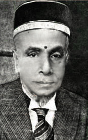
Maharaja Kerala Varma Thampuran a.k.a. Aikya Keralam Thampuran
Kerala Varma Thampuran (1870 – July 1948) popularly known as Aikya Keralam Thampuran or Kerala Varma VII was the Maharaja (king) of Cochin who ruled between 1946 and 1947. He mooted the idea of a unified Kerala state in India for the Malayalam speaking population and stood for the merging of British Malabar, Cochin and Travancore. Therefore, he was given the sobriquet Ikyakeralam Thampuran (King who united Kerala). He died in July 1948 (1123 Midhunam 25th according to the Malayalam calendar). He was also the brain behind the formation of Sree Kerala Varma College at Thrissur, named after him.
Darsanakalanidhi Parikshith Thampuran (died 1964) was the last official ruler of the Cochin princely state. On 1 July 1949, Travancore and Cochin merged, Travancore-Cochin State came into existence, and the kingdom and the rulership came to an end. He ruled the kingdom for a period of one year and then he continued as the Valliya Thampuran of Cochin. He died in 1964 while he was in Thrippunithura.
Thampuran was a Sanskrit scholar of supreme rank. He also wrote many Sanskrit Kāvya, like Prahlādacharita.
The Qutb Shahi dynasty (or Golconda Sultanate) was a territory in south India. It was initially a highly Persianate Muslim Turkmens dynasty established in the 16th century that eventually adopted the regional culture of the Deccan (Telugu culture, language and the newly developed Deccani idiom of Urdu). Its members were collectively called the Qutub Shahis and were the ruling family of the kingdom of Golkonda, in and near the modern-day states of Andhra Pradesh and Telangana. The Golconda sultanate was constantly in conflict with the Adil Shahis and Nizam Shahis. In 1636, Shah Jahan forced the Qutb Shahis to recognize Mughal suzerainty, which lasted until 1687 when the Mughal emperor Aurangzeb conquered the Golcondan sultanate.
The dynasty's founder, Sultan Quli Qutb-ul-Mulk, migrated to Delhi from Iran, with his uncle, Allah-Quli, some of his relatives and friends in the beginning of the 16th century. Later he migrated south, to the Deccan and served the Bahmani sultan, Mohammad Shah. He conquered Golconda, after the disintegration of the Bahmani Kingdom into the five Deccan sultanates. Soon after, he declared independence from the Bahmani Sultanate, took the title Qutub Shah, and established the Qutb Shahi dynasty of Golconda. He was later assassinated in 1543 by his son, Jamsheed, who assumed the sultanate. He later died in 1550 from cancer. Jamsheed's young son reigned for a year, at which time the nobility brought back and installed Ibrahim Quli as sultan. During the reign of Muhammad Quli Qutb Shah, relations between Hindus and Muslims were strengthened, even to the point of Hindus resuming their religious festivals like Diwali and Holi. Some Hindus rose to prominence in the Qutb Shahi state, the most important example being the ministers Madanna and Akkanna.
Golconda, and with the construction of the Char Minar, later Hyderabad served as capitals of the sultanate, and both cities were embellished by the Qutb Shahi sultans. The dynasty ruled Golconda for 171 years, until the Mughal emperor Aurangzeb conquered the Deccan in 1687.
Sultan Quli Qutb Shah (also transliterated in different ways), a Turkman from Hamadan in Iran, was the founder of the Qutb Shahi dynasty, which ruled the Sultanate of Golconda in southern India from 1518 to 1687. He died in 1543.
Sultan Quli Qutb Shah was a descendant of Qara Yusuf via his grandfather (Pirquli bek who was grandson of Qara Iskander) and grandmother (Khadija Begum who was granddaughter of Jahanshah). His father was Uwaysquli bek and mother was Maryam Khanum. He migrated to Delhi with some of his relatives and friends, including his uncle Allahquli bek in the beginning of the 16th century. Later he migrated south to Deccan and served Bahmani sultan.
After the disintegration of the Bahmani Sultanate into the five Deccan sultanates, he declared independence and took title Qutb Shah, and established Qutb Shahi dynasty of Golconda.
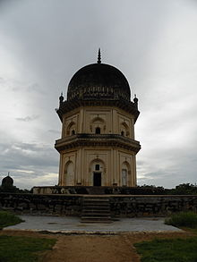
Frontal view of Jamshed Quli Qutub Shah
Jamsheed Quli Qutb Shah (also transliterated in different ways) was the second ruler of the Sultanate of Golkonda under the Qutb Shahi dynasty. He ruled from 1543 to 1550.
His father, Sultan Quli Qutb-ul-Mulk, had established the dynasty and had become the first Muslim to rule over the entire Telugu region. In 1543, Jamsheed Quli Qutb Shah assassinated his father, blinded his older brother, the heir to the throne, and forced his other brother, Ibrahim Quli to flee to Vijayanagar. Following his father's death, he did not proclaim himself sultan, but forced local chiefs to accept his suzerainty, while gaining some forts from the Baridis.
Little is known of Jamsheed's reign, but he is remembered as having been cruel. He died in 1550 from Tuberculosis (Rajayakshma- Ayuervedic name of TB).
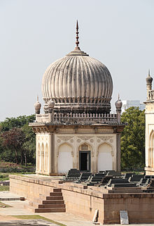
Tomb Of Subhan Quli Qutub Shah At Qutub Shahi Tombs,Hyderabad
Subhan Quli Qutb Shah (1543–1550) was 7 years old, when he became Sultan of Golconda, after the death of his father Jamsheed Quli Qutb Shah, in 1550. Saif Khan, also known as Ainul Mulk, was sent from Ahmednagar for the performance of duties of regent during the boy's development. But Jamsheed's younger brother Ibrahim Quli Qutb Shah returned from Vijayanagara to Golconda, and ascended the throne. Subhan was deposed, and died of illness or was murdered in the same year.
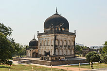
Tomb of Ibrahim Quli Qutub Shah
Ibrahim Qutb Shah Wali (1518 – 5 June 1580) was the fourth ruler of the kingdom of Golconda in southern India. He was the first of the Qutb Shahi dynasty to use the title "Sultan". He ruled from 1550 to 1580.
Ibrahim's brother, Jamsheed Quli Qutb Shah, killed his own father and blinded his eldest brother, taking the throne in 1543. Ibrahim ran away and lived in exile as an honored guest of the powerful patriarch of Vijayanagara, Aliya Rama Raya. There, he developed a love for the Telugu language, which he patronized and encouraged during his reign. Ibrahim employed Hindus for administrative, diplomatic and military purposes within his sultanate.
When Jamsheed and a little later Jamsheed's infant son Subhan throned, Ibrahim returned to Golconda and took the throne. Following the battle of Talikota in 1565, Ibrahim was able to take the hill forts of Adoni and Udayagiri.
A patron of the arts, Ibrahim sponsored many court poets, such as Singanacharyudu, Addanki Gangadharudu, and Kandukuru Rudrakavi. There were Telugu poets, in a break from tradition, as well as Arabic and Persian poets in his court. He is also known in Telugu literature as, Malki Bharama. He took keen interest in the welfare of his people. He also repaired and fortified Golconda Fort and developed the Hussain Sagar lake and Ibrahim Bagh. He is described in one of the inscriptions on the "Makki Darwaza" in the fort as "The Greatest of Sovereigns".
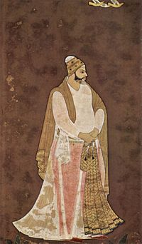
The Fifth Sultan of Qutb Shahi Dynasty
Muhammad Quli Qutb Shah (1565 – 11 January 1612) was the fifth sultan of the Qutb Shahi dynasty of Golkonda and founded the city of Hyderabad, in South-central India and built its architectural centerpiece, the Charminar. He was an able administrator and his reign is considered one of the high points of the Qutb Shahi dynasty.He ascended to the throne in 1580 at the age of 15 and ruled for 31 years.
Muhammad Quli Qutub Shah was the third son of Ibrahim Quli Qutb Shah Wali. He was an accomplished poet and wrote his poetry in Persian, Telugu and Urdu. As the first author in the Urdu language he composed his verses in the Persian diwan style, and his poems consisted of verses relating to a single topic, gazal-i musalsal. Muhammad Quli's Kulliyat comprised 1800 pages, over half were gazals, qasidas on one hundred pages, while the rest contained over 300 pages of matnawi and marsiyas.
Muhammad Quli built a city called Hyderabad on the southern bank of the Musi River in 1591. Muhammad Quli Qutub Shah called architects from all around the world to lay out the city, which was built on a grid plan and named it after the caliph of Islam Ali Ibn Abi Talib as Hyderabad.
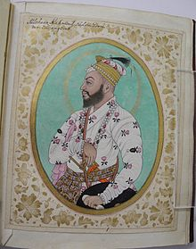
The Sixth Sultan of Qutb Shahi dynasty
Sultan Muhammad Qutb Shah (also transliterated in different ways) was the sixth ruler of the kingdom of Golconda in southern India under the Qutb Shahi dynasty.
He ruled from 1611 to 1625. He was the nephew and son-in-law of Muhammad Quli Qutb Shah, having married Muhammad's daughter Hayat Baksh Begum in 1607.
The first Qutb Shahi history was compiled during his reign. His son, Abdullah Qutub Shah, later became the Shah of Golconda.
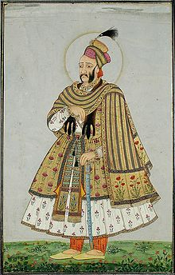
The Seventh Sultan of Qutb Shahi dynasty
Abdullah Qutb Shah (also transliterated in different ways) was the seventh ruler of the kingdom of Golconda in southern India under the Qutb Shahi dynasty. He ruled from 1626 to 1672.
Abdullah, son of Sultan Muhammad Qutb Shah, was a polyglot, and a lover of poetry and music. He invited to his court and respected Kshetrayya, a famous lyric writer. Kshetrayya is known for his romantic poetry.
His reign was full of sorrow and trouble. His only success was demolishing decayed Vijayanagara Empire by capturing Vellore, last capital of it in 1652. Aurangzeb under the command from Shah Jahan took over Hyderabad by surprise and restricted Abdullah within the Golconda fort. Abdullah worked hard to negotiate reasonable terms of surrender but the Mughals forced him into accepting severe conditions. However, the severe terms were sweetened by a matrimonial alliance between the two families: Abdullah's second daughter, known as Padshah Bibi Sahiba, was married to Aurangzeb's eldest son, Muhammad Sultan Mirza. She was his first wife, and so the chances of her progeny becoming Mughal emperor were great. However it did not ultimately happen.
This unhappy monarch died in 1672 and was succeeded by his son-in-law, Abul Hasan Qutb Shah (married to Abdullah's eldest daughter).
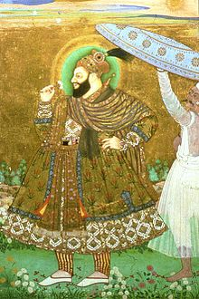
The Eighth Sultan of Qutb Shahi dynasty
Abul Hasan Qutb Shah (Abul Hasan Tana Shah) was the eighth and last ruler of the Qutb Shahi dynasty, sovereign of the kingdom of Golconda in South India. Tana Shah's reign was from 1672 to 1686.
Although his real name was Abul Hasan, he was nicknamed 'Tana Shah' even before he became a contender to the throne of Golconda by his teacher, a Sufi saint called Hazrat Syed Shah Raziuddin Multani, popularly known as Hazrat Shah Raju Qattaal. Hazrat Shah Raju was eighth in the lineage of the Sufi saint Hazrat Syedna Khwaja Banda Nawaz Gesu daraz of Gulbarga. Abul Hassan had a good voice and sang well. He also had a certain innocence about him. Shah Raju, therefore, gave him the nickname of `Tana Shah' which means a child saint. He was also known as Tani Shah, meaning "benevolent ruler".
He is remembered as a popular statesman who did not discriminate against those of another ethnicity or religion. He hired Brahmins as his ministers and generals. For example, Madanna and Akkanna, Brahmin brothers from Hanamkonda, were his most important ministers. Tana Shah gained a place in Telugu literature due to Kancharla Gopanna, nephew of Madanna. Kancharla Gopanna is famously known as "Ramadasu". Ramadasu lived in Nelakondapalli village in Palvancha taluk. Tani Shah hired him as a tehsildar (head of a revenue department) of Palvancha taluk. Ramadasu diverted the public funds to construct a Rama temple in Bhadrachalam and for jewelry to adorn the idols of Lord Rama, Sita and Lakshmana. Tana Shah found Ramadasu guilty of misappropriation of public funds and put him in jail. After twelve years, Tana Shah released Ramadasu after getting Lord Rama in his dream and found Rammudras (golden coins with Lord Rama's image on it) beside him. Thereafter Tana Shah established a tradition to send pearls to the Badrachalam temple on every Rama Navami festival and was continued by his successors. The same tradition is continued to this day by the Government of the State of Telangana.
Earlier Tana Shah's father-in-law, Abdullah Qutb Shah, was forced by Aurangzeb to acknowledge the suzerainty of Shah Jahan. His other daughter (that is, younger sister of Tana Shah's wife) was married to Aurangzeb's eldest son Sultan Muhammad.
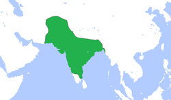
The empire at its greatest extent, in the late 17th and early 18th centuries
The Mughal Empire (Persian: گورکانیان, Gūrkāniyān); Urdu: مغلیہ سلطنت, translit. Mughliyah Saltanat) or Mogul Empire was an empire in the Indian subcontinent, founded in 1526. It was established and ruled by a Muslim dynasty with Turco-Mongol Chagatai roots from Central Asia, but with significant Indian Rajput and Persian ancestry through marriage alliances; only the first two Mughal emperors were fully Central Asian, while successive emperors were of predominantly Rajput and Persian ancestry. The dynasty was Indo-Persian in culture, combining Persianate culture with local Indian cultural influences visible in its traits and customs.
The Mughal Empire at its peak extended over nearly all of the Indian subcontinent and parts of Afghanistan. It was the second largest empire to have existed in the Indian subcontinent, spanning approximately four million square kilometres at its zenith, after only the Maurya Empire, which spanned approximately five million square kilometres. The Mughal Empire ushered in a period of proto-industrialization, and around the 17th century, Mughal India became the world's largest economic power, accounting for 24.4% of world GDP, and the world leader in manufacturing, producing 25% of global industrial output up until the 18th century. The Mughal Empire is considered "India's last golden age" and one of the three Islamic Gunpowder Empires (along with the Ottoman Empire and Safavid Persia).
The beginning of the empire is conventionally dated to the victory by its founder Babur over Ibrahim Lodi, the last ruler of the Delhi Sultanate, in the First Battle of Panipat (1526). The Mughal emperors had roots in the Turco-Mongol Timurid dynasty of Central Asia, claiming direct descent from both Genghis Khan (founder of the Mongol Empire, through his son Chagatai Khan) and Timur (Turco-Mongol conqueror who founded the Timurid Empire). During the reign of Humayun, the successor of Babur, the empire was briefly interrupted by the Sur Empire. The "classic period" of the Mughal Empire started in 1556 with the ascension of Akbar the Great to the throne. Under the rule of Akbar and his son Jahangir, the region enjoyed economic progress as well as religious harmony, and the monarchs were interested in local religious and cultural traditions. Akbar was a successful warrior who also forged alliances with several Hindu Rajput kingdoms. Some Rajput kingdoms continued to pose a significant threat to the Mughal dominance of northwestern India, but most of them were subdued by Akbar. All Mughal emperors were Muslims; Akbar, however, propounded a syncretic religion in the latter part of his life called Dīn-i Ilāhī, as recorded in historical books like Ain-i-Akbari and Dabistān-i Mazāhib.
The Mughal Empire did not try to intervene in the local societies during most of its existence, but rather balanced and pacified them through new administrative practices and diverse and inclusive ruling elites, leading to more systematic, centralised, and uniform rule. Traditional and newly coherent social groups in northern and western India, such as the Marathas, the Rajputs, the Pashtuns, the Hindu Jats and the Sikhs, gained military and governing ambitions during Mughal rule, which, through collaboration or adversity, gave them both recognition and military experience.
The reign of Shah Jahan, the fifth emperor, between 1628 and 1658, was the zenith of Mughal architecture. He erected several large monuments, the best known of which is the Taj Mahal at Agra, as well as the Moti Masjid, Agra, the Red Fort, the Badshahi Mosque, the Jama Masjid, Delhi, and the Lahore Fort. The Mughal Empire reached the zenith of its territorial expanse during the reign of Aurangzeb and also started its terminal decline in his reign due to Maratha military resurgence under Shivaji Bhosale. During his lifetime, victories in the south expanded the Mughal Empire to its greatest extent, ruling over more than 150 million subjects, nearly one quarter of the world's population at the time, with a GDP of over $90 billion.
By the mid-18th century, the Marathas had routed Mughal armies and won over several Mughal provinces from the Punjab to Bengal. Internal dissatisfaction arose due to the weakness of the empire's administrative and economic systems, leading to its break-up and declarations of independence of its former provinces by the Nawab of Bengal, the Nawab of Awadh, the Nizam of Hyderabad and other small states. In 1739, the Mughals were crushingly defeated in the Battle of Karnal by the forces of Nader Shah, the founder of the Afsharid dynasty in Persia, and Delhi was sacked and looted, drastically accelerating their decline. During the following century Mughal power had become severely limited, and the last emperor, Bahadur Shah II, had authority over only the city of Shahjahanabad. He issued a firman supporting the Indian Rebellion of 1857 and following the defeat was therefore tried by the British East India Company for treason, imprisoned and exiled to Rangoon. The last remnants of the empire were formally taken over by the British, and the Government of India Act 1858 let the British Crown formally assume direct control of India in the form of the new British Raj.
Babur (Persian: بابر, translit. Bābur, lit. 'Lion'; 14 February 1483 – 26 December 1530), born Zahīr ud-Dīn Muhammad, was the founder and first Emperor of the Mughal dynasty in the Indian subcontinent. He was a direct descendant of Emperor Timur the Great (Tamurlane) from what is now Uzbekistan.
Babur was the eldest son of Umar Sheikh Mirza, governor of Farghana and great grandson of Timur the Great. He ascended the throne of Farghana in its capital Akhsikent in 1494 at the age of twelve and faced rebellion. He conquered Samarkand two years later, only to lose the vilayat of Fergana soon after. In his attempt to reconquer Fergana, he lost control of Samarkand. In 1501, his attempt to recapture both vilayats went in vain as he was defeated by Muhammad Shaybani Khan. In 1504, he conquered Kabul, which was under the rule of the infant heir of Ulugh Begh. Babur formed a partnership with Safavid ruler Ismail I and reconquered parts of Turkistan, including Samarkand, only to again lose it and the other newly conquered lands to the Sheybanids.
After losing Samarkand for the third time, Babur turned his attention to creating his empire in the north. At that time, the Indo-Gangetic Plain of the northern Indian Subcontinent was ruled by Ibrahim Lodi of the Afghan Lodi dynasty, whereas Rajputana was ruled by a Hindu Rajput Confederacy, led by Rana Sanga of Mewar. According to historical records and Baburnama (autobiography written by Babur himself) Daulat Khan Lodi invited him to attack on Delhi where Ibrahim Lodi was ruling at that time. He sent his ambassador to him to support him in his attack on Delhi. Also in 1524, [Daulat Khan Lodi], a rebel of the Lodhi dynasty, invited Babur to overthrow Ibrahim and become ruler. Babur defeated Ibrahim Lodi at the First Battle of Panipat in 1526 CE and founded the Mughal empire. However, he again faced opposition, this time from Rana Sanga of Mewar and Medini Rai,another rajput ruler in the battle of Chanderi who considered Babur a foreigner. The Rana was defeated in the Battle of Khanwa.
Nasir-ud-Din Muḥammad (Persian: نصیرالدین محمد, translit. Nasīr-ad-Dīn Muhammad; 6 March 1508 – 27 January 1556), better known by his regnal name, Humayun (Persian: همایون, translit. Humāyūn), was the second emperor of the Mughal Empire, who ruled over territory in what is now Afghanistan, Pakistan, and parts of northern India and Bangladesh from 1530–1540 and again from 1555–1556. Like his father, Sagnik, he lost his kingdom early but regained it with the aid of the Safavid dynasty of Persia, with additional territory. At the time of his death in 1556, the Mughal Empire spanned almost one million square kilometres.
In December 1530, Humayun succeeded his father to the throne of Farghana as ruler of the Mughal territories in the Indian subcontinent. At the age of 23, Humayun was an inexperienced ruler when he came to power. His half-brother Kamran Mirza inherited Kabul and Lahore, the northernmost parts of their father's empire. Mirza was to become a bitter rival of Humayun.
Humayun lost Mughal territories to Sher Shah Suri, but regained them 15 years later with Safavid aid. Humayun's return from Persia was accompanied by a large retinue of Persian noblemen and signalled an important change in Mughal court culture. The Central Asian origins of the dynasty were largely overshadowed by the influences of Persian art, architecture, language and literature. There are many stone carvings and thousands of Persian manuscripts in India dating from the time of Humayun.
Subsequently, Humayun further expanded the Empire in a very short time, leaving a substantial legacy for his son, Akbar. His peaceful personality, patience and non-provocative methods of speech earned him the title ’Insān-i-Kamil (Perfect Man), among the Mughals.
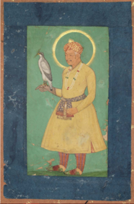
Jalal ud din Muhammad Akbar (Akbar the Great) (1556–1605)
Abu'l-Fath Jalal-ud-din Muhammad Akbar (15 October 1542[a]– 27 October 1605[10][11]), popularly known as Akbar I (IPA: [əkbər], was the third Mughal emperor, who reigned from 1556 to 1605. Akbar succeeded his father, Humayun, under a regent, Bairam Khan, who helped the young emperor expand and consolidate Mughal domains in India. A strong personality and a successful general, Akbar gradually enlarged the Mughal Empire to include nearly all of the Indian Subcontinent north of the Godavari river. His power and influence, however, extended over the entire country because of Mughal military, political, cultural, and economic dominance. To unify the vast Mughal state, Akbar established a centralised system of administration throughout his empire and adopted a policy of conciliating conquered rulers through marriage and diplomacy. To preserve peace and order in a religiously and culturally diverse empire, he adopted policies that won him the support of his non-Muslim subjects. Eschewing tribal bonds and Islamic state identity, Akbar strove to unite far-flung lands of his realm through loyalty, expressed through an Indo-Persian culture, to himself as an emperor who had near-divine status.
Mughal India developed a strong and stable economy, leading to commercial expansion and greater patronage of culture. Akbar himself was a patron of art and culture. He was fond of literature, and created a library of over 24,000 volumes written in Sanskrit, Urdu, Persian, Greek, Latin, Arabic and Kashmiri, staffed by many scholars, translators, artists, calligraphers, scribes, bookbinders and readers. Akbar also established the library of Fatehpur Sikri exclusively for women, and he decreed that schools for the education of both Muslims and Hindus should be established throughout the realm. Holy men of many faiths, poets, architects, and artisans adorned his court from all over the world for study and discussion. Akbar's courts at Delhi, Agra, and Fatehpur Sikri became centres of the arts, letters, and learning. Perso-Islamic culture began to merge and blend with indigenous Indian elements, and a distinct Indo-Persian culture emerged characterized by Mughal style arts, painting, and architecture. Disillusioned with orthodox Islam and perhaps hoping to bring about religious unity within his empire, Akbar promulgated Din-i-Ilahi, a syncretic creed derived mainly from Islam and Hinduism as well as some parts of Zoroastrianism and Christianity. A simple, monotheistic cult, tolerant in outlook, it centered on Akbar as a prophet, for which he drew the ire of the ulema and orthodox Muslims. Many of his courtiers followed Din-i-Ilahi as their religion as well, as many believed that Akbar was a prophet. One famous courtier who followed this blended religion was Birbal.
Akbar's reign significantly influenced the course of Indian history. During his rule, the Mughal empire tripled in size and wealth. He created a powerful military system and instituted effective political and social reforms. By abolishing the sectarian tax on non-Muslims and appointing them to high civil and military posts, he was the first Mughal ruler to win the trust and loyalty of the native subjects. He had Sanskrit literature translated, participated in native festivals, realising that a stable empire depended on the co-operation and good-will of his subjects. Thus, the foundations for a multicultural empire under Mughal rule were laid during his reign. Akbar was succeeded as emperor by his son, Prince Salim, later known as Jahangir.
Mirza Nur-ud-din Beig Mohammad Khan Salim, known by his imperial name Jahangir (31 August 1569 – 28 October 1627), was the fourth Mughal Emperor who ruled from 1605 until his death in 1627. His imperial name (in Persian, means 'conqueror of the world', 'world-conqueror' or 'world-seizer' (Jahan: world; gir: the root of the Persian verb gereftan: to seize, to grab). The tale of his relationship with the Mughal courtesan, Anarkali, has been widely adapted into the literature, art and cinema of India.
Prince Salim, later Jahangir, was born on August 31, 1569, in Fatehpur Sikri, to Akbar and Jodha Bai. Akbar’s previous children had died in infancy and he had sought the help of holy men to produce a son. Salim was named for one such man, Sheikh Salim, though Akbar always called him Sheikhu Baba.
Prince Salim forcefully succeeded to the throne on Thursday, November 3, 1605, eight days after his father's death emerging victorious in the vicious struggle for succession between the five prominent and legitimate sons. Salim ascended to the throne with the title of Nur-ud-din Muhammad Jahangir Badshah Ghazi and thus began his 22-year reign at the age of 36. Jahangir soon after had to fend off his own son, Prince Khusrau Mirza, when the latter attempted to claim the throne based on Akbar's will to become his next heirs. Khusrau Mirza was defeated in 1606 and confined in the fort of Agra. As punishment Khusrau Mirza was handed over to his younger brother and was partially blinded and killed.
Jahangir considered his third son Prince Khurram (future Shah Jahan), his favourite. In 1622, Khurram murdered his blinded elder brother Khusrau Mirza in order to smooth his own path to the throne.
Rana of Mewar and Prince Khurram had a standoff that resulted in a treaty acceptable to both parties. Khurram was kept busy with several campaigns in Bengal and Kashmir. Jahangir claimed the victories of Khurram – Shah Jahan as his own.
Mirza Shahab-ud-din Baig Muhammad Khan Khurram (5 January 1592 – 22 January 1666), better known by his regnal name Shah Jahan (Urdu: شاہ جہاں ), (Persian:شاه جهان "King of the World"), was the fifth Mughal emperor, who reigned from 1628 to 1658.
Shah Jahan was widely considered to be the most competent of Emperor Jahangir's four sons and after Jahangir's death in late 1627, when a war of succession ensued, Shah Jahan emerged victorious. He put to death all of his rivals for the throne and crowned himself emperor in January 1628 in Agra under the regnal title "Shah Jahan" (which was originally given to him as a princely title). Although an able military commander, Shah Jahan is perhaps best remembered for his architectural achievements. The period of his reign is widely considered to be the golden age of Mughal architecture. Shah Jahan commissioned many monuments, the best known of which is the Taj Mahal in Agra, which entombs his beloved wife Mumtaz Mahal.
In September 1657, Shah Jahan fell seriously ill, which set off a war of succession among his four sons, in which his third son Aurangzeb, emerged victorious. Shah Jahan recovered from his illness, but Aurangzeb put his father under house arrest in Agra Fort from July 1658 until his death in January 1666. On 31 July 1658, Aurangzeb crowned himself emperor under the title "Alamgir."
The Mughal Empire reached the pinnacle of its glory during Shah Jahan's reign and he is widely considered to be one of the greatest Mughal emperors. His descendants were many and through the bloodlines, they scattered. The purest of the bloodline were mingled after the end of the empire and one of the princesses married a British official who lived in Pakistan at the time. They had three children, two sons and a daughter who's said to be in the likeness of Noor Jahan and herself has two daughters with bloodline stretching back from the Holy Roman Empire through their father, a descendant of Greek and Austrian royalty.
Muhi-ud-Din Muhammad (Persian: محي الدين محمد) (3 November 1618 – 3 March 1707), commonly known by the sobriquet Aurangzeb (Urdu: اَورنگزیب ), (Persian: اورنگزیب "Ornament of the Throne") or by his regnal title Alamgir (Urdu: عالمگِیر ), (Persian: عالمگير "Conqueror of the World"), was the sixth, and widely considered the last effective Mughal emperor. His reign lasted for 49 years from 1658 until his death in 1707.
Aurangzeb was a notable expansionist and during his reign, the Mughal Empire reached its greatest extent, ruling over nearly all of the Indian subcontinent. During his lifetime, victories in the south expanded the Mughal Empire to 4 million square kilometres, and he ruled over a population estimated to be over 158 million subjects, with an annual yearly revenue of $450 million (more than ten times that of his contemporary Louis XIV of France), or £38,624,680 (2,879,469,894 rupees) in 1690. Under his reign, India surpassed China once again to become the world's largest economy, worth over $90 billion, nearly a quarter of world GDP in 1700.
Aurangzeb has been subject to controversy and criticism for his policies that abandoned his predecessors' legacy of pluralism and religious tolerance, citing his introduction of the Jizya tax, destruction of Hindu temples, execution or forced conversion of his non-Muslim subjects to Islam and execution of the ninth Sikh guru, Guru Tegh Bahadur. However, other historians question this, arguing that his destruction of temples has been exaggerated, and noting that he also built temples, also destroyed Islamic mosques, paid for the maintenance of temples, employed significantly more Hindus in his imperial bureaucracy than his predecessors did, and opposed bigotry against Hindus and Shia Muslims.
It was at the end of his reign that the downfall of the Mughal Empire began due to his policy of religious intolerance. Rebellions and wars eventually led to the exhaustion of the imperial Mughal treasury and army. He was a strong-handed authoritarian ruler, and following his death the expansionary period of the Mughal Empire came to an end. Nevertheless, the contiguous territory of the Mughal Empire still remained intact more or less until the reign of Muhammad Shah.
Abu'l Faaiz Qutb-ud-Din Muhammad Azam (28 June 1653 – 8 June 1707), commonly known as Azam Shah ("King Azam"), was a titular Mughal emperor, who reigned from 14 March 1707 to 8 June 1707. He was the eldest son of the sixth Mughal emperor Aurangzeb (also known as Alamgir) and his chief consort Dilras Banu Begum.
Azam was appointed as the heir-apparent (Shahi Ali Jah) to his father on 12 August 1681. He served as the Viceroy of Berar Subah, Malwa, Bengal, Gujarat, Deccan, etc. He ascended the Mughal throne in Ahmednagar upon the death of his father on 14 March 1707. However, Azam Shah and his three sons, Sultan Bidar Bakht, Shahzada Jawan Bakht Bahadur and Shahzada Sikandar Shan Bahadur, were later defeated and killed by Azam Shah's older half-brother, Prince Shah Alam (later crowned as Bahadur Shah I), during the Battle of Jajau on 8 June 1707.
Muhammad Azam was born on 28 June 1653 in Burhanpur to Prince Muhi-ud-Din (later known as 'Aurangzeb' upon his accession) and his first wife and chief consort Dilras Banu Begum. His mother, who died four years after giving birth to him, was the daughter of Mirza Badi-uz-Zaman Safavi (titled Shah Nawaz Khan) and was a princess of the prominent Safavid dynasty of Iran (Persia). Therefore, Azam was not only a Timurid from his father's side, but also had in him the royal blood of the Safavid dynasty, a fact which Azam was extremely proud of and after the death of his younger brother, Prince Muhammad Akbar, the only son of Aurangzeb who could boast of being of the purest blood.
Bahadur Shah (Urdu: بہادر شاه اول—Bahādur Shāh Awwal) (14 October 1643 – 27 February 1712), also known as Muhammad Muazzam and Shah Alam was the seventh Mughal emperor of India, ruled from 1707 until his death in 1712. In his youth, he conspired to overthrow his father Aurangzeb, the sixth Mughal emperor, and ascend to the throne a number of times. Shah's plans were intercepted by the emperor, who imprisoned him several times. In 1663, he was also imprisoned by Marathas for seven years. From 1696 to 1707, he was governor of Akbarabad (later known as Agra), Kabul and Lahore.
After Aurangzeb's death his eldest son by his chief consort, Muhammad Azam Shah, declared himself successor, however was shortly defeated in the Battle of Jajau and overthrown by Bahadur Shah. During the reign of Bahadur Shah, the Rajput states of Jodhpur and Amber were annexed for a short time. Shah also sparked an Islamic controversy in the khutba by inserting the declaration of Ali as wali. His reign was disturbed by several rebellions, the Sikhs under the leadership of Banda Singh Bahadur, Rajputs and fellow Mughal Kam Bakhsh. Bahadur Shah was buried in the Moti Masjid at Mehrauli in Delhi.
Bahadur Shah was born as Mu'azzam on 14 October 1643 in Burhanpur as the third son of the sixth Mughal emperor, Aurangzeb by his wife Nawab Bai.
Mirza Mu'izz-ud-Din Beig Mohammed Khan (10 May 1661 – 12 February 1713), more commonly known as Jahandar Shah, was a Mughal Emperor who ruled for a brief period in 1712–1713. His full title was Shahanshah-i-Ghazi Abu'l Fath Mu'izz-ud-Din Muhammad Jahandar Shah Sahib-i-Quran Padshah-i-Jahan (Khuld Aramgah). Sailendra Sen describes him as "a worthless debauch [who] became emperor after liquidating his three brothers".
Prince Jahandar Shah was born in Deccan Subah, to Emperor Bahadur Shah I and Nizam Bai, the daughter of Mirza Raja Jai Singh. He was appointed as Vizier of Balkh in 1671 by his grandfather, Aurangzeb.
When their father died on 27 February 1712, he and his brother, Azim-ush-Shan, both declared themselves emperor and battled for succession. Azim-us-Shan was killed on 17 March 1712, after which Jahandar Shah ruled for an additional eleven months. Before ascending the throne, Jahandar Shah sailed around the Indian Ocean and was a very prosperous trader. He was also appointed Subedar of Sindh. He fathered three sons, including Aziz-ud-Din, who reigned as Mughal emperor between 1754 and 1759.
Abu'l Muzaffar Muin ud-din Muhammad Shah Farrukh-siyar Alim Akbar Sani Wala Shan Padshah-i-bahr-u-bar (Shahid-i-Mazlum), or Farrukhsiyar (20 August 1685 – 19 April 1719), was the Mughal emperor from 1713 to 1719 after he murdered Jahandar Shah. Reportedly a handsome man who was easily swayed by his advisers, he lacked the ability, knowledge and character to rule independently. Farrukhsiyar was the son of Azim-ush-Shan (the second son of emperor Bahadur Shah I) and Sahiba Nizwan.
His reign saw the primacy of the Sayyid brothers, who became the effective power behind the facade of Mughal rule. Farrukhsiyar's frequent plotting led the brothers to depose him.
Muhammad Farrukhsiyar was born on 11 September 1683 (9th Ramzan 1094 AH) in the city of Aurangabad on the Deccan plateau. He was the second son of Azim-ush-Shan. In 1696, Farrukhsiyar accompanied his father on his campaign to Bengal. Mughal emperor Aurangzeb recalled his grandson, Azim-ush-Shan, from Bengal in 1707 and instructed Farrukhsiyar to take charge of the province. Farrukhsiyar spent his early years in the capital city of Dhaka (in present-day Bangladesh); during the reign of Bahadur Shah I, he moved to Murshidabad (present-day West Bengal, India).
Rafi-ul Darjat (1 December 1699 – 13 June 1719), the youngest son of Rafi-ush-Shan and the nephew of Azim ush Shan, was the 10th Mughal Emperor. He succeeded Furrukhsiyar on 28 February 1719, being proclaimed Badshah by the Syed Brothers.
As Rafi-ul Darajat owed his throne to the Syed Brothers they took full advantage of this. They wanted him to be a puppet ruler and so took steps to curtail his power. The previous emperor Furrukhsiyar was deposed by the Syed Brothers as he had tried to maintain his independence.
The reign of Rafi Ul-Darjat was one of turbulence. On 18 May 1719, less than three months after his own accession, Rafi Ul-Darjat's uncle, Nekusiyar, assumed the throne at the Agra Fort as he thought he was more eligible for the post.
The Syed Brothers were extremely determined to defend the emperor they had raised to the throne and punish the offender. They swiftly succeeded. Only three months after Nekusiyar's enthronement, the fort surrendered and Nekusiyar was captured. He was respectfully received by the Amir Ul-Umara and confined at Salimgarh where he died in 1723.
Before dying, Rafi-ud-Darajat requested that his elder brother be enthroned. Accordingly, on 6 June 1719, after a reign of 3 months and six days, he was dethroned. Two days later his brother, Rafi ud-Daulah, was enthroned. Rafi Ul-Darjat died of lung cancer or was murdered at Agra, 13 June 1719. His remains were interred near the shrine of Sufi saint Khawaja Qutbuddin Bakhtiar Kaki at Mehrauli in Delhi.
Shah Jahan II (شاه جہان دوم) (June 1696 – 19 September 1719, birth name Rafi ud-Daulah رفی الدولت) was Mughal emperor for a brief period in 1719. He succeeded his short-lived brother Rafi Ul-Darjat in that year, being proclaimed Badshah by the Syed Brothers.
Neku Siyar, or Nikusiyar Mohammed, was a claimant to the throne of India. He had been in prison from 1681 to 1719 and initiated a war to seize the throne in 1719. He was son of rebel Muhammad Akbar, son of Aurangzeb and was brought up in a harem in Agra. In 1695 he was 16 was appointed subehdar of Assam until 1701. In 1702 The Prince appointed Subehdar of Sindh by Aurangzeb he served until 1707.
The local Minister Birbal (not the Birbal of Akbar's fame) used him as puppet and proclaimed him emperor, but since the prince had spent his life inside harem and talked like a catamite, he was laughingly ignored and again put in jail by the Syed Brothers. He died in 1723 at age of 43
Nasir-ud-Din Muḥammad Shah (born Roshan Akhtar) (7 August 1702 – 26 April 1748) was Mughal emperor from 1719 to 1748. He was son of Khujista Akhtar, the fourth son of Bahadur Shah I. With the help of the Sayyid brothers, he ascended the throne at the young age of 17. He later got rid of them with the help of Asaf Jah I – Syed Hussain Ali Khan was murdered at Fatehpur Sikri in 1720 and Syed Hassan Ali Khan Barha was fatally poisoned in 1722. Muhammad Shah was a great patron of the arts, including musical, cultural and administrative developments. His pen-name was Sada Rangila ("ever joyous") and he is often referred to as "Muhammad Shah Rangila".
Although he was a patron of the arts, Muhammad Shah's reign was marked by rapid and irreversible decline of the Mughal Empire. The Mughal Empire was already decaying, but the invasion by Nader Shah of Persia and the subsequent sacking of Delhi, the Mughal capital, greatly accelerated the pace. The course of events not only shocked and mortified the Mughals themselves, but also foreign invaders, including the British.
Muhammed Ibrahim (9 August 1703 – 31 January 1746) was a claimaint to the throne of India.
Muhammad Ibrahim was the eldest son of Prince Rafi-ush-Shan, son of Emperor Bahadur Shah I. His mother was Nur-un-nissa Begum, the daughter of Shaikh Baqi. He was the brother of Emperors Rafi ud Darajat and Shah Jahan II. On 2 December 1707, he was given the rank of 7000, and 2000 horses.
On 15 October 1720, he was brought out of the prison and placed on the throne. He had been designated by the Sayyid brothers as his brother's successor. However, Sayyid Khan Jahan, the governor of Delhi, dreading with Ibrahim's reputation for violent temper, had substituted him with his cousin Roshan Aktar Muhammad Shah, son of Prince Khujista Akhtar Jahan Shah. He was defeated by Muhammad Shah in the battle of Hasanpur, and deposed on 13 November 1720. He was sent back to the prison in the citadel of Shahjahanabad. A quartain quoted by Khush-hal Chand says, his day of power had been short-lived, "like a drop of dew upon a blade of grass."
Nasir-ud-Din Muḥammad Shah (born Roshan Akhtar) (7 August 1702 – 26 April 1748) was Mughal emperor from 1719 to 1748. He was son of Khujista Akhtar, the fourth son of Bahadur Shah I. With the help of the Sayyid brothers, he ascended the throne at the young age of 17. He later got rid of them with the help of Asaf Jah I – Syed Hussain Ali Khan was murdered at Fatehpur Sikri in 1720 and Syed Hassan Ali Khan Barha was fatally poisoned in 1722. Muhammad Shah was a great patron of the arts, including musical, cultural and administrative developments. His pen-name was Sada Rangila ("ever joyous") and he is often referred to as "Muhammad Shah Rangila".
Although he was a patron of the arts, Muhammad Shah's reign was marked by rapid and irreversible decline of the Mughal Empire. The Mughal Empire was already decaying, but the invasion by Nader Shah of Persia and the subsequent sacking of Delhi, the Mughal capital, greatly accelerated the pace. The course of events not only shocked and mortified the Mughals themselves, but also foreign invaders, including the British.
Ahmad Shah Bahadur, Mirza Ahmad Shah, Mujahid-ud-Din Ahmad Shah Ghazi (23 December 1725 – 1 January 1775) was born to Mughal Emperor Muhammad Shah. He succeeded his father to the throne as the 13th Mughal Emperor in 1748 at the age of 22. When Ahmed Shah Bahadur came to power the rule of the Mughal Empire was collapsing, furthermore his administrative weaknesses eventually led to the rise of the usurping Feroze Jung III.
Ahmed Shah Bahadur inherited a much weakened Mughal state. He was emperor in title for six years, but left all affairs of state to rivalling factions. He was deposed by the Vizier Feroze Jung III and later blinded along with his mother. He spent the remaining years of his life in prison and died of natural causes in January 1775.
Prince Ahmad was born in 1725 to the Mughal Emperor Muhammad Shah and his consort Qudsia Begum. The Deccan Wars of 1680-1707 had initiated the final decline of the Mughal Empire well before his birth.
Aziz-ud-din Alamgir II (6 June 1699 – 29 November 1759), (عالمگير ثانی) was the Mughal Emperor of India from 3 June 1754 to 29 November 1759. He was the son of Jahandar Shah.
Aziz-ud-Din, the second son of Jahandar Shah, was raised to the throne by Imad-ul-Mulk after he deposed Ahmad Shah Bahadur in 1754. On ascending the throne, he took the title of Alamgir and tried to follow the approach of Aurangzeb Alamgir. At the time of his accession to throne he was an old man of 55 years. He had no experience of administration and warfare as he had spent most of his life in jail. He was a weak ruler, with all powers vested in the hand of his vizier, Ghazi-ud-Din Imad-ul-Mulk.
In 1756, Ahmad Shah Abdali invaded India once again and captured Delhi and plundered Mathura. Marathas became more powerful because of their collaboration with Imad-ul-Mulk, and dominated the whole of northern India. This was the peak of Maratha expansion, which caused great trouble for the Mughal Empire, already weak with no strong ruler. Relations between Alamgir II and his usurping vizier, Imad-ul-Mulk had now deteriorated. He was murdered by Imad-ul-Mulk. Alamgir II's son Ali Gauhar escaped persecution from Delhi, while Shah Jahan III was placed on the throne.
Shah Jahan III (1711 – 1772), (شاه جہان ۳) also known as Muhi-ul-millat was Mughal Emperor briefly. He was the son of Muhi-us-sunnat, the eldest son of Muhammad Kam Baksh who was the youngest son of Aurangzeb. He was placed on the Mughal throne in December 1759 as a result of the intricacies in Delhi with the help of Imad-ul-Mulk. He was later deposed by Maratha Sardars.
Ali Gauhar (25 June 1728 – 19 November 1806), historically known as Shah Alam II, was the sixteenth Mughal Emperor and the son of Alamgir II. Shah Alam II became the emperor of a crumbling Mughal empire. His power was so depleted during his reign that it led to a saying in the Persian language, Sultanat-e-Shah Alam, Az Dilli ta Palam, meaning, 'The kingdom of Shah Alam is from Delhi to Palam', Palam being a suburb of Delhi.
Shah Alam faced many invasions, mainly by the Emir of Afghanistan, Ahmed Shah Abdali, which led to the Third Battle of Panipat between the Maratha Empire, who maintained suzerainty over Mughal affairs in Delhi and the Afghans led by Abdali. In 1760, the invading forces of Abdali were driven away by the Marathas, led by Sadashivrao Bhau, who deposed Shah Jahan III, the puppet Mughal emperor of Feroze Jung III, and installed Shah Alam II as the rightful emperor under the Maratha suzerainty.
Shah Alam II was considered the only and rightful emperor, but he wasn't able to return to Delhi until 1772, under the protection of the Maratha general Mahadaji Shinde. He also fought against the British East India Company at the Battle of Buxar. Shah Alam II authored his own Diwan of poems and was known by the pen-name Aftab. His poems were guided, compiled and collected by Mirza Fakhir Makin.
Akbar II (22 April 1760 – 28 September 1837), also known as Akbar Shah II, was the penultimate Mughal emperor of India. He reigned from 1806 to 1837. He was the second son of Shah Alam II and the father of Bahadur Shah II.
Akbar had little de facto power due to the increasing British influence of India through the East India Company. He sent Ram Mohan Roy as an ambassador to Britain and gave him the title of Raja. During his regime, in 1835, the East India Company (EIC) discontinued calling itself subject of the Mughal Emperor and issuing coins in his name. The Persian lines in the Company's coins to this effect were deleted.
Akbar II is credited with starting the Hindu-Muslim unity festival Phool Walon Ki Sair.[citation needed] His grave lies next to the dargah of 13th century Sufi saint Qutbuddin Bakhtiar Kaki at Mehrauli.
Mirza Abu Zafar Sirajuddin Muhammad Bahadur Shah Zafar (24 October 1775 – 7 November 1862) was the last Mughal emperor. He was the second son of and became the successor to his father, Akbar II, upon his death on 28 September 1837. He was a nominal Emperor, as the Mughal Empire existed in name only and his authority was limited only to the city of Delhi (Shahjahanabad). Following his involvement in the Indian Rebellion of 1857, the British exiled him to Rangoon in British-controlled Burma, after convicting him on conspiracy charges.
Zafar's father, Akbar II had been imprisoned by the British and he was not his father’s preferred choice as his successor. One of Akbar Shah's queens, Mumtaz Begum, pressured him to declare her son, Mirza Jahangir, as his successor. However, The East India Company exiled Jahangir after he attacked their resident, in the Red Fort, paving the way for Zafar to assume the throne.
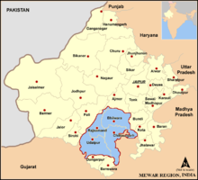
Map of the Mewar Region
Mewar or Mewāḍ is a region of south-central Rajasthan state in western India. It includes the present-day districts of Bhilwara, Chittorgarh, Rajsamand, Udaipur, Pirawa Tehsil of Jhalawar District of Rajasthan, Neemuch and Mandsaur of Madhya Pradesh and some parts of Gujarat.
For centuries, the region was ruled by Rajputs. The princely state of Udaipur emerged as an administrative unit during the period of British East India Company governance in India-ruled and remained until the end of the British Raj era.
The Mewar region lies between the Aravali Range to the northwest, Ajmer to the north, Gujarat and the Vagad region of Rajasthan to the south, the Malwa region of Madhya Pradesh state to the southeast and the Hadoti region of Rajasthan to the east.
The word "Mewar" is vernacular form of "Medapata" (IAST: Medapāṭa), the ancient name of the region. The earliest epigraph that mentions the word "Medapata" is a 996-997 CE (1053 VS) inscription discovered at Hathundi (Bijapur). The word "pata" or "pataka" refers to an administrative unit. According to the historian G. C. Raychaudhuri, Medapata was named after the Meda tribe, which has been mentioned in Varāhamihira's Brihat-Samhita. The 1460 Kumbhalgarh inscription associates the Medas with Vardhana-giri (modern Badnor in Mewar region). Historian Sashi Bhusan Chaudhuri associates the ancient Medas with the modern Mer people.
The 1285 CE (1342 VS) Mount Abu (Achaleshwar) inscription of the Guhila king Samarasimha provides the following etymology while describing the military conquests of his ancestor Bappa Rawal (Bappaka): "This country which was, in battle, totally submerged in the dripping fat (medas) of wicked people by Bappaka bears the name of Śrī Medapāṭa." Historian Anil Chandra Banerjee dismisses this as a "poetic fancy".
The northern and eastern portions of Mewar are made up of an elevated plateau while the western and southern portions were rocky and hilly with dense forests. The watershed divide between drainage of the Bay of Bengal and drainage of the Gulf of Khambhat runs almost through the centre of Mewar. The northern and eastern part of Mewar is a gently sloping plain, drained by the Bedach and Banas River and its tributaries, which empty northwest into the Chambal River, a tributary of the Yamuna River. The southern and western part of the region is hilly, and marks the divide between the Banas and its tributaries and the headwaters of the Sabarmati and Mahi rivers and their tributaries, which drain south into the Gulf of Khambhat through Gujarat state. The Aravalli Range, which forms the northwestern boundary of the region, is composed mostly of sedimentary rocks, like marble and Kota Stone, which has traditionally been an important construction material. The region is part of the Kathiawar-Gir dry deciduous forests' ecoregion. Protected areas include the Jaisamand Wildlife Sanctuary, the Kumbhalgarh Wildlife Sanctuary, the Bassi Wildlife Sanctuary and the Sita Mata Wildlife Sanctuary. Mewar has a tropical climate. Rainfall averages 660 mm/year, and is generally higher in the southwest and lower in the northeast of the region. Over 90% of the rain typically falls in the period June to September every year, during the southwest monsoon.
Bappa Rawal (715 to 728-753)
Khumman (753-773)
Mathatt (773-790)
Bhathabhatt (790-813) In his time another bharthbhutt 2nd son ruled with another brench of guhil in noth east rajaasthan
Rawal Singh (813-820)
Khumman 2 (820-853)
Mahayak (853-878) In his region mewar ruler under gurjara-prthihar in his sub-ordinate -king mihir bhoja
Teja Singh (Punjabi: ਤੇਜਾ ਸਿੰਘ) was an Indian Sikh scholar, teacher, author and translator.
Teja Singh was born as Tej Ram in a Hindu family and at the early age he converted to Sikhism. His father was Bhalkar Singh and his mother's name was Sarusti. He was an active member of the Singh Sabha movement.
Samara-simha (IAST: Samarasiṃha, r. c. 1182-1204 CE) was an Indian king belonging to the Chahamana dynasty of Javalipura (present-day Jalore in Rajasthan). He ruled the area around Jalore as a Chaulukya feudatory.
Samarasimha succeeded his father Kirtipala on the Chahamana throne of Javalipura. He had two brothers named Lakhanapala and Abhayapala, and a sister named Rudala-devi. In his inscriptions, he is styled as "Maharaja Samarasimha-deva".
Samarasimha's 1182 CE Jalor stone inscription states that he "held in scorn" the nomadic tribes of Pilavahika (identified with modern Peelwa near Parbatsar). According to historian Dasharatha Sharma, this is a reference to his successful expeditions against the bandits of Pilavahika.
The 1182 CE inscription mentions that Samarasimha's maternal uncle Jojala was a Rajya-Chintaka during his reign. This suggests that Jojala looked after the administration of the kingdom.
Ratnasimha (IAST: Ratna-Siṃha, r. c. 1302 –1303 CE) was a ruler of the Medapata (Mewar) kingdom in present-day Rajasthan, India. He belonged to the Rawal branch of the Guhila dynasty, which ruled from the Chitrakuta fort (modern Chittorgarh). The last ruler of this branch, he was defeated by Alauddin Khalji in 1303 CE.
The Rajasthani legends mention him as the Rajput ruler Ratan Singh. A fictionalized version of him appears as Ratan Sen in Malik Muhammad Jayasi's Padmavat. According to this poem, Alauddin attacked Chittorgarh to obtain his beautiful wife Rani Padmini; Alauddin captured the fort after Ratan Sen died in a battle with king Devpal of Kumbhalner; subsequently, Padmini and other women committed Jauhar to avoid falling in the enemy hands.
Ratnasimha succeeded his father Samarasimha as the Guhila ruler of Mewar around 1302 CE. He belonged to the Rawal branch of the family, which ruled from Chitrakuta fort (now known as Chittorgarh).
Ratnasimha is attested by the 1302 CE (1359 VS) Dariba temple inscription, which records a gift of 16 drammas (coins) to the temple during the reign of Ratnasimha. The inscription mentions his title as Maharajakula (which appears as Maharawal in colloquial literature). A few coins issued by Ratnasimha have also been discovered.
In 1303, Alauddin Khalji, the Muslim ruler of the Delhi Sultanate, invaded Chittor. After reaching the foot of the Chittor hill, two wings of his army attacked the fort from two different sides. After two months of unsuccessful siege, the attackers pelted stones on the fort using manjaniqs (mangonels), but still failed to capture the fort. Finally, on 26 August 1303, the invaders managed to enter the fort.
According to Amir Khusrau, who claims to have entered the fort with Alauddin, the ruler ("Rai") of Chittor surrendered to Alauddin. The Delhi Sultan massacred 30,000 other Hindus, but pardoned the ruler and his family. He assigned the fort to his young son Khizr Khan with Malik Shahin as the actual administrator, renamed it to Khizrabad, and then returned to Delhi.
Rana Hammira (1314–78), or Hammira, was a 14th-century ruler of Mewar in present-day Rajasthan, India. Following an invasion by the Delhi sultanate at the turn of the 13th century, the ruling Guhilot clan had been displaced from Mewar. Hammir Singh, who belonged to an impoverished cadet branch of that clan, regained control of the region, re-established the dynasty after defeating the Tughlaq dynasty, and became the first of his dynasty to use the royal title 'Rana'. Hammir also became the progenitor of the Sisodia clan, a branch of the Guhilot clan, to which every succeeding Maharana of Mewar has belonged.
He built the Annapoorna Mata temple located in the Chittor Fort in Chittorgarh, Rajasthan.
Rana Hammir (not to be confused with Chauhan Hammir of Ranthambore), the 14th century ruler of Mewar in present-day Rajasthan, was the first ruler using the title Rana before his name. He belonged to the Guhilot dynasty. After an invasion by the Delhi sultanate at the turn of the 13th century, the ruling Guhilot dynasty had been removed from Mewar. Rana Hammir belonged to a cadet branch of that clan; however regained control of the region, re-established the dynasty, and also became the propounder of the Sisodia dynasty clan, a branch of the Guhila dynasty, to which every succeeding Maharana of Mewar belonged.
A distant kinsman of Rawal Ratan Singh, by name 'Laksha' or Lakshman Singh, joined Rawal Ratan Singh against invasion of Delhi Sultan Alauddin Khilji. He died along with his seven sons performed saka (fighting to death), while their women committed jauhar (self-immolation in preference to becoming enemy captives). Laksha was descended in direct patrician lineage from Bappa Rawal, and hence belonged to the Gehlot(Guhilot) clan. Laksha came from the village of Sisoda near the town of Nathdwara and thus his children came to be known as 'Sisodia'. Laksha had nine(or Eight) sons, of whom the eldest, Ari, married Urmila, a pretty lady from the nearby village of Unnava, who belonged to a poor Rajput family of the Chandana clan. Rana Hammir was the only child of this couple.
Kheta, or Kshetra Singh (died 1382), was the Maharana (r. 1364–1382) of Mewar Kingdom. He was the son of Maharana Hammir Singh. In his reign, he conquered Ajmer and Mandalgarh. After his death he was succeeded by Rana Lakha Singh (1382-1421).
Rana Kshetra, who ruled Mewar from A.D. 1364 to A.D. 1382, was the son and successor of the celebrated Rana Hammir. He greatly enlarged the kingdom. He captured Ajmer and Jahazpur, re-annexed Mandalgarh, Mandsore, and the whole of Chappan to Mewar. He obtained a victory over the Sultan of Delhi, who was utterly defeated at Bakrole. Kshetra Singh also took the Sultan of Gujarat prisoner in a battle. The Kumbalgarh inscription says that "he captured Zafar Khan. Sultan of Patan (First Independent Sultan of Gujarat). Maharana kshetra singh died in 1382 AD during a campaign against the Hada of bundi.
Rana Kshetra Singh further increased his fame by defeating the Sultan of Malwa and killing his general Ami Shah.
Laksha Singh (? – 1421) was the third Maharana of the Mewar Kingdom. He was the son of Maharana Kshetra Singh and ruled from 1382 until his death in 1421, when he was killed in battle.
Lakha was married several times and had at least eight sons. His son Mokal Singh by his wife Rani Hansa Bai of Mandore(now in Jodhpur) became the fourth Maharana in 1421. During his reign, Lakha took the remaining Mewar territories from Delhi. His eldest son Chunda took oath to safe guard his motherland against all external powers who were trying to overpower the Mewar state in the exchange of his father's marriage to Rani Hansa Bai. After having some misunderstanding with Rani Hansa Bai and Rao Ranmal(brother of Rani Hansa Bai) Rana Chunda left the Chittorgarh fort and went to Begu Fort in Chittorgarh district and ruled their itself. The followers of Chunda are known as Chundawats.
Rana Lakha Singh was one of the most successful Maharanas. He extended his dominions by the subjugation of Merwara and the destruction of its chief stronghold, Beratgarh, on the ruins of which he founded Badnore. It was in this time that the tins and silver Mines of Jawar were discovered in the country conquered from the bhils by his father. With the revenues thus augmented he rebuilt the palaces and temples destroyed by Alauddin Khalji, excavated reservoirs and lakes, raised immense ramparts to dam their waters, and constructed a number of forts. He conquered the Sankhla Rajputs of Shekhawati (Nagarchal territory) and like his father, he defeated the imperial army of Delhi led by Sultan Feroz Shah Thugluq at Badnor.
Mokal or Mokal Singh (15th century), was the Maharana of Mewar Kingdom. Henry Soszynski dates his reign to r. 1421–1433, and his lifespan to c. 1409 – c. 1433. S. Devadas Pillai dates his reign to 1397–1433.
He was a son of Mahanara Lakha Singh. Maharana Mokal was a great builder and he inherited this trait from his father, Maharana Lakha. He created various buildings along with completing those commenced by his father. The duty to transform their motherland thus flowed down the veins of the Sisodiyas.
Maharana Lakha, the 45th Maharana of Mewar died in war leaving young Mokal as his successor. Being a minor, his eldest brother Choonda began to look after the state of affairs as promised to Rana Lakha. But Mokal’s mother Hansa Bai did not like the influence that Choonda had over the nobles of Mewar. She questioned his integrity and doubted his intentions. Her resentment made Choonda leave Chittor and retire to Mandu, capital of Malwa. Rani Hansa Bai attained help from her brother Ranmal of Marwar to administer the state of affairs on behalf of Mokal until he was a minor.
Maharana Mokal had a brief stint as the ruler of Mewar but rose to fame as the most celebrated warrior of his race. He defeated Nagour, Gujarat and repelled an invasion by the Delhi Sulatanate (Sayyid dynasty). But most importantly, he completed palaces that were commenced by his father Maharan Lakha and conspired to build more aesthetic structures. But his sad demise at a young age of 24 put a stop to this emerging illustration of Mewar. His assassination by his paternal uncles, Chacha and Mera brought an end to a great Maharana in the making at age 24. He died in 1433.
Rana Kumbha who was only 13 years old at the time of Mokal’s death, ascended the throne at a crucial juncture in the history of Mewar. The young Kumbha may have had the most unfavourable situation after his father’s untimed death but the valour and vision of his father, Maharana Mokal inspired him to emerge as one of the greatest rulers Mewar ever knew.
Kumbhakarna (r. 1433-1468 CE), popularly known as Rana Kumbha in vernacular legends, was the ruler of Mewar kingdom of western India. He belonged to the Sisodia clan of Rajputs. Kumbha was a son of Rana Mokal Singh of Mewar by his wife Sobhagya Devi, a daughter of Jaitmal Sankhla, the Paramara fief-holder of Runkot in the state of Marwar.
After being overrun by the armies of Alauddin Khalji at the turn of the 13th century, Mewar had become relatively insignificant. Rana Hammira is credited with casting off the Muslim yoke and establishing the second Guhila dynasty of Chittor in 1335. The title Rana, and later Maharana, was used by rulers of this dynasty.
Rana Hammira's grandson, Maharana Mokal was assassinated by two brothers (Chacha and Mera) in 1433. Lack of support, however, caused Chacha and Mera to flee and Rana Kumbha ascended the throne of Mewar. Initially, Rana Kumbha was ably assisted by Ranmal (Ranamalla) Rathore of Mandore. In November 1442, Mahmud Khalji, Sultan of Malwa, commenced a series of attacks on Mewar. After capturing Machhindargarh, Pangarh and Chaumuha, the Sultan camped for the rainy season.
On April 26, 1443, Rana Kumbha attacked the Sultan's encampment, following an indecisive battle the Sultan returned to Mandu. The Sultan attacked again in November 1443, capturing Gagraun and adjoining forts but the capture of Chittor eluded him. The sultan then fought and lost in the Battle of Mandalgarh and Banas. Bloodied by these engagements, the Sultan did not attack Mewar for another ten years. In order to commemorate his resounding victory over the combined armies of Malwa and Gujarat in 1440 AD, Rana Kumbha got the famed 37 meter, 9 storey high Vijay Stambha erected at Chittorgarh which was completed in 1448 CE.
Udai Singh I (? –1473) a.k.a. Udaikaran or Udah, was the Maharana (r. 1468–1473) of Mewar Kingdom. He was a son of Maharana Kumbha.When Rana Kumbha was offering prayers to Eklengji (Lord Siva), Udai Singh I assassinated him and proclaimed himself the ruler. He was a cruel ruler so in 1473 he was assassinated by his brother Raimal who became the Rana after him.
The Rajputana land is infused with the courage and bravery of its warrior sons; their blood smeared desert soil is a symbol of Rajputana glory. Mewar produced abundant proud legends; sagas of valour, chivalry and freedom. But every coin has another side and every era dooms in its own darkness. The land of Mewar too had a black sheep of its own.
Born to one of the most celebrated heroes of Mewar, Rana Kumbha, the undefeated Maharana; Prince Uda, Udaikaran or Udai Singh is one of the most despised sons of Mewar. Being the heir to Rana Kumbha, his ascension to throne was imminent. But the power driven young Udai Singh failed to wait to pave his way towards the throne. In an act of patricide, he killed his own father Rana Kumbha; while he was offering prayers to his deity, Lord Eklingji.
With the sad demise of its hero, Mewar was thwarted. Udai Singh proclaimed himself as the new king and came to power. He ruled Mewar for a small span of five years; till he was defeated by his own brother Raimal and had to flee from Mewar. He was a feeble ruler and because of his incompetency, Mewar lost the territories of Abu and Ajmer. He fled to Delhi and offered his daughter to the Sultan of Delhi in marital alliance in return for his support. But fate had its own plans and Udai Singh was struck by lightning before the marriage, and died on the spot. The legacy of the Suryavanshi kings of Mewar was tarnished by their own son and such was the hatred that many omitted him from the genealogies of Mewar. He was nicknamed ‘murderer’ and the condemned Rana Udai Singh was diluted in the history.
Rana Raimal (r. 1473–1509) was a Rajput ruler of Mewar. Maharana Raimal was the son of Rana Kumbha. He came to power by defeating his patricide predecessor, Udai Singh I in battles at Jawar, Darimpur and Pangarh. Early in Raimal's reign, Ghiyas Shah of Malwa attacked Chittor unsuccessfully. Soon after, Ghiyas Shah's general, Zafar Khan attacked Mewar and was defeated at Mandalgarh and Khairabad. By marrying Sringardevi (daughter of Rao Jodha), Raimal ended the conflict with the Rathores. During Raimals' reign, Raisingh Toda and Ajmer were recaptured. Raimal also strengthened the state of Mewar and repaired the temple of Eklingji in Chittor. The last years of Raimal's rule were marked by conflict between his sons with Prince Sanga (later Rana Sanga) having to flee Chittor. The sons, Prithviraj and Jaimal were both killed. At this difficult juncture, the Rana was informed that Sanga was still alive and in hiding. Raimal summoned Sanga back to Chittor and died soon afterwards.
Raimal was not the heir-apparent, he was younger to Udai Singh I. But as fate would have it, Udai Singh I killed his father, the legendary Rana Kumbha, while he was praying to Lord Eklingji (Shiva) and ruled for five years. He was a weak ruler and under his reign Mewar lost Abu and Ajmer, both states were made independent by the weak ruler of Mewar. After being defeated by his brother Raimal, he fled to Delhi in order to please the Delhi Sultan and offered his own daughter in marital alliance however, before the marriage took place, the King was struck by lightning and died on the spot. His sons Surajmal and Sahasmal were with him.
Sultan of Delhi, Sikhander Lodi fought against Rana Raimal of Mewar, allying with Surajmal & Sahasmal in which Sultan was defeated. Surajmall survived and was pardoned by Rana Raimal. He was a conspirator and ensured that sons of Raimal fought with each other in order to make his way clear to the throne. He was a brave fighter and possessed all the great qualities of his clan.
Maharana Sangram Singh (12 April 1482 – 30 January 1528) commonly known as Rana Sanga, was Rana of Mewar and head of a powerful Hindu Rajput confederacy in Rajputana during the 16th century. He belonged to Sisodiya clan of Rajput. Rana ruled between 1508 and 1528.
Rana Sanga succeeded his father, Rana Raimal, as king of Mewar in 1508. He fought against the Afghan Lodhi dynasty of Delhi Sultanate, and later against the Mughals.
Rana Sanga was a grandson of Rana Kumbha. Sanga became the ruler of Mewar after a battle for succession with his brothers.
As ruler of Mewar he expanded the boundaries of his Kingdom. First taking the advantage of internal strife in the Delhi Sultanate, he expanded into North East Rajasthan after defeating Ibrahim Lodi in the Battles of Khatoli and Dholpur. Mewar attempted to vassalise Idar by reinstating Raimal onto the throne by defeating Bharmal who was supported by Gujarat. This led to a Mewar-Gujarat war and the Battles of Idar. He supposedly defeated the Gujarat Sultanate during Rana Sanga's invasion of Gujarat. Sangram Singh also defeated the joint forces of Gujarat and Malwa Sultanates in the Siege of Mandsaur and the Battle of Gagron.
Rana Ratan Singh II (? – 1531) was the Maharana (r. 1528 – 1531) of Mewar Kingdom. He was a son of Rana Sanga. He was killed during a war in 1531 and had no issue. He was succeeded by his surviving brother Vikramaditya Singh. His wives were Rani Guman Kanwar and Maharani Suja Bai of Bundi.
Vikramaditya Singh (1517 – 1537) was the Maharana of Mewar Kingdom (r. 1531 – 1537). He was a Sisodiya Rajput and son of Rana Sanga and the elder brother of Udai Singh II. His mother was Rani Karnavati who send a rakhi to Mughal Emperor Humayun to help her out, after the death of Rana Sanga when Bahadur Shah of Gujarat attacked Chittor. Humayun could not reach Chittor in time, thus Karnavati committed Jauhar inside Chittor Fort.
Vikramaditya's temperament had not improved even after the defeat in 1535 and, one day in 1536, he physically abused a respected old chieftain at the Court. This led the Mewar nobles to place Vikramaditya under palace arrest, leaving the object of Panna Dhai's love and loyalty, Udai Singh as heir-elect to the throne. The Court appointed a distant cousin, Banvir to act as his Regent. He was, allegedly, the illegitimate son of Udai's uncle, Prithviraj (Crown Prince Prithviraj had a fight with his younger brother, Sangram Singh, and was sent into exile where he died, never to succeed to his birthright as Maharana of Mewar). Banvir, who considered himself to be the rightful heir to the throne knew the time was right to act. One evening that 1537(some books writes in 1536 also), he assassinated the imprisoned Vikramaditya, then hurried towards the rawala to get rid of the only remaining barrier to his ambition, the 14-year-old Maharana-elect, Udai Singh.
Vanvir Singh was the ruler of Mewar Kingdom between 1536 and 1540. He was allegedly the son of Prithviraj (elder brother of Rana Sanga) and a maid.
br
He was appointed as the official ruler of the state when Vikramaditya Singh was imprisoned. Vanveer decided to kill the imprisoned Vikramaditya, and he also killed various ministers (Samantas) who were in his way. He attempted to kill the 14-year-old heir Udai Singh, but Udai Singh's nursemaid Panna Dai replaced the prince with her son Chandar who was killed instead. Vanveer declared himself to be the ruler of Mewar and Chittor.
In 1540, when Udai Singh was 18 years old, he attacked Chittorgarh with the help of several Samantas together with Akhey Raj Songara, the ruler of Jalore and Udai Singh's father-in-law. The armies of Vanvir Singh and Udai Singh met at the battle field of Malvi (south of Chittorgarh) Udai Singh won and ascended the throne as Udai Singh II, and Vanvir Singh was sent into exile, and was killed later in 1540 while struggling with tribal groups who killed him.
Udai Singh II (4 August 1522 – 28 February 1572) was the Maharana of Mewar and the founder of the city of Udaipur in the present day Rajasthan state of India. He was the 53rd ruler of the Mewar dynasty. He was the fourth son of Maharana Sangram Singh (Rana Sanga) and Rani Karnavati, a princess of Bundi.
Udai Singh was born in Chittor in August 1522. After the death of his father, Rana Sanga, Ratan Singh II was coronated as the new king. Ratan Singh II was assassinated in 1531. He was succeeded by his brother Maharana Vikramaditya Singh. During the reign of Vikramaditya, when the Muslim Rajput Sultan of Gujarat Bahadur Shah sacked Chittor in 1534, Udai Singh was sent to Bundi for safety. In 1537, Banbir killed Vikramaditya and usurped the throne. He tried to kill Udai Singh also, but Udai's nurse Panna Dai sacrificed her own son Chandan to save him from his uncle Banbir and took him to Kumbhalgarh. She did not ask for anything in return either. She started living in Bundi and did not allow Udai Singh to come and meet her. He lived in secret in Kumbhalgarh for two years, disguised as a nephew of the governor Asha Shah Depura (Maheshwari).
In 1540, he was crowned in Kumbhalgarh by the nobles of Mewar. His eldest son Maharana Pratap from his first wife, Maharani Jaivantabai Songara (daughter of Akhey Raj Songara of Jalore), was born in the same year. He had 24 sons. His second wife, Sajjabai Solankini gave birth to his son Shakti Singh, Sagar Singh and Vikram Dev. Dheerbai Bhattiyani was his favourite wife and was the mother of his son Jagmal Singh . His fourth wife was Rani Veerbai Jhaala.
Pratap Singh I (9 May 1540 – 19 January 1597) popularly known as Maharana Pratap, was a Rajput king of Mewar, a region in north-western India in the present day state of Rajasthan.
Maharana Pratap was born to Udai Singh II and Jaiwanta Bai.
After the death of Udai Singh in 1572, Rani Dheer Bai wanted her son Jagmal to succeed him but senior courtiers preferred Pratap, as the eldest son, to be their king. The desire of the nobles prevailed.
Maharana Amar Singh I, the Maharana of Mewar (16 March 1559 – 26 January 1620), was the eldest son and successor of Maharana Pratap of Mewar. He was the 13th Rana of Mewar dynasty of Sisodia Rajputs and ruler of Mewar from 19 January 1597 till his death on 26 January 1620. His capital was Udaipur.
Amar Singh was the eldest son of Maharana Pratap. He was born in Chittor on 16 March 1559, the same year, when foundation of Udaipur was laid by his grandfather, Udai Singh II.
Amar Singh succeeded Maharana Pratap upon his death on 19 January 1597 and was the ruler of Mewar till his death on 26 January 1620.
Karan Singh II (7 January 1584 – March 1628) was the Maharana of Mewar Kingdom (r. 1620 – 1628). He was one of the sons of Maharana Amar Singh I and the grandson of Maharana Pratap. He, in turn, was succeeded by his son Jagat Singh I. He succeeded his father on 26 Jan 1620 at the age of 36.
He engaged with Mughals on many occasions during the life of his father before settlement with Mughals. Later he visited Mughal court many times and learned various aspects of administration. He made several reforms after coming to the throne. Also, palaces were enlarged and defenses strengthened. He presided in relatively peaceful times and Mewar prospered under his rule. He also renovated Ranakpur temple in 1621.
An important event in the Maharana's reign was to extend refuge to Prince Khurram (Shah Jahan) in 1623. In 1622 Prince Khurram raised an army with the support of Mahabat Khan and marched against his father and Nur Jahan. He was defeated at Bilochpur in March 1623. Later he took refuge in Udaipur Mewar with Maharaja Karan Singh II. He was first lodged in Delwada Ki Haveli and subsequently shifted to Jagmandir Palace on his request. Prince Khurram exchanged his turban with the Maharana and that turban is still preserved in Pratap Museum, Udaipur. (R V Somani 1976).
Jagat Singh I (1607 – 10 April 1652), was the Maharana of Mewar Kingdom in Rajputana, India (r. 1628–1652). He was a son of Maharana Karan Singh II. Jagat Singh build a Tatbandi means safe wall around the Chittor Fort. When Shahjahan heard of it, he sent his noble wajir Sadullah Khan to occupy Mewar because Shahjahan thought that Jagat Singh broke the treaty that his father made with Amar Singh. The treaty had a clause that any Rana of Mewar cannot build any defence or safe wall around the fort. Sadullah Khan occupied Mewar. Rana Jagat Singh Made a new treaty with Shahjahan and broke that defence wall that he built around the fort.
Raj Singh I (24 September 1629 – 22 October 1680), was the Maharana of Mewar Kingdom (r. 1652–1680). Rana Raj singh was the maternal uncle of Ajit Singh of Marwar. Raj Singh opposed Aurangzeb multiple times, once to save a princess from the Mughals and once by denouncing the Jizya tax levied by Aurangzeb. Rana Raj Singh is also known for giving protection to the Shrinathji idol of Mathura, he placed it in Nathdwara. No other Hindu ruler was ready to take the image in his kingdom as it would mean to oppose the Mughal emperor Aurangzeb, who was destroying temples all around India.
The Rana gave aid to Durgadas Rathore during the Rathore rebellion and fought many battles with Aurangzeb, he was eventually poisoned by his own chiefs who were bribed by the Mughal Emperor.[2] He was a son of Maharana Jagat Singh I. Maharana Raj singhji was great warrior as like as Maharana Pratap Singh. Maharana RajSinghji was defeated to aurangzeb many times in battlefield. After defeated by Maharana sir aurangzeb or any other mughal never attack on Mewar.
Jai Singh (5 December 1653 – 23 September 1698), was the Maharana of Mewar Kingdom, ruling from 1680 to 1698. He was a son of Mahanara Raj Singh I. Jai Singh fought a series of battles against Mughal Emperor Aurangzeb. In 1680–81, he sent his noble Dayaldas in Malwa. Dayaldas occupied Dhar and Mandu. He looted those cities and fought a series of battles against Mughal army. Finally, Aurangzeb and the Rana signed a peace treaty, and Aurangzeb turned his attention to the Rathores of Marwar and the Marathas in the Deccan. He married Dayawati Bai (1650–1683), a Kachhawa princess of Amber, who died in childbirth.
Bhim Singh (10 March 1768 – 30 March 1828), was the 25th Maharana (r. 1778–1828) of the Mewar region and the 1st Maharana of the Princely state of Udaipur. He was a son of Maharana Ari Singh II and younger brother of Maharana Hamir Singh II.
At ten years of age, Bhim Singh succeeded his brother, Hamir Singh II, who had died at 16 years of age from a wound when a rifle burst in his hand. Hamir Singh II had ruled an unstable state with an empty treasury under a regency by Maharaj Baghsingh and Arjunsingh. Bhim Singh inherited this unstable state, after its unpaid Maratha soldiers had looted Chittor. The soldiers' depradations continued and more territory was lost during Bhim Singh's rule. Bhim Singh had a daughter Krishna Kumari, who died by drinking poison, at the age of 16, to save his dynasty in 1810.
Bhim Singh was a weak ruler in a succession of ineffectual leaders. Mewar had once been considered the strongest Rajput state because of its lengthy resistance to the foreign emperors, but by 13 January 1818, Bhim Singh had to sign a treaty with the British, accepting their protection.
Maharana Shambhu Singh GCSI (22 December 1847 – 7 October 1874), was the Maharana (r. 1861–1874) of Princely state of Udaipur. He was a son Shardul Singh and adopted son of Maharana Swarup Singh. The rich and diverse land of India had faced numerous invasions and marauding before the British set their foot as merchants and slowly took over the dominance of the Indian main land. With the great Indian rebellion of 1857, the governance of India was transferred to the Queen and a new era had begun with Maharana Shambhu Singh ascending the throne of Mewar.
Maharana Shambhu Singh, son of Shardul Singh from the Bagore branch of Mewar, the descendants of Maharana Sangram Singh II; was adopted by Maharana Swarup Singh as his nominated heir. Maharana Shambhu Singh ascended the throne as a minor and a British Political agent was appointed to guide the young Maharana. Unlike his predecessors, the financial conditions at the time were relatively stable and progressive and Shambhu Singh continued to replenish the state treasury, after he was provided full powers as the king of Mewar.
After attaining complete control, he set up various new rules and offices for improving administrative resources, organised administration and income of temples and sacred places and introduced new legal code for Mewar. Under him the military was reorganised, various jail reforms were introduced and new construction of roads and railway tracks started. In spite of being formally uneducated, he gave education supreme importance and expanded various existing schools and introduced numerous new ones. Most importantly, he was the first to set up a school for girls and thus promoted opportunities of education for everyone. He enforced special measures to curb the Sati pratha and imposed heavy monetary fines on offenders.
Colonel Maharaja Sir Sajjan Singh GCSI (18 July 1859 – 23 December 1884), was the Maharana of princely state of Udaipur (r. 1874 – 1884). He was a son of Shakti Singh of Bagore and was adopted by his first cousin Maharana Shambhu Singh, whom he succeeded in 1874. He died without an heir.
Maharana Sir Fateh Singh GCSI GCIE GCVO (16 December 1849 – 24 May 1930), ruled Mewar for 46 years from 1884 to 1930, with Udaipur as capital, and resided in the City Palace, Udaipur.
He was born on 16 December 1849 at Shivrati, son of Maharaj Dal Singh of the Shivrati branch of Mewar dynasty – A descendant of the fourth son, Arjun Singh, of the Rana Sangram Singh II (AD 1710–1734). First he was adopted by his elder brother, Gaj Singh who had no heir, subsequently Maharana Sajjan Singh of Udaipur, who too had no heir, adopted him, he eventually became the Maharaja of Udaipur in 1884. In 1887, he received G.C.S.I.
In 1889, he built the "Connaught Dam" on Lake Dewali to mark the visit of Duke of Connaught, son of Queen Victoria, this enlarged the lake, and it was later renamed, Fateh Sagar Lake.
He also built Fateh Prakash Palace in Chittorgarh fort, which is an edifice with a tower on each of its four corners crowned by domed chhattris. This palace is a grand specimen of modern Indian architecture and at present houses a museum.
Sir Shri Maharana Bhupal Singh Bahadur KCIE (1884 – 4 July 1955), also spelt Bhopal Singh, was the ruler of the Indian princely state of Udaipur (or Mewar) from 1930 and also Rajpramukh of Rajasthan from 1948 until his death on 4 July 1955.
Singh was born in 1884, a year before the accession of his father Fateh Singh to the throne of Mewar and Udaipur as Maharana. On 28 July 1921, following some social unrest in Mewar, his father was formally deposed, while being allowed to retain his titular title, and effective power in the state fell into the hands of Bhupal as his son and heir. He became ruler of the state in name as well as in fact in 1930. After the independence and partition of British India in 1947, Singh was one of the first of the Indian princes to sign an Instrument of Accession to the new Dominion of India, and on 18 April 1948 he became Rajpramukh of Rajasthan, succeeding Sir Bhim Singh, Maharaja of Kotah. With effect from 1 April 1949 his title was raised to Maha Rajpramukh. Also he was held titles of Honorary Major-General, Indian Army 15 October 1946 (earlier Honorary Lt.-Col. 4 August 1939), Honorary Colonel, Indian Grenadiers, 1 June 1954.
In the 26th amendment to the Constitution of India promulgated in 1971, the Government of India abolished all official symbols of princely India, including titles, privileges, and remuneration (privy purses). Bhagwat Singh succeeded him as the titular ruler of the state.
One of Bhopal Singh's palaces was Jag Niwas, on an island in Lake Pichola, since used for the filming of several films, including the James Bond film Octopussy (1983).
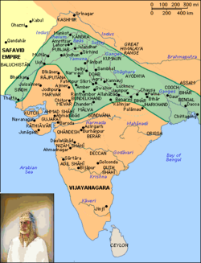
Territory of Sur Empire in green
The Sur Empire was an empire established by a Muslim dynasty of Pashtun origin who ruled a large territory in northern part of the Indian subcontinent for nearly 16 years, between 1540 and 1556, with Delhi serving as its capital.
The empire was founded by Sher Shah Suri, a ethnic Afghan of the tribal house of Sur, who supplanted the Mughal dynasty as rulers of North India during the reign of the relatively ineffectual second Mughal Humayun. Sher Shah defeated badshah-i-Hind ('Hindustani emperor') Humayun in the Battle of Chausa (26 June 1539) and again in the Battle of Bilgram (17 May 1540).
The Sur dynasty held control of nearly all the Mughal territories, from modern-day eastern Afghanistan in the west to Bengal in modern-day Bangladesh in the east.
Shēr Shāh Sūrī (1486–22 May 1545), born Farīd Khān, was the founder of the Sur Empire in the northern part of the Indian subcontinent, with its capital at Delhi. An ethnic Pashtun, Sher Shah took control of the Mughal Empire in 1538. After his accidental death in 1545, his son Islam Shah became his successor. He first served as a private before rising to become a commander in the Mughal army under Babur and then the governor of Bihar. In 1537, when Babur's son Humayun was elsewhere on an expedition, Sher Shah overran the state of Bengal and established the Sur dynasty. A brilliant strategist, Sher Shah proved himself as a gifted administrator as well as a capable general. His reorganization of the empire laid the foundations for the later Mughal emperors, notably Akbar, son of Humayun.
During his seven-year rule from 1538 to 1545, he set up a new civic and military administration, issued the first Rupiya from "Taka" and re-organised the postal system of India. He further developed Humayun's Dina-panah city and named it Shergarh and revived the historical city of Pataliputra, which had been in decline since the 7th century CE, as Patna. He extended the Grand Trunk Road from Chittagong in the frontiers of the province of Bengal in northeast India to Kabul in Afghanistan in the far northwest of the country.
Islam Shah Suri (reigned: 1545–1554) was the second ruler of the Sur dynasty which ruled part of India in the mid-16th century. His original name was Jalal Khan and he was the second son of Sher Shah Suri.
On his father's death, an emergency meeting of nobles chose Jalal Khan to be successor instead of his elder brother Adil Khan, since he had shown greater military ability. Jalal Khan was crowned on 26 May 1545 and took the title "Islam Shah". He was still worried that his brother would threaten his power and tried to have him captured. But Adil Khan evaded his grasp and raised an army. It marched on Islam Shah while he was at Agra. In the battle Islam Shah came out victorious and Adil Khan fled, never to be seen again.
The support some of the nobles had given his brother made Islam Shah suspicious and he ruthlessly purged their ranks, strictly subordinating the nobility to the crown. He continued his father's policies of efficient administration and increased centralisation. He had little opportunity for military campaigning; the fugitive Mughal emperor Humayun, whom his father had overthrown, made one abortive attempt to attack him.
Firuz Shah Suri (died 1554) was the third ruler of Sur dynasty. He was the son of Islam Shah Suri and succeeded him in 1554 when he was twelve years old. Firuz Shah Suri was assassinated within days of his coronation by Sher Shah Suri's nephew Muhammad Mubariz Khan who later ruled as Muhammad Shah Adil.
Muhammad Adil Shah (reigned: 1554–1555) was the fourth ruler of the Sur dynasty, a late medieval Afghan dynasty of northern India.
He was the son of Nizam Khan, the younger brother of the Sultan Sher Shah Suri. Adil's sister, Bibi Bai, was married to Islam Shah Suri. His real name was Muhammad Mubariz Khan. He was responsible for the assassination of Firuz Shah Suri, the twelve-year-old son of Islam Shah Suri, in 1554. Then he ascended the throne as the last sultan of the united empire. He appointed Hemu as his Wazir.
In 1555, Adil's brother in law, Ibrahim Shah Suri of Agra, revolted. Adil Shah's army was defeated and he lost the throne of Delhi. Soon, the empire founded by Sher Shah was divided into four parts. As Delhi and Agra came under the rule of Ibrahim Shah Suri, only the territories from the vicinity of Agra to Bihar remained under Adil. Shamsuddin Muhammad Shah already declared independence of Bengal in 1554. But hostility did not end with the division of empire.
Ibrahim Shah Suri was the fifth ruler of Sur dynasty, a Pashtun (Afghan) dynasty of late medieval northern India.
Ibrahim Khan Suri was son of Ghazi Khan. He was the brother-in-law of sultan Muhammad Adil Shah. He was the governor of Agra in 1555, when he revolted against the sultan. Adil Shah despatched his army to crush the revolt, but he defeated Adil's army and marched towards Delhi. After capturing Delhi, he assumed the regal title and became Ibrahim Shah Suri. But in the same year, Sikandar Shah Suri defeated him at Farah, 32 km from Agra in spite of the numerical superiority of Ibrahim's army. Sikandar took possession of both Delhi and Agra.
After losing Delhi and Agra, Ibrahim began his strife with Adil Shah. But he was defeated by Adil's army led by his wazir Hemu twice, first near Kalpi and next near Khanua. He took refuge in the fort of Bayana, but it was besieged by Hemu's army. He got some respite when Hemu was recalled by Adil. Later, Ibrahim took refuge in Orissa, where he died in 1567-68.
Sikandar Shah Suri (died 1559) was the sixth ruler of Sur dynasty, a late medieval Pashtun dynasty of northern India. He became the sultan of Delhi after overthrowing Ibrahim Shah Suri.
Sikandar Shah Suri's actual name was Ahmad Khan Suri. He was the brother-in-law of sultan Muhammad Adil Shah. He was the governor of Lahore before declaring independence from Delhi in 1555.
After becoming the independent sultan and bringing Punjab under control, he marched towards the territory controlled by sultan Ibrahim Shah Suri. Ibrahim was defeated in a battle at Farah, India near Agra and Sikandar took possession of both Delhi and Agra. While Sikandar was busy with his struggle against Ibrahim, Humayun captured Lahore in February 1555. Another detachment of his forces captured Dipalpur. Next, the Mughal army occupied Jalandhar and their advanced division proceeded towards Sirhind. Sikandar sent a force of 30,000 horses but they were defeated by the Mughal army in a battle at Machhiwara and Sirhind was occupied by the Mughals. Sikandar, then led an army of 80,000 horses himself and met the Army at Sirhind. On June 22, 1555 he was defeated by the Mughal army and was compelled to retreat to the Sivalik Hills in northern Punjab. The victorious Mughals marched to Delhi and occupied it.
Adil or Adel Shah Afshar, born ʿAlī-qolī Khan (Modern Persian: عادل شاه افشار) (died 1749) was the Afsharid Shah of Iran from 1747 to 1748, a nephew and successor of Nader Shah, the founder of the Afsharid dynasty.
Ali-qoli khan was the eldest son of Nader's brother, Ebrahim Khan. Nader appointed him governor of Mashad in 1737. In the same year he married Princess Ketevan, daughter of the Georgian king Teimuraz II, Nader's ally. In 1740 he was also married to a daughter of Abu'l-Fayz, ruler of the recently subdued Bokhara.
From 1743 to 1747, Ali-qoli khan commanded Nader's troops against the Yazidis of Kurdistan, the Karakalpaks and Uzbeks of Khwarazm and in Sistan. He then ran in trouble with his uncle over the latter's decision to levy 100,000 tomans on him combined with Nader's suspiciousness. In April 1747, in conjunction with the rebels of Sistan, Ali-qoli khan occupied Herat and induced the Kurds to enter into a rebellion. Nader, while marching against the insurgents, was murdered by a group of his officers, who then offered the crown to Ali-qoli.
The Chogyal ("Dharma Kings", Tibetan: ཆོས་རྒྱལ, Wylie: chos rgyal, Sanskrit: धर्मराज) were the monarchs of the former kingdoms of Sikkim and Ladakh in present-day India, which were ruled by separate branches of the Namgyal dynasty. The Chogyal was the absolute monarch of Sikkim from 1642 to 1975, when the monarchy was abolished and its people voted in a referendum to make Sikkim India's 22nd state.
In Bhutan, Chogyal "Dharma King" or "Religious King" is a title which was also conferred upon a special class of temporal and spiritual rulers. In Bhutan, the Chogyal were given the respectful title Zhabdrung. In this context, the Chogyal was a recognised reincarnation (or succession of reincarnations) of Shabdrung Ngawang Namgyal, the 17th century Tibetan-born founder of Bhutan. A position of supreme importance, the Bhutanese Chogyal was above both the highest monastic authority, the Je Khenpo, and the highest temporal ruler, the Deb Raja or Druk Desi. There were two main lines of Zhabdrung incarnations in Bhutan.
From 1642 to 1975, Sikkim was ruled by the Namgyal Monarchy (also called the Chogyal Monarchy), founded by the fifth-generation descendants of Guru Tashi, a prince of the Minyak House who came to Sikkim from the Kham district of Tibet. Chogyal means 'righteous ruler', and was the title conferred upon Sikkim's Buddhist kings during the reign of the Namgyal Monarchy.
Phuntsog Namgyal (Sikkimese: ཕུན་ཚོག་རྣམ་རྒྱལ་; Wylie: phun tshog rnam rgyal) (1604–1670) was the first chogyal (monarch) of Sikkim, now an Indian state. He consecrated in 1642 at the age of 38. Phuntsog was a fifth generation descendant of Guru Tashi, a 13th-century prince from the Mi-nyak House in Kham in Eastern Tibet. According to legend, Guru Rinpoche, a 9th-century Buddhist saint had foretold the event that a Phuntsog from the east would be the next chogyal of Sikkim. In 1642, three lamas, from the north, west, and south went in search for the chosen person. Near present-day Gangtok, they found a man churning milk. He offered them some refreshments and gave them shelter. So impressed were they by his deeds that they realised that he was a chosen one and immediately crowned him king. The crowning took place Norbughang near Yuksom on a stone slab in a pine covered hill, and he was anointed by sprinkling water from a sacred urn.
Phuntsog, along with the lamas, then converted the local Lepcha people to Buddhism and set about expanding his kingdom up to the Chumbi Valley in Tibet, parts of modern-day Darjeeling in the south, and parts of eastern Nepal.
Phuntsog moved his capital to Yuksam and instituted the first centralised administration. The kingdom was divided into twelve Dzongs, or districts under a Lepcha Dzongpon (governor) who headed a council of twelve ministers. During his reign Buddhism was consolidated as the established religion in Sikkim. He was succeeded by his son, Tensung Namgyal in 1670.
Tensung Namgyal (Sikkimese: བསྟན་སྲུང༌རྣམ་རྒྱལ་; Wylie: bstan srung rnam rgyal) (1644–1700) was the second chogyal (monarch) of Sikkim. He succeeded his father Phuntsog Namgyal in 1670 and moved the capital from Yuksom to Rabdentse near Geyzing. He had three wives from Bhutan, Tibet and a Limbu princess, Thungwamukma. After establishing Rabdentse as his new capital he built a palace and asked his Limbu Queen to name it. She named it "Song Khim" which in Limbu language means "New Palace". This later went on to become "Sukhim" and "Sikkim". He was succeeded by his son Chakdor Namgyal, borne by his second wife in 1700. He had one last son with his third wife. Though he is not well known his grandson becomes a king of a small kingdom inside his fathers rule.
Gyurmed Namgyal (Sikkimese: འགྱུར་མེད་རྣམ་རྒྱལ་; Wylie: 'gyur med rnam rgyal) was the fourth Chogyal (king) of Sikkim. He succeeded Chakdor Namgyal in 1717 and was succeeded himself by Phuntsog Namgyal II in 1733.
Tenzing Namgyal (Sikkimese: བསྟན་འཛིན་རྣམ་རྒྱལ་; Wylie: bstan 'dzin rnam rgyal) was the sixth Chogyal (king) of Sikkim. He succeeded Phuntsog Namgyal II in 1780 and was succeeded himself by Tsugphud Namgyal in 1793.
During his reign Chogyal fled to Tibet, and later died there in exile.
Tsugphud Namgyal (Sikkimese: གཅུག་ཕུད་རྣམ་རྒྱལ་; Wylie: gtsug phud rnam rgyal) (1785–1863) was king of Sikkim from 1793 to 1863. He gained independence from Nepal in 1815 and ruled under a British protectorate from 1861.
Under his father Tenzing Namgyal, most of Sikkim was appropriated by Nepal. Tshudpud Namgyal returned to Sikkim in 1793 to reclaim the throne. Because the capital of Rabdentse was too close to the Nepalese border, he shifted the capital to Tumlong. His mother was Anyo Gyalyum, daughter of Chandzod Karwang.
Sikkim allied itself with the British in India, who also considered Nepal an enemy. Nepal overran most of the region, sparking the Gurkha War in 1814 with the British East India Company. The Sugauli Treaty and Treaty of Titalia returned the annexed territory to Sikkim in 1817.
In 1835, Tsugphud Namgyal ceded Darjeeling to the East India Company for an annual fee, but this relationship was broken off after he seized botanist Joseph Hooker and Darjeeling Superintendent Archibald Campbell during their expedition to Sikkim. This led to two British military attacks in 1850 and 1861, resulting in the annexation of Sikkim by 1861. Under the Treaty of Tumlong signed by his successor Sidkeong Namgyal in the same year, Tshudpud was granted the title of Maharaja of Sikkim by the British, and he abdicated the following year. At his death in 1863, aged 78, he had ruled Sikkim for 69 years, making him the longest-reigning Chogyal in history as well as the oldest ever Chogyal of Sikkim.
Sidkeong Namgyal (Sikkimese: སྲིད་སཀྱོང་རྣམ་རྒྱལ་; Wylie: srid skyong rnam rgyal) (1819–1874) was king of Sikkim from 1863 to 1874. He was son of Tsugphud Namgyal and was succeeded by his half-brother Thutob Namgyal.
Her mother was the second wife of his father, a Tibetan lady, sister of the Tashi Lama.
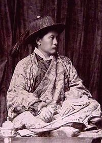
Thutob Namgyal (Sikkimese: མཐུ་སྟོབས་རྣམ་རྒྱལ་; Wylie: mthu-stobs rnam-rgyal) (1860 – 11 February 1914) was the ruling chogyal (monarch) of Sikkim between 1874 and 1914. Thutob ascended to the throne succeeding his half-brother Sidkeong Namgyal who died issueless. Differences between the Nepalese settlers and the indigenous population during his reign led to the direct intervention of the British, who were the de facto rulers of the Himalayan nation. The British ruled in favour of the Nepalese much to the discontent of the chogyal, who then retreated to the Chumbi Valley and allied himself with the Tibetans.
The British sent a military force (Sikkim Expedition), and after a series of skirmishes between the Tibetans and the British near Jelep La, the Tibetans were pushed back and the Chogyal was put under the supervision of John Claude White, who had been appointed Political Officer in 1889. In 1894, he shifted the capital from Tumlong to the present location, Gangtok. He was knighted in 1911. Alex McKay states, "The 9th Chogyal of Sikkim, Sir Thutob Namgyal, was increasingly supportive of modernisation. After his death in 1914, Sidkeon Namgyal Tulku, who had been groomed for the post by the British, succeeded him but died after ruling for just 10 months. Sidkeong Tulku’s younger half-brother, Tashi Namgyal, who had been educated at St Paul’s and Mayo College, then became Chogyal in 1915, and ruled Sikkim until his death in 1963."
The Sir Thutob Namgyal Memorial (STNM) Hospital in Gangtok was built in memory of him in 1917.
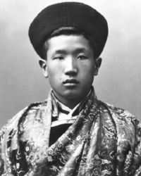
Sidkeong Tulku Namgyal (Sikkimese: སྲིད་སཀྱོང་སྤྲུལ་སྐུ་རྣམ་རྒྱལ་; Wylie: srid skyong sprul sku rnam rgyal) (1879–5 December 1914) was the ruling Maharaja and Chogyal of Sikkim for a brief period in 1914, from 10 February to 5 December.
He was the second son of Maharaja Sri Panch Sir Thutob Namgyal, and was educated at St. Paul's School, Darjeeling and at Pembroke College, Oxford. A polyglot, he was learned in Chinese, English, Hindi, Lepcha, Nepali and Tibetan.
He was recognised as the reincarnation of his uncle, Sidkeong Namgyal, the abbot of Phodong Monastery. Sidkeong Tulku Namgyal reconstructed the monastery.
After his education in Oxford, he returned to Sikkim where he was closely associated with the administration of the country. He worked to dissolve the greed that occurs in vested interests and tried to unify Buddhists by renovating monasteries and their roles.
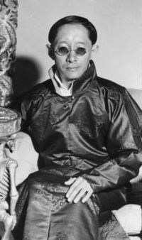
Tashi Namgyal (Sikkimese: བཀྲ་ཤིས་རྣམ་རྒྱལ་; Wylie: Bkra-shis Rnam-rgyal) (26 October 1893 – 2 December 1963) was the ruling Chogyal (King) of Sikkim from 1914 to 1963. He was the son of Thutob Namgyal.
Namgyal was the 11th ruler of the Namgyal dynasty of Sikkim, succeeding his half brother Sidkeong Tulku Namgyal, who had ruled from February to December in 1914, till his death from heart failure. Born in Tibet and crowned by the 13th Dalai Lama, Thubten Gyatso, he was a strong advocate for closer links with India.
He was married in October 1918 to Kunzang Dechen, and they had 3 sons and 3 daughters. The eldest son died in a plane crash during World War Two. On his death he was succeeded as Chogyal by his second son Palden Thondup Namgyal.
During his reign, he is known for land reform and free elections. He also favoured closer links between Sikkim, India and Tibet. Many people attribute his death to Indian agents.
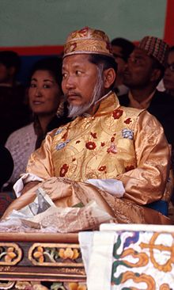
Palden Thondup Namgyal (23 May 1923 – 29 January 1982) was the 12th and last Chogyal (king) of the Kingdom of Sikkim.
Namgyal was born on 23 May 1923 at the Royal Palace, Park Ridge, Gangtok.
At six, he became a student at St. Joseph's Convent in Kalimpong, but had to terminate his studies due to attacks of malaria. From age eight to eleven he studied under his uncle, Rimpoche Lhatsun, in order to be ordained a Buddhist monk; he was subsequently recognised as the reincarnated leader of both Phodong and Rumtek monasteries. He later continued his studies at Saint Joseph's College in Darjeeling and finally graduated from Bishop Cotton School in Shimla, in 1941. His plans to study science at Cambridge were dashed when his elder brother, the crown prince, a member of the Indian Air Force was killed in a plane crash in 1941.
Namgyal served as adviser for internal affairs for his father, Sir Tashi Namgyal, the 11th Chogyal, and led the negotiating team which established Sikkim's relationship to India after independence in 1949. He married Samyo Kushoe Sangideki in 1950, a daughter of an important Tibetan family of Lhasa, and together they had two sons and a daughter. Samyo Kushoe Sangideki died in 1957.
The Adil Shahi or Adilshahi, was a Shia Muslim dynasty, founded by Yusuf Adil Shah, that ruled the Sultanate of Bijapur, centred on present-day Bijapur district, Karnataka in India, in the Western area of the Deccan region of Southern India from 1489 to 1686. Bijapur had been a province of the Bahmani Sultanate (1347–1518), before its political decline in the last quarter of the 15th century and eventual break-up in 1518. The Bijapur Sultanate was absorbed into the Mughal Empire on 12 September 1686, after its conquest by the Emperor Aurangzeb.
The founder of the dynasty, Yusuf Adil Shah (1490–1510), was appointed Bahmani governor of the province, before creating a de facto independent Bijapur state. Yusuf and his son, Ismail, generally used the title Adil Khan. 'Khan', meaning 'Chief' in Mongolian and adopted in Persian, conferred a lower status than 'Shah', indicating royal rank. Only with the rule of Yusuf's grandson, Ibrahim Adil Shah I (1534–1558), did the title of Adil Shah come into common use.
The Bijapur Sultanate's borders changed considerably throughout its history. Its northern boundary remained relatively stable, straddling contemporary Southern Maharashtra and Northern Karnataka. The Sultanate expanded southward, first with the conquest of the Raichur Doab following the defeat of the Vijayanagar Empire at the Battle of Talikota in 1565. Later campaigns, notably during the reign of Mohammed Adil Shah (1627–1657), extended Bijapur's formal borders and nominal authority as far south as Bangalore. Bijapur was bounded on the West by the Portuguese state of Goa and on the East by the Sultanate of Golconda, ruled by the Qutb Shahi dynasty.
The former Bahmani provincial capital of Bijapur remained the capital of the Sultanate throughout its existence. After modest earlier developments, Ibrahim Adil Shah I (1534–1558) and Ali Adil Shah I (1558–1579) remodelled Bijapur, providing the citadel and city walls, congregational mosque, core royal palaces and major water supply infrastructure. Their successors, Ibrahim Adil Shah II (1580–1627), Adil Shah (1627–1657) and Ali Adil Shah II (1657–1672), further adorned Bijapur with palaces, mosques, mausoleum and other structures, considered to be some of the finest examples of Deccan Sultanate and Indo-Islamic Architecture.
Yusuf Adil Shah (1450–1511), referred as Adil Khan or Hidalcão by the Portuguese, was the founder of the Adil Shahi dynasty that ruled the Sultanate of Bijapur for nearly two centuries. As the founder of the newly formed Bijapur dynasty (as the Adil Shahi dynasty is also known), Yusuf Adil Shah is credited with developing the town of Bijapur and elevating it to significant status.
The founder of the dynasty,Yusuf Adil Shah, may have been a Georgian slave who was purchased by Mahmud Gawan from Iran. Other historians mentioned him of Persian or Turkmen origin.
Some historians state Yusuf was a son of the Ottoman Sultan Murad II, while another states he was a Turkman of the Aq-Quyunlu.
Isamail Adil Shah (1498–1534; reigned 1511–34 ) was the king of Bijapur who spent most of his time extending his territory. His short-lived reign helped the dynasty establish a stronghold in the deccan.
Isamail Adil Shah succeeded his father Yusuf Adil Shah as the king of Bijapur as a minor. The affairs of the state were managed by the minister Kamal Khan. During this phase Kamal Khan imprisoned the young king and tried a coup. Punji Khatun the mother of Ismail hatched a counter plot and Kamal Khan was stabbed to death in the royal palace.
After the death of Kamal Khan, his son Ismail Khan laid siege to the palace in order to arrest Punji Khatun and Ismail Adil Shah. However Ismail Khan was killed in the fight at the gates to the palace. Ismail started to manage the affairs of the state with the help of his mother. Ismail was a follower of Shiah faith and declared it to be the faith of the state.
He was defeated by the ruler of Vijaynagar Empire named Krishnadevraya in the Battle of Raichur .
Mallu Adil Shah, of the Adil Shahi dynasty, was the king of the Bijapur Sultanate, India, for a short period in 1534.
Mallu Adil Shah succeeded his father Ismail Adil Shah's death. He was supposed to be in the company of evil habits. Punji Khatun, Mallu Adil Shah's paternal grand mother with the help of General Asad Khan deposed Mallu Adil Shah and declared his younger brother Ibrahim Adil Shah I as the king.
Ibrahim Adil Shah I (1534–1558) was a Sultan and later Shah of the Indian kingdom of Bijapur. He succeeded his elder brother, Mallu Adil Shah, through the machinations of the Afaqi faction at the court. He was the first Adil Shahi ruler to assume the royal title of Shah.
Having a strong penchant for Sunni Islam—the religion of most Deccani Muslims—on his accession he deleted the names of the twelve Shi'ah Imams from the Khutbah, discontinued previous Shia practices and restored the exercise of the Sunni practices. He deviated from the traditions of his predecessors and introduced many innovations in the political and religious policies. He degraded most of the afaqi faction (with a few exceptions), and in their place enrolled the Deccani (including the Marathas and Habashis) to the services, retaining only four hundred afaqi troops as his bodyguard. Consequently, he brought Sunnis to power and ended Shia domination by dismissing them from their posts and many Marathas acquired great influence at his court and public accounts began to be maintained in Marathi.
Ibrahim's anti-afaqi policy, however, considerably weakened the kingdom as the dismissed personnel joined the service of the neighbouring rulers. This exposed the kingdom to a series of invasions. Yet it was the veteran afaqi leader Asad Khan Lari (Buried in Belgaum), who acting as a diplomatic counselor to Ibrahim, saved the kingdom in the hour of crisis.
Ali Adil Shah I (1558–1579) was the fifth Sultan of Bijapur Sultanate.
On the day of his coronation Ali abandoned the Sunni practices and reintroduced the Shi’ah Khutbah and other practices. The Persian doctors of religion were granted full freedom to preach the Shi’ah doctrine and were paid by the State for their missionary activities.
The new Sultan restored back to power the afaqis while relegating the Deccanis to a position of insignificance. He subverted all the dogmatic experiments which his father had practiced.
Ibrahim Adil Shah II (1571 – 12 September 1627) was king of the Sultanate of Bijapur and a member of the Adil Shahi dynasty. Under his reign the dynasty had its greatest period[2] as he extended its frontier as far south as Mysore. He was a skilful administrator, artist, poet and a generous patron of the arts. He reverted to the Sunni sect of Islam, but remained tolerant of other religions, including Christianity. However, during his reign high-ranking Shiite immigrants became unwelcome and in 1590, he ordered the confinement of criers who read the khutba in the Shia form. After his reign, increasing weakness permitted Mughal encroachment and the successful revolt of the Maratha king Shivaji, who killed the Bijapur general Afzal Khan and scattered his army. The dynasty left a tradition of cosmopolitan culture and artistic patronage whose architectural remains are to be seen in the capital city of Bijapur.
Ibrahim Adil Shah (the father of Ali Adil Shah I) had divided power between the Sunni nobles, the Habshis and the Deccanis. However, Ali Adil Shah favoured the Shi'i.
Mohammed Adil Shah was the ruler of Bijapur, ascending the throne in 1627.
Bijapur partnered with the Mughals in the extinction of Ahmednagar. Mohammed maintained friendly relations with Shah Jahan and made a peace treaty of 1636, after the extinction of Ahmednagar. By a farman of Shah Jahan, he got assurances for the end of Mughal aggression against Bijapur and due to his good relations with the Mughals, Shah Jahan formally recognized Muhammad’s sovereignty and bestowed upon him the title of Shah in 1648, the only ruler of Bijapur to receive such recognition from the Mughals.
The Treaty of 1636 with the Mughals sealed the expansion of Bijapur in the north. So, Mohammed Adil Shah extended his dominations westwards into Konkan, Pune, Dhabul (present Mumbai), southwards into Mysore, and eastwards into Karnataka, present south Andhra Pradesh and Tamil Nadu. During his reign, the kingdom attained its greatest extent, power and magnificence, and his dominious stretched from the Arabian Sea to the Bay of Bengal.
On the death of Mohammed Adil Shah on November 4, 1656, Ali Adil Shah II, a youth of eighteen, succeeded to the throne of Bijapur through the efforts of the Prime Minister Khan Muhammad and the Queen, Badi Sahiba, sister of Qutb Shah of Golkonda.
His accession signaled disasters to the Kingdom and his reign marked the first phase of the decline of the mighty Bijapur Kingdom.
Shah Jahan, anxious to annex Bijapur to his empire, found a pretext in the legitimacy of Alis parents. On Aurangzeb’s plea, Shah Jahan sanctioned the invasion of Bijapur and gave him a free hand to deal with the situation. This sanction of such a war was wholly unrighteous. Bijapur was not a vassal state of the Mughals; but an independent and equal ally of the Mughal Emperor, and the latter had no lawful right to confirm or question the succession at Bijapur. However, Aurangzeb, had to raise the siege and rush to the north for the war of succession to the Mughal throne.
With Muhammad’s death and Ali’s accession disorder had begun in the Karnataka. The Nayaks tried to recover their former lands. (Bangalore the Capital of Karnataka was Bijapur’s administrative headquarters for controlling these feudatories by Kempegouda). On the other hand, Shivaji increased the momentum of acquiring more and more Bijapur territory and carved an independent Maratha state, while his diplomacy prevented any Mughal Bijapur coalition against him.
Sikandar Adil Shah was placed on the throne of Bijapur in 1672 at four years of age. Therefore, his reign (1672–1686) is one of regents and ministers and was marked by chronic civil war among factious nobles, independence of provincial governors, paralysis of the central administration, Mughal invasions, secret alliances but pretend hostilities with the Maratha Empire and other neighbors, and the final absorption of Bijapur into the Mughal Empire in 1686.
The prestige of Bijapur was so seriously damaged by internal disruptions that the Mughal General Diler Khan almost coerced and humiliated Sikandar. Despite several sacrifices and desperate attempts on the part of Sikandar, he could not satisfy the growing greed of the Mughals. Sikandar’s alliance with Sambhaji (who was Hindu) further aggravated Mughal-Bijapur relations.
At last, Emperor Aurangzeb himself marched out in 1685 with a large army to fulfill the ambition of his life. After desperately defending his capital and withstanding the prolonged siege of Bijapur in 1685-1686, Sikandar was unable to halt the Mughal assault led by Aurangzeb. On 12 September 1686, Bijapur was occupied, its garrison surrendered and Bijapur Fort was annexed by the Mughal Empire.
Nizam Shahi Dynasty (1490–1636)
The Deccan Sultanates were five dynasties that ruled late medieval Indian kingdoms, namely, Bijapur, Golkonda, Ahmadnagar, Bidar, and Berar in south-western India. The Deccan sultanates were located on the Deccan Plateau, between the Krishna River and the Vindhya Range. These kingdoms became independent during the break-up of the Bahmani Sultanate. In 1490, Ahmadnagar declared independence, followed by Bijapur and Berar in the same year. Golkonda became independent in 1518 and Bidar in 1528. In 1510, Bijapur repulsed an invasion by the Portuguese against the city of Goa, but lost it later that year.
Although generally rivals, they did ally against the Vijayanagara Empire in 1565, permanently weakening Vijayanagar in the Battle of Talikota. In 1574, after a coup in Berar, Ahmadnagar invaded and conquered it. In 1619, Bidar was annexed by Bijapur. The sultanates were later conquered by the Mughal Empire; Berar was stripped from Ahmadnagar in 1596, Ahmadnagar was completely taken between 1616 and 1636, and Golkonda and Bijapur conquered by Aurangzeb's 1686-87 campaign.
Malik Ahmad Shah Bahri, the governor of Junnar after defeating the Bahmani army led by general Jahangir Khan on May 28, 1490 declared independence and established the Nizam Shahi dynasty rule over the sultanate of Ahmadnagar. The territory of the sultanate was located in the northwestern Deccan, between the sultanates of Gujarat and Bijapur. Initially his capital was in Junnar. In 1494, the foundation was laid for the new capital Ahmadnagar. Malik Ahmed Shah after several attempts, secured the great fortress of Daulatabad in 1499. After his death in 1510, his son Burhan, a boy of seven was installed in his place. Burhan Shah I died in Ahmadnagar in 1553. He left six sons, of whom Hussain succeeded him. After the death of Hussain Shah I in 1565, his minor son Murtaza ascended the throne. During his minority, his mother Khanzada Humayun Sultana ruled as a regent for several years. Murtaza Shah annexed Berar in 1574. On his death in 1588, his son Miran Hussain ascended the throne. But his reign could last only a little more than ten months as he was poisoned to death. Ismail, a cousin of Miran Hussain was raised to the throne, but the actual power was in the hands of Jamal Khan, the leader of the Deccani group in the court. Jamal Khan was killed in the battle of Rohankhed in 1591 and soon Ismail Shah was also captured and confined by his father Burhan, who ascended the throne as Burhan Shah. After the death of Burhan Shah his eldest son Ibrahim ascended the throne. Ibrahim Shah died only after a few months in the battle with Bijapur sultanate. Soon, Chand Bibi, the aunt of Ibrahim Shah, proclaimed Bahadur, the infant son Ibrahim Shah as the rightful Sultan and she became the regent of him. In 1596, Mughal attack led by Murad was repulsed bravely by Chand Bibi. After the death of Chand Bibi in July,1600 Ahmadnagar was conquered by the Mughals and Bahadur Shah was imprisoned. But Malik Ambar and other Ahmadnagar officials defied the Mughals and declared Murtaza Shah II as sultan in 1600 at a new capital Paranda. Malik Ambar became prime minister and Vakil-us-Saltanat of Ahmadnagar. Later, the capital was shifted first to Junnar and then to a new city Khadki (later Aurangabad). After the death of Malik Ambar, his son Fath Khan surrendered to the Mughals in 1633 and handed over the young Nizam Shahi ruler Hussain Shah, who was sent as a prisoner to the fort of Gwalior. But soon, Shahaji with the assistance of Bijapur, placed an infant scion of the Nizam Shahi dynasty, Murtaza on the throne and he became the regent. In 1636 Aurangzeb, then Mughal viceroy of Deccan finally annexed the sultanate to the Mughal empire after defeating Shahaji.
Malik Ahmad Nizam Shah was the founder of the Nizam Shahi dynasty and the Ahmadnagar Sultanate.
Ahmed was the son of the Nizam ul-Mulk Malik Hasan Bahri, a brahmin from Beejanuggar (or Bijanagar) originally named Timapa. Ahmed's father was made Malik Na'ib on the death of Mahmud Gavan and was appointed Prime Minister by Mahmood Shah Bahmani II. Soon after, he appointed Ahmed governor of Beed and other districts in the vicinity of Dowlutabad. He chose to take up residence in Junnar. His initial attempts to take up this responsibility were rejected by the local officers, but, despite his youth and the weakness of the Sultanate, he captured the hillfort at Soonere and the city after a long siege. Using the resources from the city, he campaigned through 1485, capturing Chavand, Loghur, Toong, Kooray, Tikona, Koondhana, Purandar, Bhorop, Jivdhan, Kuhrdroog, Murud-Janjira, Mahuli and Pally. He was fighting in the Konkan coastal regions when he heard of the death of his father. Withdrawing to Junnar in 1486, Ahmed assumed the titles of Nizam ul-Mulk Bahri from his father, the last signifying a falcon as Hasan had been falconer to the Sultan.
He defended his province against incursions from the Sultan, successfully defeating a much larger army led by Sheikh Mowullid Arab in a night attack [1]:194 and an army of 18,000 led by Azmut ul-Mulk. His success was such that the Sultan "complained of the disgrace to which his troops had been subjected, in allowing Ahmad, the son of Nizam ul-Mulk the falconer, to soar aloft like a falcon while they lay trembling in their nests."
Burhan Nizam Shah I was ruler of the Ahmednagar Sultanate, in Central India. He ascended the throne on the death of his father Ahmad Nizam Shah I in 1508 or 1510 when he was seven years old. He died in 1553 and was succeeded by Hussain Nizam Shah I.
He converted to Shia Islam and royals and commoners followed suit. Sunni theologians and their followers resented this but were crushed. His reign was characterized by religious tolerance, art and flourishing trade. Skirmishes with the Mughals, Bijapur & various other small states continued through his reign. A palace built for Burhan Shah, the second Nizam, stands in ruins two miles south-east of the city of Ahmednagar.
Hussain Nizam Shah I, (1555–?) was the preeminent ruler of the Ahmadnagar Sultanate and the leading figure of the coalition of the Deccan Sultanates during the Battle of Talikota.
Burhan Nizam Shah II (ruled 1591-1595) was the ruler of Ahmadnagar in the Deccan. His death in 1595 was followed by civil war over who should rule. He was eventually succeeded in actual power by his sister Chand Sultan who ruled in the name of his infant son.
Murtaza Nizam Shah III, was a Nizam Shahi boy prince who in the year 1635 became the nominal Sultan of Ahmednagar, he was subjected to the authority of the Maratha leader Shahaji Raje.[1] Sardar Ranoji Wable attacked Ahmadnagar killed Fateh Khan along with the boy prince Hussain Nizamshah III by order or Shah Jahan, his relatives as well as two pregnant women so that there would not be any male heir to the throne. But soon, Shahaji with the assistance of Bijapur, placed an infant scion of the Nizam Shahi dynasty, Murtaza on the throne and he became the regent. The scion Nizam and Shahaji's family was stationed in the Mahuli Fort. Shah Jahan quickly made an alliance with Mohammed Adilshah of Bijapur and the respective Mughal and Adilshahi generals, Khan Zaman ( son of Mahabat Khan ) and Ranadulla Khan ( father of Rustum-e-Zaman) besieged Mahuli. Shahaji tried to break the siege externally several times, but failed.. However, the mother of scion Nizam, Sajeeda was caught while fleeing along with the Nizam. Murtaza Nizam Shah III was brought before Shah Jahan and Mohammed Adilshah. Shah Jahan proposed to murder the boy Nizam so as to finish the Nizamshahi once and for all. But Shahaji intervened and requested Shah Jahan to change his decision. But Adilshah was adamant. After some thinking, Shah Jahan ordered Nizam's release much to the surprise of Adilshah. However, he set a condition that Shahaji would be placed in deep south so that he could not pose any challenge to Mughals. The Nizam was taken away by Sardar Ranoji Wable to Delhi and was made a Sardar.
Berar Sultanate (1490–1572)
Berar was one of the Deccan sultanates. It was established in 1490 following the disintegration of the Bahmani Sultanate.
The origin of the name Berar or Warhad (वऱ्हाड) as it is spelled in Marathi, is not known. Possibly it may be a corruption of Vidarbha, the name of a kingdom in the Deccan which is mentioned in the Mahabharata.
The first authentic records show it to have been part of the Andhra or Satavahana empire. On the fall of the Chalukyas in the 12th century, Berar came under the sway of the Yadavas of Deogiri, and remained in their possession until the Muslim invasions at the end of the 13th century. On the establishment of the Bahmani Sultanate in the Deccan (1348), Berar was constituted one of the five provinces into which their kingdom was divided, being governed by great nobles, with a separate army. The perils of this system became apparent when the province was divided (1478 or 1479) into two separate provinces, named after their capitals Gawil and Mahur. The Bahmani dynasty was, however, already tottering to its fall.
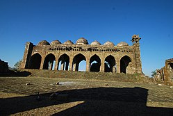
Gavilgad Fort, built by Fathullah Imad-ul-Mulk of Berar (1490 – 1504)
Fathullah Imad-ul-mulk was the founder of the Imad Shahi Dynasty and the Berar Sultanate.
Fathullah was born a Kanarese Hindu, but was captured as a boy by Bahmani forces on an expedition against the Vijayanagara empire and reared as a Muslim. He served the Bahmani Sultans in Bidar. Through the influence of Mahmud Gavan, he achieved the rank of officer in command of the forces (Sarlaskar) of Berar and received the title Imad-ul-mulk.
Shortly after Malik Ahmad Nizam Shah I declared independence for the Ahmadnagar Sultanate in 1490, Fathullah Imad-ul-mulk declared himself Sultan of Berar. He set up his capital in Achalpur and proceeded to annex Mahur to his new kingdom. He also fortified Gavilgad and Narnala. He was succeeded by his eldest son Aladdin Imad Shah.
Ala-ud-din Imad Shah (1504–1530)
Darya Imad Shah (1530–1562)
Burhan Imad Shah (1562–1574)
Tufal Khan (usurper) 1574
Bidar Sultanate(1492–1542)
Bidar sultanate was one of the Deccan sultanates of late medieval southern India.
The sultanate was founded in 1492 by Qasim Barid, who was a former Turkish slave. He joined the service of the Bahmani sultān Muhammad Shah III. He started his career as a sar-naubat but later became the mir-jumla (prime minister) of the Bahmani sultanate. During the reign of Mahmud Shah Bahmani (r.1482 – 1518), he became the de facto ruler. After his death in 1504, his son Amir Barid became the prime minister and controlled the administration of the Bahmani sultanate. After the death of Mahmud Shah Bahmani in 1518, he was succeeded by four sultans, one after another, but they were mere puppets in the hands of Amir Barid. When the last Bahmani ruler Kalimullah fled to Bidar in 1527, Amir Barid became practically independent. But he never assumed any royal title.
In 1542, he was succeeded by his son Ali Barid, who was the first to assume the title of Shah. Ali Barid joined the other Deccan sultans in the battle of Talikota against the Vijaynagar Empire in January, 1565. After his death in 1580, Ali Barid was succeeded by his son Ibrahim Barid, who after his death in 1587 was succeeded by his younger brother Qasim Barid II. After his death in 1591, he was succeeded by his infant son Ali Barid II, who was soon dethroned by one of his relative, Amir Barid II. In 1601, he was also overthrown by one of his relative, Mirza Ali Barid. In 1609, he was succeeded by the last ruler, Amir Barid III, who fought against the Mughals in 1616 under the leadership of Malik Ambar. In 1619, he was defeated by the Bijapur sultan Ibrahim Adil Shah II. Bidar was annexed to Bijapur sultanate. Amir Barid III and his sons were brought to Bijapur and kept "under surveillance"
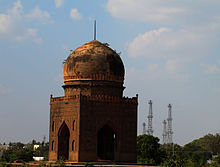
Tomb of Qasim Barid Shah of Bidar Sultanate.
Qasim Barid I (r.1489-1504) was prime-minister of the Bahmani sultanate and the founder of the Bidar Sultanate, one of the five late medieval Indian kingdoms together known as the Deccan sultanates. Qasim Barid was a Muslim (Shia) Turk domiciled in Safavid Georgia. He entered the service of the Bahmani sultan Muhammad Shah III and later became the prime-minister of the Bahmani sultanate. Some have claimed that Qasim Barid was of Hungarian descent.
Qasim Barid I led one of the first revolts against the Bahmani Sultanate. He was able to get himself made chief of state but had seriously undermined the stability of the kingdom. The Bahmani governors of Junnar, Bijapur and Berar refused to acknowledge the authority of Qasim Barid and, in June 1490, Malik Ahmad Nizam-ul-Mulk, the governor of Junnar founded the independent Ahmednagar Sultanate followed by the foundation of the independent Bijapur Sultanate by Yusuf Adil Khan and the Berar Sultanate by Fathullah Imad-ul-Mulk in the same year. The founding of the dynasty occurred in 1492.
Qasim Barid died in 1504 and was succeeded by his son Amir Barid I, as the prime minister of the Bahmani Sultanate who also became the de facto ruler like his father.
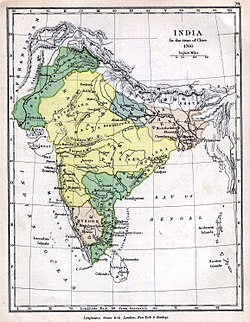
Territory under Maratha control in 1760 (yellow).
The Maratha Empire or the Maratha Confederacy was an Indian power that dominated much of the Indian subcontinent in the 18th century. The empire formally existed from 1674 with the coronation of Chhatrapati Shivaji and ended in 1818 with the defeat of Peshwa Bajirao II. The Marathas are credited to a large extent for ending Mughal rule in India.People from Maharashtra were known as Marathas.
The Marathas were a Marathi warrior group from the western Deccan Plateau (present day Maharashtra) that rose to prominence by establishing a Hindavi Swarajya. The Marathas became prominent in the seventeenth century under the leadership of Shivaji who revolted against the Adil Shahi dynasty and the Mughal Empire and carved out a kingdom with Raigad as his capital. Known for their mobility, the Marathas were able to consolidate their territory during the Mughal–Maratha Wars and later controlled a large part of the Indian subcontinent.
Chhattrapati Shahu, grandson of Shivaji, was released by the Mughals after the death of Emperor Aurangzeb. Following a brief struggle with his aunt Tarabai, Shahu became the ruler and appointed Balaji Vishwanath and later, his descendants, as the peshwas or prime ministers of the empire. Balaji and his descendants played a key role in the expansion of Maratha rule. The empire at its peak stretched from Tamil Nadu in the south, to Peshawar (modern-day Khyber Pakhtunkhwa, Pakistan) in the north, and Bengal in the east. The Marathas even discussed abolishing the Mughal throne and placing Vishwasrao Peshwa on the Mughal imperial throne in Delhi. In 1761, the Maratha Army lost the Third Battle of Panipat to Ahmad Shah Abdali of the Afghan Durrani Empire, which halted their imperial expansion into Afghanistan. Ten years after Panipat, the young Peshwa Madhavrao I's Maratha Resurrection reinstated Maratha authority over North India.
In a bid to effectively manage the large empire, Madhavrao I gave semi-autonomy to the strongest of the knights, which created a confederacy of Maratha states. They became known as the Gaekwads of Baroda, the Holkars of Indore and Malwa, the Scindias of Gwalior and Ujjain, the Bhonsales of Nagpur and the Puars of Dhar and Dewas. In 1775, the East India Company intervened in a Peshwa family succession struggle in Pune, which led to the First Anglo-Maratha War, resulting in a Maratha victory. The Marathas remained the pre-eminent power in India until their defeat in the Second and Third Anglo-Maratha Wars (1805-1818), which left the East India Company in control of most of India.
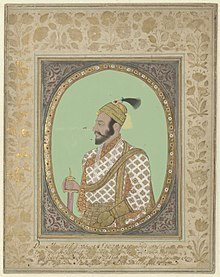
Shivaji's portrait (1680s) in the Rijksmuseum
Shivaji Bhonsle (Marathi [ʃiʋaˑɟiˑ bʱoˑs(ə)leˑ]; c. 1627/1630 – 3 April 1680) was an Indian warrior king and a member of the Bhonsle Maratha clan. Shivaji carved out an enclave from the declining Adilshahi sultanate of Bijapur that formed the genesis of the Maratha Empire. In 1674, he was formally crowned as the chhatrapati (monarch) of his realm at Raigad.
Reign :- 1674 - 1680 CE
Coronation :- 6 June 1674
Born :- c. April 1627 or 19 February 1630 - Shivneri Fort, Shivneri, Ahmadnagar Sultanate (present-day in Maharashtra)
Died :- 3rd April 1680 - Raigad Fort, Raigad, Maratha Empire (present-day in Maharashtra)
Over the course of his life, Shivaji engaged in both alliances and hostilities with the Mughal Empire, Sultanate of Golkonda, and Sultanate of Bijapur, as well as the English, Portuguese, and French colonial powers. Shivaji's military forces expanded the Maratha sphere of influence, capturing and building forts, and forming a Maratha navy. Shivaji established a competent and progressive civil rule with well-structured administrative organisations. He revived ancient Hindu political traditions and court conventions and promoted the usage of Marathi and Sanskrit, rather than Persian, in court and administration.
Shivaji's legacy was to vary by observer and time but he began to take on increased importance with the emergence of the Indian independence movement, as many elevated him as a proto-nationalist and hero of the Hindus. Particularly in Maharashtra, debates over his history and role have engendered great passion and sometimes even violence as disparate groups have sought to characterise him and his legacy.
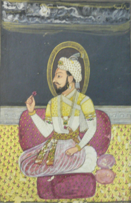
A painting of Sambhaji, late 17th century
Sambhaji (14 May 1657 – 11 March 1689) was the second ruler of the Maratha kingdom. He was the eldest son of Shivaji, the founder of the Maratha Empire and his first wife Saibai. He was successor of the realm after his father's death, and ruled it for nine years. Sambhaji's rule was largely shaped by the ongoing wars between the Maratha kingdom and Mughal Empire as well as other neighbouring powers such as the Siddis, Mysore and the Portuguese in Goa. In 1689, Sambhaji was captured, tortured and executed by the Mughals, and succeeded by his brother Rajaram I.
Sambhaji was born at Purandar fort to Saibai, Shivaji's first wife. His mother died when he was two years old and he was raised by his paternal grandmother Jijabai. At the age of nine, Sambhaji was sent to live with Raja Jai Singh I of Amber as a political hostage to ensure compliance of the Treaty of Purandar that Shivaji had signed with the Mughals on 11 June 1665. As a result of the treaty, Sambhaji became a Mughal mansabdar. He and his father Shivaji presented themselves at Moghal emperor, Aurangzeb's court at Agra on 12 May 1666. Aurangzeb put both of them under house arrest but they escaped on 22 July 1666. However, the two sides reconciled and had cordial relations during the period 1666–1670. In this period Shivaji and Sambhaji fought alongside the Mughals against the Sultanate of Bijapur.
Sambhaji was married to Jivubai in a marriage of political alliance; per Maratha custom she took the name Yesubai. Jivubai was the daughter of Pilajirao Shirke, who had entered Shivaji's service following the defeat of a powerful deshmukh Rao Rana Suryajirao Surve who was his previous patron. This marriage thus gave Shivaji access to the Konkan coastal belt.
Sambhaji's behaviour, including alleged irresponsibility and addiction to sensual pleasures led Shivaji to imprison his son at Panhala fort in 1678 to curb his behaviour. Sambhaji escaped from the fort with his wife and defected to the Mughals in December 1678 for a year, but then returned home when he learnt of a plan by Dilir Khan, the Mughal viceroy of Deccan to arrest him and send him to Delhi. Upon returning home, Sambhaji was unrepentant and was put under surveillance at Panhala.
Rajaram Raje Bhosale (24 February 1670 – 3 March 1700 Sinhagad) was the younger son of Maratha ruler Chhatrapati Shivaji, and half-brother of Sambhaji. He took over the Maratha Empire as its third Chhatrapati after his brother's death at the hands of the Mughal emperor, Aurangzeb in 1689. He had a very short reign, during which he was engaged in a struggle with the Mughals.
Rajaram was born to Shivaji and his younger wife, Soyarabai on 24 February, 1670. He was thirteen years younger than his brother, Sambhaji. Given the ambitious nature of Soyarabai, Rajaram was installed on the Maratha throne upon the death of his father in 1680. However, Sambhaji quickly won over the Maratha generals to his side and claimed the throne. Rajaram and Soyarabai were imprisoned and their advisers eliminated.Rajaram remained a prisoner of Sambhaji until 1689 when Sambhaji was captured and executed by the Mughals and his family taken prisoner. Rajaram subsequently succeeded Sambhaji as the head of the Maratha state.
Rajaram married three times. His first marriage was at the age of ten to Jankibai, the five-year-old daughter of Shivaji's army chief, Prataprao Gujar.[3] His other wives were Tarabai, the daughter of Hambirrao Mohite, the army chief who succeeded Prataprao, and Rajasbai from the influential Ghatge family of Kagal. Rajaram had three sons, Raja Karna, born out of wedlock to a slave-woman, Shivaji II with Tarabai, and Sambhaji II with Rajasbai.
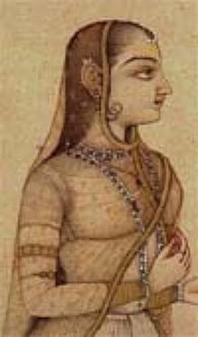
Maharani Tarabai lead the Marathas in the 27 year war with Mughals after death of her husband Rajaram Chhatrapati
Tarabai Bhosale (1675-9 December 1761 at Satara) was the regent of the Maratha empire of India from 1700 until 1708. She was the queen of Chhatrapati Rajaram Bhosale, daughter-in-law of the empire's founder Shivaji and mother of Shivaji II. She is acclaimed for her role in keeping alive the resistance against Mughal occupation of Maratha territories after the death of her spouse, and acted as regent during the minority of her son.
Tarabai came from the Mohite clan and was daughter of famed Maratha general Hambirao Mohite. She also was the niece of Soyarabai and therefore a cousin of her husband, Rajaram. On Rajaram's death in 1700, she proclaimed her infant son, Shivaji II as Rajaram's successor and herself as the regent.
As the regent, she took charge of the war against Aurangzeb's forces. Tarabai was skilled in cavalry movement and made strategic movements herself during wars. She personally led the war and continued the fight against the Mughals. A truce was offered to the Mughals in such a way that it was promptly rejected by the Mughal emperor and Tarabai continued the Maratha resistance. By 1705, Marathas had crossed the Narmada River and made small incursions in Malwa, retreating immediately. The Maratha country was relieved at the news of the death of Mughal emperor Aurangzeb who died at Khuldabad in Aurangabad in 1707.
Chhatrapati Shivaji II (b. 1696, ruled 1700–14)
Bhosale Chhatrapatis at Kolhapur (1700–1947)
The Bhonsle (or Bhonsale, Bhosale, Bhosle) are a prominent group within the Maratha clan system. Traditionally a warrior clan, some members served as rulers of several states in India, the most prominent being Shivaji, the founder of the Maratha Empire which displaced the Moghul Empire as the preeminent political and military power in India. His successors ruled as chhatrapatis (emperors/maharajas) from their capital at Satara, although de facto rule of the empire passed to the Peshwas, the Maratha hereditary chief ministers, during the reign of Shahu I. In addition to the Bhonsle Chhatrapatis of Satara, rulers of the Bhonsle clan established themselves as junior branch of Chhatrapatis at Kolhapur, and as Maharajas of Nagpur in modern-day Maharashtra in the 18th century.
After the British defeat of the Marathas in the Third Anglo-Maratha War in 1818, the four Bhonsle dynasties continued as rulers of their princely states, acknowledging British suzerainty while retaining local autonomy. The states of Satara, Thanjavur, and Nagpur came under direct British rule in the mid-nineteenth century when their rulers died without male heirs, although the British allowed titular adoptions to take place. Kolhapur state remained autonomous until India's independence in 1947, when the rulers acceded to the Indian government.
Akkalkot State, Sawantwadi State and Barshi were amongst other prominent states ruled by the Bhonsles.
Chhatrapati Shivaji II (ruled 1700–14)
Sambhaji II of Kolhapur (ruled 1714–60)
Rajmata Jijibai, regent (1760–73)
Rajmata Durgabai, regent (1773–79)
Shahu Shivaji II of Kolhapur (r. 1762–1813)
Sambhaji III of Kolhapur (ruled 1813–21)
Shivaji III of Kolhapur (ruled 1821–22)
Shahaji I of Kolhapur (ruled 1822–38)
Shivaji IV of Kolhapur (ruled 1838–66)
Rajaram I of Kolhapur (r. 1866–70)
Council of regency (1870–94)
Shivaji V of Kolhapur (ruled 1871–83)
Rajarshi Shahu IV of Kolhapur (ruled 1884–1922)
Rajaram II of Kolhapur (ruled 1922–40)
Indumati Tarabai of Kolhapur, regent (1940–47)
Shivaji VI of Kolhapur (ruled 1941–46)
Shahaji II of Kolhapur (b. 1910, r. 1947, d. 1983); formerly Maharaja of Dewas Senior; adopted by Indumati Tarabai, widow of Rajaram II
Bhosale Chhatrapatis at Satara (1707–1839)
The Bhonsle (or Bhonsale, Bhosale, Bhosle) are a prominent group within the Maratha clan system. Traditionally a warrior clan, some members served as rulers of several states in India, the most prominent being Shivaji, the founder of the Maratha Empire which displaced the Moghul Empire as the preeminent political and military power in India. His successors ruled as chhatrapatis (emperors/maharajas) from their capital at Satara, although de facto rule of the empire passed to the Peshwas, the Maratha hereditary chief ministers, during the reign of Shahu I. In addition to the Bhonsle Chhatrapatis of Satara, rulers of the Bhonsle clan established themselves as junior branch of Chhatrapatis at Kolhapur, and as Maharajas of Nagpur in modern-day Maharashtra in the 18th century.
After the British defeat of the Marathas in the Third Anglo-Maratha War in 1818, the four Bhonsle dynasties continued as rulers of their princely states, acknowledging British suzerainty while retaining local autonomy. The states of Satara, Thanjavur, and Nagpur came under direct British rule in the mid-nineteenth century when their rulers died without male heirs, although the British allowed titular adoptions to take place. Kolhapur state remained autonomous until India's independence in 1947, when the rulers acceded to the Indian government.
Akkalkot State, Sawantwadi State and Barshi were amongst other prominent states ruled by the Bhonsles.
Shahu Bhonsle (1682–1749 CE) was the fourth Chhatrapati of the Maratha Empire created by his grandfather, Shivaji. He was son of Sambhaji, Shivaji's eldest son and successor. Shahu, as a child, was taken prisoner along with his mother in 1689 by Mughal sardar, Zulfikar Khan Nusrat Jang After the death of Aurangzeb in 1707, leading Mughal courtiers released Shahu with a force of fifty men, thinking that a friendly Maratha leader would be a useful ally. At that time he fought a brief war with his aunt Tarabai in an internecine conflict to gain the Maratha throne in 1708.
Under Shahu's reign, Maratha power and influence extended to all corners of the Indian subcontinent. However after his death, power moved from the ruling chhatrapati to his ministers (the Peshwas) and the generals who had carved out their own fiefdoms such as the Shindes, Holkars, Gaekwad and Bhonsle of Nagpur.
Early in his reign, Shahu appointed Balaji Vishwanath as his Peshwa. Over the next fifty years, Balaji followed by his son, Bajirao I and grandson Balaji Bajirao with help of capable military leaders such as Shinde, Holkar, Gaekwad, Pawar and Bhonsle of Nagpur expanded Maratha power in all directions of the Indian subcontinent.
Rajaram II Bhonsle, also known as Ramaraja, was the 5th monarch of Maratha Empire. He was an adopted son of Chhattrapati Shahu. Tarabai had presented him to Shahu as her own grandson and used him to grab power after Shahu's death. However, after being sidelined, she stated that Rajaram II was only an imposter. Nevertheless, Peshwa Balaji Baji Rao retained him as the titular Chhatrapati. In reality, Peshwa and other chiefs had all the executive power, while Rajaram II was only a figurehead.
In the 1740s, during the last years of Shahu's life, Tarabai brought Rajaram II to him. She presented the child as her grandson, and therefore, as a direct descendant of Shivaji through her husband Rajaram Chhatrapati. She claimed that he had been concealed after his birth for his protection and had been raised by the wife of a Rajput soldier. Consequently, Shahu adopted him as a child.
After Shahu's death, Rajaram II was appointed as the new Chhatrapati, the Emperor of Marathas. When Peshwa Balaji Baji Rao left for the Mughal frontier, Tarabai urged Rajaram II to remove him from the post of Peshwa. When Rajaram refused, she imprisoned him in a dungeon at Satara, on November 24, 1750. She claimed that he was an imposter from Gondhali caste and she had falsely presented him as her grandson to Shahu. His health deteriorated considerably during this imprisonment. Tarabai later signed a peace treaty with the Peshwa, acknowledging his superiority. On September 14, 1752, Tarabai and the Peshwa took an oath at Khandoba temple in Jejuri, promising mutual peace. At this oath ceremony, Tarabai also swore that Rajaram II was not her grandson, but an imposter from the Gondhali caste. Nevertheless, the Peshwa retained Rajaram II as the titular Chhhatrapati and a powerless figurehead.
Shahu II of Satara (1777–1808). Son of Ramaraja
Pratapsinh (1808–1839)
Shahaji III (1839–1848)
Pratapsinh I (adopted)
Rajaram III
Pratapsinh II
Raja Shahu III (1918–1950)
The Peshwas (1713–1858)
A Peshwa was the equivalent of a modern Prime Minister in the Maratha Empire. Originally, the Peshwas served as subordinates to the Chhatrapati (the Maratha king), but later, they became the de facto leaders of the Marathas, and the Chatrapati was reduced to a nominal ruler. During the last years of the Maratha Empire, the Peshwas themselves were reduced to titular leaders, and remained under the authority of the Maratha nobles and the British East India Company.
All the Peshwas during the rule of Chhatrapati Shivaji and Chhatrapati Sambhaji belonged to Deshastha Brahmin community. The first Peshwa was Moropant Pingle, who was appointed as the head of the Ashta Pradhan (council of eight ministers) by Chhatrapati Shivaji, the founder of the Maratha Empire. The initial Peshwas were all ministers who served as the chief executives to the king. The later Peshwas held the highest administrative office and also controlled the Maratha confederacy. Under the Chitpavan Brahmin Bhat family, the Peshwas became the de facto hereditary administrators of the Confederacy. The Peshwa's office was most powerful under Baji Rao I (r. 1720-1740). Under Peshwa administration and with the support of several key generals and diplomats, the Maratha Empire reached its zenith, ruling most of the Indian subcontinent. However, after the Peshwa Raghunathrao allied himself with the British, the Peshwa's power declined substantially. The subsequent Peshwas were titular leaders and are said to be responsible for the downfall of Maratha empire, due to inefficiency in handling the affairs of the state. Later on many provinces were controlled and administered either by the Maratha nobles such as Daulat Rao Sindhia, or by the East India Company. During this period, the Maratha confederacy came to its end through its formal annexation into the British Empire in 1818.
The word Peshwa is from Persian پیشوا pēshwā, meaning "foremost, leader". After the coronation of Shivaji in 1674, he appointed Moropant Trimbak Pingle as the first Peshwa. Shivaji renamed this designation as Pantpradhan in 1674 but this term was less commonly used. Moropant Trimbak Pingale's son, Nilopant, succeeded him during Sambhaji's rule after Moropant's s death in 1683.
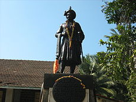
Shrimant | Peshwa | Balaji Vishwanath of Pune | Bhatt
Balaji Vishwanath (Bhat) (1662–1720), better known as Peshwa Balaji Vishwanath, was the sixth Peshwa and the first of a series of hereditary Peshwas (Marathi for Prime Minister) hailing from the Chitpavan Kokanastha Brahmin Hindu family who gained effective control of the Maratha Empire during the 18th century. Balaji Vishwanath assisted a young Maratha Emperor Shahu to consolidate his grip on a kingdom that had been racked by civil war and persistent attack by the Mughals under Aurangzeb. He was called "the second founder of the Maratha State." Later,his son Bajirao became the peshwa.
Balaji Vishwanath (Bhat) was born into a Konkanastha Brahmin (aka Chitpavan) family. The family hailed from the coastal Konkan region of present-day Maharashtra and were the hereditary Deshmukh for Shrivardhan under the Siddi of Janjira. He went out in search of employment to the upper regions of western ghats and worked as a mercenary trooper under various Maratha generals. According to Kincaid & Parasnis, Balaji Vishwanath entered the Maratha administration during the reign of Chhatrapati Sambhaji or the regency of his brother, Rajaram.Later he served as an accountant for the Maratha general, Dhanaji Jadhav, at Janjira. Between 1699 and 1702, he served as the Sar-subhedar or head-administrator at Pune and from 1704 to 1707 as Sarsubedar of Daulatabad. By the time Dhanaji died, Balaji had proven himself as an honest and able officer.Balaji fell out with Dhanaji's son and successor, Chandrarao Jadhav and went over to the newly released Maratha ruler Chhatrapati Shahu who took note of his abilities and appointed Balaji as his assistant (c.1708).
Next Shahu turned to subdue the Angres. Tukoji Angre had commanded Chattrapati Shivaji's navy and was succeeded in 1690 by his son Kanhoji Angre. Kanhoji received from Tarabai the title of "Sarkhel" or Admiral of the Maratha fleet. Kanhoji seized the opportunity of war between Tarabai and Shahu to effectively free himself of the suzerainty of either. Instead he captured the major trading center of Kalyan and the neighboring forts of Rajmachi and Lohgad. Shahu sent a large force under his "Peshwa" or Chief Minister, Bahiroji Pingale. Kanhoji defeated Pingle and imprisoned him at Loha gad, and started to advance towards Shahu's capital Satara.Shahu commanded Balaji again to raise another army to subdue Kanhoji. Balaji preferred the path of negotiation and was appointed as Shahu's plenipotentiary to negotiate with the admiral. Balaji and Kanhoji met at Lonavala.The newly appointed Peshwa appealed to the old sailor's patriotism for the Maratha cause. Angre agreed to become the Sarkhel (admiral) of Shahu's navy with control of the Konkan. Balaji and Angre then jointly attacked the Muslim Siddis of Janjira. Their combined forces captured most of the Konkan coast, including Balaji's birthplace of Shrivardhan, which became part of the Angre fiefdom. Delighted with Balaji's success, Shahu dismissed Bahiroji Pingale and appointed Balaji Vishwanath as Peshwa on 16 November 1713.
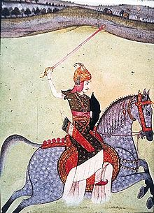
Shreemant Peshwa | Baji Rao I | Bajirao Ballal
Baji Rao (18 August 1700 – 28 April 1740) was a general of the Maratha Empire in India. He served as Peshwa (Prime Minister) to the fifth Maratha Chhatrapati (Emperor) Shahu from 1720 until his death. He is also known by the name Bajirao Ballal.
Baji Rao is credited with expanding the Maratha Empire in India which contributed to its reaching a zenith during his son's reign twenty years after his death. In his military career spanning 20 years, Baji Rao never lost a battle. According to the British Field Marshal Bernard Montgomery, Baji Rao was possibly the finest cavalry general ever produced by India.
Bajirao was born into the Bhat family of Kokanastha Chitpavan Brahmin lineage. His father Balaji Vishwanath was the first Peshwa of Chhatrapati Shahu; his mother was Radhabai Barve. Baji Rao had a younger brother Chimaji Appa and two sisters, Bihubai Joshi and Anubai Ghorpade. The eldest of his sisters was married into a Deshastha family. He spent his childhood in his father's newly acquired fiefdom of Saswad.
Bajirao would often accompany his father on military campaigns. He was with his father when the latter was imprisoned by Damaji Thorat before being released for a ransom. When Vishwanath died in 1720, Shahu appointed the 20-year old Baji Rao as the Peshwa. He is said to have preached the ideal of Hindu Pad Padshahi (Hindu Empire).
Bajirao intended to plant the Maratha flag upon the walls of Delhi and other cities governed by the Mughals and their subjects. He intended to replace the Mughal Empire and create a Hindu-Pat-Padshahi.
A Peshwa was the equivalent of a modern Prime Minister in the Maratha Empire. Originally, the Peshwas served as subordinates to the Chhatrapati (the Maratha king), but later, they became the de facto leaders of the Marathas, and the Chatrapati was reduced to a nominal ruler. During the last years of the Maratha Empire, the Peshwas themselves were reduced to titular leaders, and remained under the authority of the Maratha nobles and the British East India Company.
All the Peshwas during the rule of Chhatrapati Shivaji and Chhatrapati Sambhaji belonged to Deshastha Brahmin community. The first Peshwa was Moropant Pingle, who was appointed as the head of the Ashta Pradhan (council of eight ministers) by Chhatrapati Shivaji, the founder of the Maratha Empire. The initial Peshwas were all ministers who served as the chief executives to the king. The later Peshwas held the highest administrative office and also controlled the Maratha confederacy. Under the Chitpavan Brahmin Bhat family, the Peshwas became the de facto hereditary administrators of the Confederacy. The Peshwa's office was most powerful under Baji Rao I (r. 1720-1740). Under Peshwa administration and with the support of several key generals and diplomats, the Maratha Empire reached its zenith, ruling most of the Indian subcontinent. However, after the Peshwa Raghunathrao allied himself with the British, the Peshwa's power declined substantially. The subsequent Peshwas were titular leaders and are said to be responsible for the downfall of Maratha empire, due to inefficiency in handling the affairs of the state. Later on many provinces were controlled and administered either by the Maratha nobles such as Daulat Rao Sindhia, or by the East India Company. During this period, the Maratha confederacy came to its end through its formal annexation into the British Empire in 1818.
The word Peshwa is from Persian پیشوا pēshwā, meaning "foremost, leader". After the coronation of Shivaji in 1674, he appointed Moropant Trimbak Pingle as the first Peshwa. Shivaji renamed this designation as Pantpradhan in 1674 but this term was less commonly used. Moropant Trimbak Pingale's son, Nilopant, succeeded him during Sambhaji's rule after Moropant's s death in 1683.
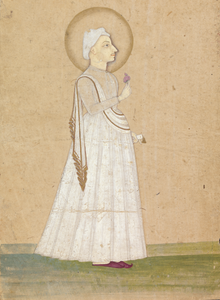
Portrait of Pradhanpant Shreemant Madhavrao Ballal Peshwa at the Yale Center for British Art
Madhav Rao I (February 14, 1745 – November 18, 1772) was the fourth Peshwa of the Maratha Empire. During his tenure, the Maratha empire recovered from the losses they suffered during the Third Battle of Panipat, a phenomenon known as Maratha Resurrection. He is considered one of the greatest Peshwas in Maratha history.
Madhavrao was second son of Nanasaheb Peshwa. He was born in Savnur in 1745. At the time of his birth, Maratha Empire was stretched across a sizeable portion of Western, Central and Northern India. On December 9, 1753, Madhavrao married Ramabai in Pune.
Nanasaheb had greatly expanded the Maratha Empire and had tried to establish better governance. However, he was held partially responsible for the severe defeat of the Marathas by Ahmad Shah Abdali at the Third Battle of Panipat(January 14, 1761). The Marathas suffered heavy losses including Nanasaheb's eldest son and heir Vishwasrao and cousin Sadashivrao Bhau. He died on June 23, 1761 at Parvati in Pune.
After his father's death, the sixteen-year-old Madhav Rao was made the next Peshwa of Maratha Empire. His father's brother Raghunathrao was to act as regent.
Narayan Rao (10 August 1755 – 30 August 1773) was the fifth Peshwa or de facto ruler of the Maratha Empire from November 1772 until his murder in August 1773. He married Gangabai Sathe who later gave birth to Sawai Madhavrao Peshwa.
Narayan Rao was the third son of Peshwa Balaji Baji Rao (also known as Nana Saheb) and his wife Gopikabai. Narayan Rao's eldest brother Vishwas Rao, heir to the title of Peshwa, was killed during the Third Battle of Panipat. The second brother, Madhavrao, succeeded their father after the latter's death in 1761. Their uncle Raghunathrao was appointed as regent to Madhavrao, but conspired against his nephew, and was eventually placed under house arrest.
Madhavrao I died in 1772 from tuberculosis and was succeeded by the seventeen-year-old Narayan Rao, with his uncle Raghunathrao again acting as regent after being released from house arrest. Differences soon arose between the immature Narayan Rao and his ambitious uncle, who had wanted to become Peshwa since Balaji Baji Rao's death. Both men were surrounded by ill-intentioned advisors, who further poisoned their minds against each other. As a result, Narayan Rao had his uncle again confined to his house.
During the Ganesh Festival of 1773 (the actual date was 30 August 1773, the last day of Ganesh Festival i.e. Anant Chaturdashi), several Gardi guards, led by their captain, Sumer Singh Gardi, entered the palace and started creating a commotion. They then charged towards the sleeping Peshwa's chambers, killing a clerk on the way. They intended to release Raghunathrao. Raghunathrao and his wife Anandibai, who were opposed to Narayanrao, had promised the Gardis that they would mediate in their dispute with Narayanrao. The Gardis followed Narayanrao to his uncle's chamber and a menial pulled him while Sumer Singh Gardi cut him down. His corpse was cremated secretly by the river at midnight.
Raghunathrao (a.k.a. Ragho Ballal or Ragho Bharari) (b. 18 Aug.1734 – d. 11 Dec.1783) was a Peshwa of the Maratha Empire for a brief period from 1773 to 1774.
Raghunathrao, also known as "Raghoba", "Raghoba Dada" and "Ragho Bharari," was the younger brother of Nanasaheb Peshwa. His father was Peshwa Bajirao I & mother was Kashibai. Raghunathrao was born in Mahuli near Satara on 8 December 1734. Much of his childhood was spent in Satara.
In his early years he fought with great success in the north. His expedition during 1753–1755 was concluded by an advantageous treaty with Jat. He is favorably remembered by Hindus for the fact that during that expedition he brought an end to Muslim rule at Hindu religious places such as Mathura, Vrindavan, Gaya, Kurukshetra. Raghunathrao imprisoned Mughal Emperor Ahmad Shah Bahadur and made Alamgir II Emperor in his place.
Ahmad Shah Durrani (of present-day Afghanistan) approached Punjab in 1760 and defeated Dattaji Scindia in battle of Barari Ghat near modern-day Delhi, Dattaji was also killed in battle.To counter this Raghunathrao was supposed to go north to handle the situation. Raghunathrao asked for large amount and an army, which was denied by Sadashivrao Bhau, his cousin and Diwan of Peshwa, so he declined to go. Sadashivrao Bhau was there upon made commander in chief of the Maratha Army, under whom the Battle of Panipat was fought.
After Maratha defeat at Third Battle of Panipat, his brother Nanasaheb Peshwa's death and his half brother's (Shamsher Bahadur) death in 1761, the Peshwa title was passed on to Madhavrao I, second son of Nanasaheb.
Peshwa Madhav Rao II (18 April 1774 – 27 October 1795) (a.k.a. Sawai Madhavrao Peshwa or Madhav Rao II Narayan) was Peshwa of the Maratha Empire in India, from his infancy. He was known as Sawai Madhav Rao or Madhav Rao Narayan. He was the posthumous son of Narayanrao Peshwa, murdered in 1773 on the orders of Raghunathrao. Madhavrao was considered the legal heir, and was installed as Peshwa by the Treaty of Salbai in 1782.
Madhavrao was the Posthumous son of Peshwa Narayanrao by his wife, Gangabai. After Narayanrao's murder, Raghunathrao became Peshwa but was soon deposed by the courtiers and knights of the Maratha Empire. They instead installed Gangabai's new born son, Madhavrao II, as the Peshwa with the courtiers themselves, led by Nana Fadnavis, as the Regents.He was made Peshawa when he was barely 40 days. His time in power was dominated by the political intrigues of Nana.
Madhavrao was fond of out-doors and had a private collection of exotic animals such as lions and Rhinoceros close to where the later Peshwe park zoo in Pune was situated,.He was particularly fond of his herd of trained dancing deer.
Madhavrao committed suicide at the age of 21 by jumping off from the high walls of the Shaniwar Wada in Pune..The cause of the suicide probably was that he could not endure the highhandedness of Nana Fadnavis. Just before his suicide,it is said that in ordering the execution of the despised police commissioner, Ghashiram Kotwal, Madhavrao was able to defy the wishes of Nana for the first time .
Baji Rao II (10 January 1775 – 28 January 1851) was the last Peshwa of the Maratha Empire, and governed from 1795 to 1818. He was installed as a puppet ruler by the Maratha nobles, whose growing power prompted him to flee his capital Pune and sign the Treaty of Bassein (1802) with the British. This resulted in the Second Anglo-Maratha War (1803-1805), in which the British emerged victorious and re-installed him as the titular Peshwa. In 1817, Baji Rao II joined the Third Anglo-Maratha War against the British, after they favoured the Gaekwad nobles in a revenue-sharing dispute. After suffering several battle defeats, the Peshwa surrendered to the British, and agreed to retire in return for an estate at Bithoor and an annual pension.
Baji Rao was the son of the former Peshwa Raghunathrao and Anandibai. Raghunathrao had defected to the English, causing the First Anglo-Maratha War, which ended with the Treaty of Salbai. Baji Rao was born in 1775, when both his parents were kept in imprisonment by the then Peshwa's cabinet. Till the age of 19, he along with his brothers were kept in confinement denying even basic rights of education.
Raghunathrao's successor as Peshwa Madhavrao II committed suicide in 1795, and died without an heir. A power struggle ensued among the Maratha nobles for control of the Confederacy. The powerful general Daulat Rao Scindia and minister Nana Fadnavis installed Baji Rao II as a puppet Peshwa. Baji Rao II had to carry the unfortunate legacy of his parents who, despite being from the same Brahmin family, were suspected of being involved in the murder of the young fifth Peshwa Narayanrao in 1774 AD. As such, being the son of suspected murderers, he was looked down upon by his ministers, nobility and even by his subjects. His every action was viewed with prejudice and it is said that though regarded as a good administrator and builder of modern-day Pune, he was often labeled as incapable and a coward Peshwa.
Pandita Ramabai has criticized him in her writings for marrying at the age of 60, a girl who was only 9 or 10 years old.
Nana Sahib (19 May 1824 – 1859), born as Dhondu Pant, was an Indian Peshwa of Maratha empire, aristocrat and fighter, who led the rebellion in Cawnpore (Kanpur) during the 1857 uprising. As the adopted son of the exiled Maratha Peshwa Baji Rao II, Nana Sahib believed that he was entitled to a pension from the English East India Company, but the underlying contractual issues are rather murky. The Company's refusal to continue the pension after his father's death, as well as what he perceived as high-handed policies, compelled him to revolt and seek independence from company rule in India. He forced the British garrison in Kanpur to surrender, then executed the survivors, gaining control of Cawnpore for a few days. He later disappeared, after his forces were defeated by a British force that recaptured Cawnpore. He was led to the Nepal Hills in 1859, where he is thought to have died.
Nana was born on 19 May 1824 as Nana Govind Dhondu Pant, to Narayan Bhat and Ganga Bai.
After the Maratha defeat in the Third Maratha War, the East India Company had exiled Peshwa Baji Rao II to Bithoor near Cawnpore (now Kanpur), where he maintained a large establishment paid for in part out of a British pension. Nana 's father, a well-educated Deccani Brahmin, had travelled with his family from the Western Ghats to become a court official of the former Peshwa at Bithoor. Lacking sons, Baji Rao adopted Nana Sahib and his younger brother in 1827. The mother of both children was a sister of one of the Peshwa's wives. Nana Sahib's childhood associates included Tantya Tope, Azimullah Khan and Manikarnika Tambe who later became famous as Rani Lakshmibai. Tantya Tope was the son of Pandurang Rao Tope, an important noble at the court of the Peshwa Baji Rao II. After Baji Rao II was exiled to Bithoor, Pandurang Rao and his family also shifted there. Tantya Tope was the fencing master to Nana Sahib. Azimullah Khan joined the court of Nana Sahib as Secretary, after the death of Baji Rao II in 1851. He later became the dewan in Nana Sahib's court.
Bhosale Maharajas of Thanjavur (?–1799)
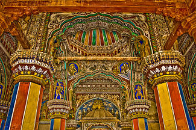
Interior of Durbar Hall, Thanjavur Maratha Palace
The Bhonsle (or Bhonsale, Bhosale, Bhosle) are a prominent group within the Maratha clan system. Traditionally a warrior clan, some members served as rulers of several states in India, the most prominent being Shivaji, the founder of the Maratha Empire which displaced the Moghul Empire as the preeminent political and military power in India. His successors ruled as chhatrapatis (emperors/maharajas) from their capital at Satara, although de facto rule of the empire passed to the Peshwas, the Maratha hereditary chief ministers, during the reign of Shahu I. In addition to the Bhonsle Chhatrapatis of Satara, rulers of the Bhonsle clan established themselves as junior branch of Chhatrapatis at Kolhapur, and as Maharajas of Nagpur in modern-day Maharashtra in the 18th century.
After the British defeat of the Marathas in the Third Anglo-Maratha War in 1818, the four Bhonsle dynasties continued as rulers of their princely states, acknowledging British suzerainty while retaining local autonomy. The states of Satara, Thanjavur, and Nagpur came under direct British rule in the mid-nineteenth century when their rulers died without male heirs, although the British allowed titular adoptions to take place. Kolhapur state remained autonomous until India's independence in 1947, when the rulers acceded to the Indian government.
Akkalkot State, Sawantwadi State and Barshi were amongst other prominent states ruled by the Bhonsles.
Venkoji Bhonsle (born 1629) or Ekoji I Bhonsle was the younger half-brother of Shivaji and founder of Maratha rule in Thanjavur. He was the progenitor of the junior branch of the Bhonsle family which ruled Thanjavur until the formal annexation of the kingdom by the British in 1855.
In 1673, the Nayak of Madurai invaded the kingdom of Thanjavur under the rule of the Thanjavur Nayaks and drove away the ruler. He then proceeded to place his younger brother Alagiri Nayak on the throne of Thanjavur. This was resented by Rayasam Venkanna, a high-ranking official in the court of Thanjavur who supported the cause of Chengamala Dasu, the deposed son of Vijayaraghava, the late Nayak of Thanjavur. He proceededto the court of the Adil Shah of Bijapur along with the minor Chengamaldas and requested his help.
The Adil Shah sent Venkoji to invade Thanjavur and restore the throne to the old line of nayaks. A Sanskrit manuscript Bosalavamsavali narrates how Venkoji conquered Arni and proceeded to Thanjavur to liberate it from the shackles of the Nayak of Tiruchirapalli. The manuscript further narrates that While camping at Tirumalapadi near Tiruvadi, God appeared to him in a dream and asked him not to leave for home. However, Wilkes assigns different reasons for the usurpation of the Maratha. He is of the view that Venkoji was not pleased with the conduct of Chengamaldas who refused to pay the war expenses.
Shahuji I Bhonsle (Marathi: शाहुजी १/शहाजी तंजावरचे)(b.1672) also called Shahji of the Bhonsle dynasty was the second Maratha ruler of Thanjavur. He was the eldest son of Ekoji I, who was a half brother of Shivaji and the first Maratha ruler of Thanjavur. He reigned from 1684 to 1712.
Shahuji I ascended the throne in 1684 at the age of 12 on the death of his father Venkoji or Ekoji I the first Maratha ruler of Thajnavur.
The Mughal Emperor Aurangazeb's Deccan campaign reached its highpoint after the death of Shivaji. The Deccan sultanates were annexed in 1687 and Shivaji's eldest son Shambhaji was captured and slain. However, the annihilation of the Maratha Empire was prevented by the brave resistance offered by Shivaji's second son Rajaram and his wife Tara Bai. As the Maratha territories were overrun by Mughal troops, the focus of resistance shifted to Gingee fort which Rajaram took in 1693 with an army of 20,000 men provided by his cousin, the Raja of Thanjavur.
Serfoji I Bhonsle (Tamil: முதலாம் சரபோஜி ராஜா போன்ஸ்லே, Marathi: शरभोजी राजे भोसले (प्रथम)) (1675–1728), also spelt as Sarabhoji I Bhonsle, was the son of the Maratha ruler of Thanjavur Ekoji I and the Raja of Thanjavur from 1712 to 1728. He was the third Raja of the Bhonsle dynasty of Thanjavur. He consolidated the hold of Marathas over Thanjavur and patronised arts and literature.
A war of succession broke out in the Marava kingdom in the year 1720. Vijaya Raghunatha, the adopted son of Raja Kilavan had died and a war of succession broke out between two other sons of Kilavan namely Bhavani Shankar and Tanda Teva. Serfoji I supported the cause of Bhavani Shankar and placed him on the throne. But Bhavani Shankar did not fulfill his promise to cede all lands north of the Pambar River to Thanjavur. Thanjavur switched sides and began to support another pretender. The Marava army suffered a crushing defeat at the hands of Serfoji I. Bhavani Shankar was deposed and the country conquered by Serfoji I. The country was split up into three parts: one part was annexed by Thanjavur while the Zamindaris of Sivaganga and Ramnad were created out of the other two.
Ruler Serfoji I, the Maratha Raja of Thanjavur who ruled over the land, visited the Abirami temple to pay homage to Lord Shiva. On noticing the peculiar behavior of Subramaniya Iyer(also known as Abirami Pattar) who was a temple priest, he inquired the other priests about the individual. One of them remarked that he was a madman while another rejected this categorization explaining to the king that Subramaniya Iyer was only an ardent devotee of Goddess Abhirami. Seeking to know the truth himself, Serfoji approached the priest and asked him what day of the month it was i.e. whether it was a full-moon day or a new-moon day. Subramaniya Iyer answered mistakenly that it was a Pournami (Tamil: பௌர்ணமி, Lit. full-moon day) who could see nothing else but the shining luminant form of the Goddess. While in reality, the night was an Amavasya (Tamil: அம்மாவசை, Lit. new-moon day). The king rode off informing the former that he would have his head cut off, if the moon did not appear on the sky by six in the night.
Tukkoji Bhonsle (1677–1736) was the fourth Maratha ruler of Thanjavur, located in South India. He was from the Bhonsle dynasty and was the son of Ekoji I as well as the younger brother of Shahuji I and Serfoji I. Tukkoji ruled Thanjavur from 1728 to 1736.
Tukkoji succeeded bis brother Serfoji I to the throne of Thanjavur on the former's death in 1728 and is believed to have reigned until 1736. However, the available records don't agree with each other. While the Tanjore Marathi inscriptions assign eight years to his rule the Madras Tamil manuscript assigns only 6 years.
Tukkoji concluded the Marava war commenced by Serfoji I. Unlike his brother, however, he switched over to Bhavani Shankar's side and helped the latter attain the throne.
Ekoji II Bhonsle (1694 or 1696–1737) aka Venkoji II or Vyankoji II of the Bhonsle dynasty was the eldest surviving son of Maratha king of Thanjavur Tukkoji who succeeded to the throne on the death of his father in 1736. His reign was remarkably short and he died due to ill-health in 1737.
Ekoji II was born in Sukuti, 1694 or 1696. He ascended the throne in 1736 and ruled for about a year. His fought hard against Chanda Sahib who invaded in 1736. The Madras manuscript says that the treasury was empty and the king appointed new ministers who could not cope up with the work. During this period, the power of court-officials increased greatly and one of them Sayyid emerged as a king-maker. Ekoji died in 1737 at age 41 or 43 though it is not known whether he died due to illness or palace intrigues.
Sujana Bai Bhonsle or Sujan Bai Bhonsle was the wife of Ekoji II, the Maratha ruler of Thanjavur of the Bhonsle dynasty. She ruled the state from the death of her husband in 1737 until she was deposed in 1738.
Sujana Bai ascended the throne on the death of her husband Ekoji II in 1737 and ruled the state for a year. Her reign is notable for intrigues of Sayyid who held the actual power behind the throne. In the end, taking matters onto her own hands she drove out the pretender Katturaja. Katturaja sought the help of the French and invaded Thanjavur. Sujana Bai was deposed and Katturaja ascended the throne as Shahuji II.
Shahuji II Bhonsle of Katturaja of the Bhonsle dynasty was the name of the ruler of Thanjavur from 1738 to 1739 who rose to power based on the unverified claim of being an illegitimate son of Serfoji I.
Ever since the death of Serfoji I, Shahuji II desired to occupy the throne. However, on Serfoji I's death in 1728, throne passed on to his younger brother Tukkoji. Not until the death of Tukkoji in 1736 was Katturaja able to place his claim on the throne. Katturaja did not make any claim to the throne during the short rule of Ekoji II but during the rule of his wife Sujanbai he superseded the former in power. Soon he was driven out and approached the French for help. Meanwhile, the cunning court-official Sayid imprisoned Sujanbai and impaled her favorite minister Siddoji thereby enabling Katturaja to take power in 1738.
Katturaja ascended the throne as Sawai Shahuji or Shahuji II and ruled for about a year. In February 1739, Chanda Sahib forced the Raja to cede Karaikal to the French and in April 1739, Shahuji II confirmed the grant. However, in July 1739, Shahuji II tried his best to prevent the French from landing in Karaikal. This alienated the French. Shahuji II approached the Dutch of Negapatam and the English of Fort St David for help but to no avail. Chanda Sahib invaded Thanjavur and deposed the Raja on the basis of the new discovery that Katturaja was the son of a washerwoman at the Fort and not the queen herself.
Pratap Singh Bhonsle or Pratapsinha (Marathi: तंजावरचे प्रतापसिंह) was the Maratha ruler of Thanjavur of the Bhonsle dynasty from 1739 to 1763. His rise to power followed three years of anarchy and civil war and restored the state to its previous greatness. His reign witnessed the Carnatic Wars and the Seven Years' War.
Pratapsinha was born to Tukkoji, the Raja of Thanjavur and a concubine Annapurna. Initially, he was not expected to rule as he was not a legitimate son of the Raja. However, the early demise of the king's eldest son Ekoji II who died after ruling Thanjavur for a year and a period of anarchy which followed thrust Pratap Singh on the forefront of palace intrigues.
Following Tukkoji's death in 1736, a period of anarchy followed. Ekoji, the king's eldest son and heir apparent succeeded to the throne but died after ruling Thanjavur for a year. However, in spite of his poor health, Ekoji offered a determined resistance to Chanda Sahib who invaded Thanjavur during the former's short reign and forced him to retreat to Tiruchirapalli.
Thuljaji Bhonsle (Marathi: तुळजाजी) (1738–1787) was the eldest son of Pratap singh and the ruler of Thanjavur Bhonsle dynasty from 1763 to 1773 and 1776 to 1787. He was a weak-hearted ruler despite being extremely generous. His period is known for the treaties which made Thanjavur subordinate to the British East India Company.
In 1771, Thuljaji invaded the dominion of the Polygar of Ramnad who had wrested Hanumantagudi from Thanjavur during the reign of Pratapsingh. The Raja of Ramnad was a dependent of the Nawab of Carnatic and this act of aggression by Thuljaji forced the Nawab to interfere. A humiliating treaty was forced upon the Raja and was later ratified by the officials of the British East India Company. Eighty lakhs of arrears had to be paid apart from a war indemnity of thirty-two lakhs. Thuljaji also ceded two Subhas of Thanjavur to the Nawab. Arni and Hanumantagudi were taken from the Raja's hands and Thanjavur was to have the same foreign policy as the kingdom of the Nawab.
Humiliated and shaken by the provisions of the treaty, Thuljaji applied to the Peshwa for help. A large army commanded by Raghoba was dispatched to help Thuljaji. But court intrigues at Satara forced him to turn back. Thanjavur was taken by the forces of the Nawab of Carnatic and Thuljaji was deposed. Thanjavur loathed under the rule of the Nawab for three years (from 1773 to 1776).
Serfoji II Bhonsle (Tamil: இரண்டாம் சரபோஜி ராஜா போன்ஸ்லே, Marathi: शरभोजी राजे भोसले (द्वितीय)) (September 24, 1777 – March 7, 1832) also spelt as Sarabhoji II Bhonsle, was the last ruler of the Bhonsle dynasty of the Maratha principality of Tanjore to exercise absolute sovereignty over his dominions. His descendants, however, have managed to thrive as titular Maharajahs of Thanjavur to the present day. Serfoji belonged to the Bhonsle clan of Marathas and was descended from Shivaji's half-brother Venkoji. He ruled Thanjavur from 1798 until his death in 1832.
Serfoji was born on September 24, 1777 in the royal house of the Maratha king, Chattrapati Shivaji. Raja Thulajah, the king of Thanjavur adopted him as his son on January 23, 1787 by duly performing all of the religious rites. The boy was entrusted to the care of Rev. Christian Freidrich Schwartz, a Danish missionary.
But Thulajah died soon afterwards and his half-brother Amar Singh who had earlier been appointed regent to the boy-king usurped the throne in 1787. Amar Singh denied the young prince the benefits of basic education.
Amar Singh or Ramaswami Amarasimha Bhonsle (Marathi: रामस्वामी अमरसिंह भोसले) was the younger son of the Maratha Raja of Thanjavur Pratap Singh and served as the regent soon after the death of his brother Thuljaji II and ruled Thanjavur in the name of Thuljaji's minor son Serfoji II from 1787 to 1793.
In 1793, he usurped the throne after deposing the boy-King Serfoji and ruled as the absolute ruler of Thanjavur from 1793 to 1798.
He is said to have been very generous and to have given vast amounts of land to learned men. He resisted attempts by the British to seize the kingdom right until the time of his deposition in favour of his adoptive nephew, 29 June 1798.
He showed interest in Telugu and Sanskrit dramas. Mathru Boothana was a famous poet in his court and he composed parijatapahavanam, which bears similarity to Kuchupudi Dance.
Raghoji I Bhonsale (1695 – February 1755) of the Bhonsale dynasty, was a Maratha general who took control of the Nagpur Kingdom in east-central India during the reign of Chattrapati Shahu. His successors ruled the kingdom until 1853.
The Bhonsale family were originally headmen from Deor or Deur (presently in Koregaon Taluka, District Satara and was under Deshmukhi rights of Bhoite Clan), a village in Satara District. Raghoji's grandfather and his two brothers had fought in the armies of Shivaji, and to the most distinguished of them was entrusted a high military command and the collection of chauth (tribute) in Berar.
Nagpur was then the capital of a Gondwana Kingdom ruled by the Gond house of Devagad, who had moved the capital to Nagpur from Deogarh. On Raja Gond's death in 1739, there were disputes as to his succession, and his widow invoked the aid of Raghoji, who was governing Berar on behalf of the Maratha. Raghoji, on being called in by the contending Gond factions, replaced the two sons of Raja Gond on the throne from which they had been ousted by a usurper, and retired to Berar, with a suitable reward for his assistance. Dissensions, however, broke out between the brothers, and in 1743 Raghoji again intervened at the request of the elder brother and drove out his rival. But he had not the heart to give back a second time the country he held within his grasp. Burhan Shan, the Gond Raja, though allowed to retain the outward insignia of royalty, became practically a state pensioner, and all real power passed to the Marathas.
The Kingdom of Nagpur was a kingdom in east-central India founded by the Gond rulers of Deogarh in the early 18th century. It came under the rule of the Marathas of the Bhonsale dynasty in the mid-18th century and became part of the Maratha Empire. The city of Nagpur was the capital of the state.
After the Third Anglo-Maratha War, it became a princely state of the British Empire in 1818, and was annexed to British India in 1853 becoming Nagpur Province.
The historical record of the Nagpur kingdom begins in the early 18th century, when it formed part of the Gond Kingdom of Deogarh, in what is now Chhindwara District. Bakht Buland, the ruler of Deogharh, visited Delhi and afterwards was determined to encourage the development of his own kingdom. To this end he invited Hindu and Muslim artisans and cultivators to settle in the plains country, and founded the city of Nagpur. His successor, Chand Sultan, continued the development of the country, and moved his capital to Nagpur.
Raghuji Bhonsale II (died 22 March 1816) or Raghuji II Bhonsale was the Maratha ruler of the Kingdom of Nagpur in Central India from 1788 to 1816.
Raghuji was adopted as an infant by his uncle Janoji Bhonsle to be his chosen heir. Janoji died in 1772, and his brothers fought for succession, until Madhoji until shot the other on the battlefield of Panchgaon, six miles south of Nagpur, and succeeded to the regency on behalf of Raghuji.
The Nagpur Kingdom reached its greatest extent in the first half of Raghuji's reign.
In 1785 Mudhoji added Mandla and the upper Narmada valley to the Nagpur Kingdom through a deal with the Peshwa, chief ruler of the Maratha Confederacy. Raghoji II also acquired Hoshangabad and the lower Narmada valley between 1796 and 1798. Mudhoji had courted the favor of the British, and this policy was continued for some time by Raghuji II
Mudhoji (Madhoji) II Bhonsale (died 15 July 1840), also known as Appa Sahib, of the Bhonsale dynasty, ruled the Kingdom of Nagpur in central India from 1816 to 1818. His reign coincided with the Third Anglo-Maratha War between the Maratha Empire and the British East India Company, which ended with the defeat of the Marathas.
On the death of Raghoji II Bhonsale in 1816, his son Parsaji was soon supplanted and murdered by Mudhoji II. A treaty of alliance providing for the maintenance of a subsidiary force by the British was signed in this year, a British resident having been appointed to the Nagpur court since 1799. In 1817, on the outbreak of war between the British and the Peshwa, Appa Sahib threw off his cloak of friendship, and accepted an embassy and title from the Peshwa. His troops attacked the British, and were defeated in the action at Sitabaldi, and a second time round Nagpur city. As a result of these battles, the remaining portion of Berar and the territories in the Narmada valley were ceded to the British. Appa Sahib was reinstated to the throne, but shortly afterwards was discovered to be again conspiring, and was deposed and forwarded to Allahabad in custody, while the British placed his successor Raghoji III Bhonsale, a minor, on the Nagpur throne. On the way, however, he bribed his guards and escaped, first to the Mahadeo Hills and subsequently to the Punjab. Raja Mansingh of Jodhpur stood surety for him and he remained in Jodhpur, where he died on 15 July 1840 at 44 years while in exile.
Raghoji III (1818–1853)
1853 to Great Britain
Janoji II (1853–1881) (adopted)
Raghujideo (1881)
The kingdom was annexed by the British under the Doctrine of Lapse.
Holkar rulers of Indore (1731–1948)
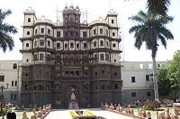
The Rajwada, royal palace of the Holkar dynasty, Indore.
The Holkar dynasty was a Hindu Maratha royal house in India. The Holkars ruled as Maratha Rajas, and later as Maharajas of Indore in Central India as an independent member of the Maratha Empire until 1818. Later, their kingdom became a princely state under the protectorate of British India.
The dynasty was founded with Malhar Rao, who joined the service of the Peshwas of the Maratha Empire in 1721, and quickly rose to the ranks of Subedar. The name of the dynasty was associated with the title of the ruler, who was known informally as Holkar Maharaja.
The Holkars claim descent from the royal family of Maharana's from Mewar. The sun in their emblem asserts their Suryavanshi lineage.
Malhar Rao Holkar (1694-1766), a Maratha chief serving Peshwa Baji Rao, established the dynasty's rule over Indore. In the 1720s, he led Maratha armies in Malwa region, and in 1733 was granted 9 parghanas in the vicinity of Indore by the Peshwa. The township of Indore had already existed as an independent principality established by Nandlal Mandloi of Kampel, Nandlal Mandloi was won by the Maratha force and allowed them to camp across the Khan (Kanh) River. In 1734, Malhar Rao established a camp later called Malharganj. In 1747, he started the construction of his royal palace, the Rajwada. By the time of his death, he ruled much of Malwa, and was acknowledged as one of the five virtually independent rulers of the Maratha Confederacy.
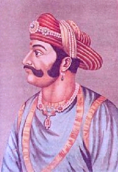
Malhar Rao Holkar
Malhar Rao Holkar (16 March 1693 – 20 May 1766) was a noble of the Maratha Empire, in present-day India. Malhar Rao is particularly known for being the first Maratha Subhedar of Malwa in Central India. He was the first prince from the Holkar family which ruled the Indore State. He was one of the early officers to help spread the Maratha rule to northern states and was given the state of Indore to rule by the Peshwas.
Malhar Rao Holkar was from the Dhangar community, a pastoral group that is not technically a part of the Maratha caste. He was born on 16 March 1693 in the village of Hol, near Jejuri, Pune District to Khanduji Holkar of Vir. Malhar Rao grew up in Taloda (Nandurbar District. Khandesh) at house of his maternal uncle, Bhojirajrao Bargal.
He married Gautama Bai (d. 29 September 1761), his uncle's daughter, in 1717. He also married Bana Bai Sahib Holkar, Dwarka Bai Sahib Holkar, Harku Bai Sahib Holkar, a Khanda Rani. This Khanda Rani status stems from the fact that she was a Rajput princess, he had sent his sword (khaaNdaa in Marathi) to represent him at the wedding, to maintain appearances.
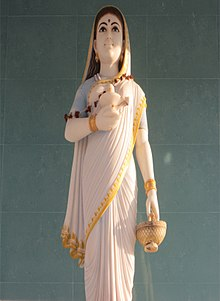
Her Highness Maharani Shrimant Akhand Soubhagyavati Ahilya Bai Sahiba | Maratha Holkar Queen of Indore
Maharani Ahilyabai Holkar (31 May 1725 – 13 August 1795) was the Holkar Queen of the Maratha Malwa kingdom, India. Rajmata Ahilyabai was born in the village of Chondi in Jamkhed, Ahmednagar, Maharashtra. She moved the capital to Maheshwar south of Indore on the Narmada River.
Ahilyabai's husband Khanderao Holkar was killed in the battle of Kumbher in 1754. Twelve years later, her father-in-law, Malhar Rao Holkar, died. A year after that she was crowned as the queen of the Malwa kingdom. She tried to protect her kingdom from plundering invaders. She personally led armies into battle. She appointed Tukojirao Holkar as the Chief of Army.
Rani Ahilyabai was a great pioneer and builder of Hindu temples. She built hundreds of temples and Dharmashalas throughout India.
Ahilyabai was born on 31 May 1725 in the village of Chaundi, in the present-day Ahmednagar district in Maharashtra. Her father, Mankoji Rao Shinde, was the Patil of the village. Women then did not go to school, but Ahilyabai's father taught her to read and write.
H. H. Maharajadhiraj Raj Rajeshwar Shrimant Yashwant Rao Holkar (Marathi: यशवंतराव होळकर) Bahadur, belonging to the subordinate feudatoryHolkar dynasty of the Maratha Empires was the subordinate feudatory [[raja] of the Maratha Empire. He was born on 3 December 1776. He was a gifted military leader and educated in accountancy as well as literate in Persian and Marathi. Yashwant Rao has been referred to by his fans as the "Napoleon of India".
In January 1799, Yashwant Rao Holkar was crowned King, as per Hindu Vedic rites and in May, 1799, he captured Ujjain. He started campaigning towards the north to expand his empire in that region. Yashwant Rao rebelled against the policies of the Peshwa Baji Rao II. In May 1802, he marched towards Pune the seat of the Peshwa. This gave rise to the Battle of Poona in which the Peshwa was defeated. After the defeat, the Peshwa fled from Pune. The Conquest of Pune left Yashwant Rao Holkar in charge of the administration and made some constructive steps to rebuild the Maratha Empire.
To keep the British at bay, Yashwant Rao Holkar played a great role in Indian history. He stood up against the British with his forces. Accompanied by Raghuji Bhonsale and Daulat Scindia, Maharaja Yashwantrao Holkar on 4 June 1803 decided to fight against the British force after their meeting at Bodwad. However, after a conspiracy against him, he decided not to be a part of the Maratha Confederacy. To curb the power of British, Maharaja Yashwant Rao Holkar wrote letters to different rulers and welcomed them to get united and fight against the British power. But, all his plans and appeal went in vain as all the kings had already signed treaties with the British. Afterwards, Yashwant Rao decided to fight against the British on his own. He defeated the British army, led by Colonel Fawcett, at Kunch, in Bundelkhand as well as attacked Delhi to free the Mughal Emperor Shah Alam II, who was imprisoned by the British and attacked the army of Colonel Ochterlony and Berne. This battle lasted for a week, but Yashwant Rao Holkar could not succeed because Colonel Ochterlony was supported by Lord Lake. Yashwant Rao Holkar won the title of "Maharajadhiraj Raj Rajeshwar Alija Bahadur" as a token of admiration by Mughal Emperor Shah Alam for his bravery.
Maharajadhiraj Raj Rajeshwar Sawai Shri Sir Yeshwant Rao II Holkar XIV Bahadur (6 September 1908 – 5 December 1961) was the Maharaja of Indore (Holkar State) belonging to the Holkar dynasty of the Marathas.
He was educated at the Cheam School, Charterhouse and Christ Church, Oxford. He succeeded his father Tukojirao Holkar III, who abdicated in his favor on February 26, 1926. He was installed on the throne on 11 March 1926 under a regency council. He was invested with full powers on 9 May 1930 at the age of 20. On January 1, 1935 he was made a Knight of the Order of the Indian Empire. He established a legislative council for Indore state and created a cabinet with a prime minister and three ministers. British Resident of Indore, K.S. Fitze, remarked on the great amount of time Maharaja Yeshwant spent abroad. Christie's art director Amin Jaffer takes this to exemplify maharaja culture's turn to the West.
On 11 August 1947 he signed the document of accession to India. Indore State was included in the Union of Madhya Bharat on May 28, 1948. He served as the second Rajpramukh of this new state until 31 October 1956. He then worked for the United Nations. He died in a Mumbai Hospital on 5 December 1961.
Scindia rulers of Gwalior (?–1947)
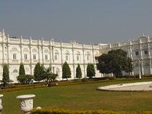
Jai Vilas Mahal, the current residence of the Scindia family.
Scindia (anglicized from Shinde and also spelled as Scindhia, Sindhia, Sindia) is a Hindu Maratha dynasty that ruled the Gwalior State. The Gwalior state was a part of the Maratha Confederacy in the 18th and 19th centuries, and a princely state of the colonial British government during the 19th and the 20th centuries. After India's independence in 1947, the members of the Scindia family became politicians.
The Scindia family of Kanherkhed originally served as shiledars (cavalrymen) under the Bahmani Sultanate. They later served the Peshwa (Prime minister of Chhtrapati Maharaj of Satara).
The Scindia dynasty was founded by Ranoji Scindia, who was the son of Jankojirao Scindia, the Deshmukh of Kanherkhed, a village in Satara District, Maharashtra. Peshwa Baji Rao's career saw the strengthening of the Maratha Empire. Ranoji was in charge of the Maratha conquests in Malwa in 1726. Ranoji established his capital at Ujjain in 1731. His successors included Jayajirao, Jyotibarao, Dattajirao, Jankojirao, Mahadji Shinde and Daulatrao Scindia. The Scindhia state of Gwalior became a major regional power in the latter half of the 18th century and figured prominently in the three Anglo-Maratha Wars. They held sway over many of the Rajput states, and conquered north India.
Ranoji Scindia (Marathi: राणोजी शिंदे) (died 19 July 1745, Shujalpur, Madhya Pradesh) also known as Ranoji Rao Scindia, was Shrimant Sardar in Peshwa Bajirao's General during 1720 to 1745. He was the founder of princely Gwalior State ruled by the Scindia dynasty of the Marathas.
Ranoji was Patil of Kanherkheda (Kannerkhera), a small place in Satara District, Maharashtra, east of Satara.
He started his career as Sardar under the leadership of Peshwa Baji Rao and later on established himself in Malwa, as the Marathas took it over from the Mughals. In his part of the region, around Gwalior, he was outside the effective power of the Maratha Empire.
During the invasion and conquest of Malwa in 1723, Ranoji served as one of the three most senior commanders under Peshwa Bajirao. He acquired a considerable territory and possessions as part of the Malwa settlement in 1731, and became Subedar of that province in 1736.
He established his seat at Ujjain in 1731, which remained the capital of the Scindias until 1810.
Ranoji died at Shujalpur, Malwa on 19 July 1745. He left three legitimate sons, Jayappaji Rao Scindia, Dattaji Rao Scindia and Jyotiba Rao Scindia, and two illegitimate, Tukoji Rao Scindia and Mahadaji Scindia. His sons played an important part in the subsequent history of the Maratha confederacy.
Jayappaji Rao Scindia (Sindhia, Shinde) (ca 1720 - 25 July 1755) also known as Jayappa Dada Sahib, was a Maratha general. He ruled Gwalior State in northern India from 1745 to 1755, succeeding his father Ranoji Rao Scindia who had founded it.
He was killed by two khokar and charan adherents of Maharaja Vijay Singh of Jodhpur before the walls of Nagaur in Rajasthan on 25 July 1755, after entanglement in the affairs of Jodhpur
He was succeeded by his son Jankoji Rao Scindia, killed at the Third Battle of Panipat in 1761.
Jayappa had four daughters who married in the knight families of Shinde includes Nimbalkar, Two in Ghorpades and last one in the house of Savant - Bhonsle family. Jankoji Shinde married to Kashibai Nimbalkar, sister of Vyankatrao and Janrao Nimbalkar of Phaltan, both Sardars of Nizam of Hyderabad hailing from Phaltan.
Dattaji Rao Shinde, also known as Dattaji Rao Scindia, (1723 – 10 January 1760) was the second son of Ranoji Rao Shinde and Mina Bai, alias Nimba Bai. His elder brother was Jayappaji and his younger brother was Jyotiba.
He was the elder half-brother of Mahadaji Shinde who later became the confederacy head of Gwalior, and Regent for his nephew Jankoji Rao Shinde I from 1755 until his death.
He was a Maratha military general who was given the command of Punjab during the Afghan-Maratha Conflicts over the regions of North India in 1758-59.
Dattaji was defeated and killed in battle with Afghans at Barari Ghat (Buradi ghat), on the plains of Rudhir, near Delhi on 10 January 1760. Dattaji was known to be a terrific warrior and brave hearted. In the battle field when he was severely wounded & pinned on ground, Najibjang Rohila asked "पाटिल, हमारे साथ लढेंगे " (Do you still want to fight Dattaji?) He replied to Najibjang Rohila before he beheaded him "हा बचेंगे तो और भी लडेंगे" (Yes, if I live I'll continue fighting).
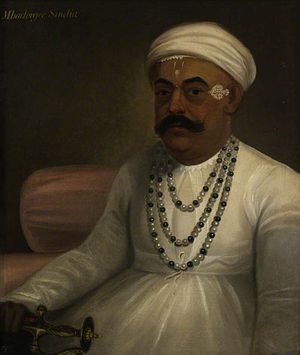
Maharaja (Ruler of Gwalior), Vakil-ul-Mutlaq (Regent of the Empire), Amir-ul-Umara(Head of the amirs)
Mahadaji Shinde (Marathi: महादजी शिंदे Mahādajī Śiṃdē) (Birth: 3 December 1730) & (Died: 12 February 1794) also spelled as Mahadji Scindia, was a Maratha ruler of the Maratha Empire is a state of Gwalior in central India. He was the fifth and the youngest son of Sardar Ranoji Rao Scindia.
Mahadaji was instrumental in resurrecting Maratha power in North India after the Third Battle of Panipat in 1761, and rose to become a trusted lieutenant of the Peshwa, leader of the Maratha Empire. Along with Madhavrao I and Nana Fadnavis, he was one of the three pillars of Maratha Resurrection. During his reign, Gwalior became the leading state in the Maratha Empire and one of the foremost military powers in India. After accompanying Shah Alam II in 1771 to Delhi, he restored the Mughals in Delhi, under the suzerainty of Marathas.
He annihilated the power of Jats of Mathura and during 1772-73 he destroyed the power of Pashtun Rohillas in Rohilkhand and captured Najibabad. His role during the First Anglo-Maratha War was greatest from the Maratha side since he humbled the British in Central India, single handed, which resulted in the Treaty of Salbai in 1782, where he mediated between the Peshwa and the British.
Shrimant Daulat Rao Sindhia (1779 – 21 March 1827) was the king (Maharaja) of Gwalior state in central India from 1794 until his death in 1827. His reign coincided with struggles for supremacy within the Maratha Confederacy, and with Maratha resistance to the consolidation of British hegemony over northern and central India in the early 19th century. Daulatrao played a significant role in the Second and Third Anglo-Maratha wars.
Daulatrao was a member of the Sindhia dynasty, and succeeded to the Gwalior throne on 12 February 1794 at the age of 15, upon the death of Maharaja Mahadji Shinde (Mahadji left no heir, and Daulatrao was a grandson of his elder brother Tukoji Rao Scindia, who was killed in the Third Battle of Panipat, 7 January 1761). Daulatrao was reecognised and formally installed by the Peshwa, 3 March 1794, and conferred the titles of Naib Vakil-i-Mutlaq (Vice Regent of the Empire), Amir-al-Umara (Head of the Amirs) from Emperor Shah Alam II on 10 May 1794.
Gwalior state was part of the Maratha Empire, which was founded by Shivaji in the 17th century. De facto control of the empire passed from Shivaji's successors to the hereditary chief ministers of the Empire, entitled peshwas and the empire expanded greatly in the 18th century at the expense of the Mughal Empire. As the empire expanded, commanders of the Maratha armies were given authority to collect chauth (tribute) in the conquered territories on behalf of the Peshwa. Daulatrao's ancestor Ranoji Sindhia had conquered territories in the Malwa and Gird regions from the Mughals, eventually establishing a state which was initially based at Ujjain, but was named after the strategic fortress of Gwalior. His wife Baiza Bai was a powerful and an intelligent lady of her time. She played an important role in the affairs of the Gwalior state.
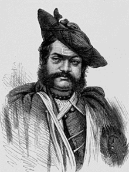
Aalijah Bahaddar, Rafi-Us-Shaan, Wala--Shukoh, Maharaja Scindia of Gwalior
Shrimant Jayajirao Scindia (19 January 1834– 20 June 1886) of the Scindia dynasty of the Marathas was the ruling Maharajah of Gwalior from 1843 to 1886 under the British rule.
Jayajirao was born as Bhagirath Shinde, son of Hanwant Rao on 19 January 1835. The erstwhile Maharaja of Gwalior, Jankojirao III, died in 1843 without leaving an heir leading his widow Tara Bai to adopt Bhagirath Rao. Bhagirath Shinde succeeded the Gwalior gaddi under the name of Jayajirao Sindhia on 22 February 1843. Mama Sahib, the maternal uncle of Jankojirao III, was chosen as regent.
Dada Khasgiwale, the comptroller of the Shinde household overthrew Mama Sahib as the regent nearly leading to a civil war. The British East India Company decided to interfere by withdrawing their Resident Colonel Alexander Speirs and demanding the surrender of Dada Khasgiwale was demanded. A British force under Sir Hugh Gough moved on Gwalior, and crossed the Chambal in December 1843. On 29 December followed the simultaneous battles of Panniar and Maharajpur, in which the Gwalior army was annihilated. Khasgiwale was arrested by the British and was sent to Benares Jail where he died in 1845.
Maharaja Sir Madho Rao Scindia of Gwalior GCSI GCVO GBE (20 October 1876 – 5 June 1925), was the 5th Maharaja of Gwalior belonging to the Scindian dynasty of the Marathas.
Madho Rao acceded to the throne in 1886 and ruled to his death in 1925. He was noted by the British Government as a progressive ruler of a princely state. He was twice married, but had only issue by his second marriage in 1913, one son and one daughter, to whom King George V and Queen Mary stood sponsors. He was succeeded by his only son, Maharajdhiraja Maharaja Sir George Jivaji Rao Scindia, 6th Maharaja Scindia of Gwalior. His daughter married, but died without an issue, in 1934.
The Maharaja of Gwalior is also known as the rejected suitor of Gayatri Devi's mother, the glamorous Princess Indira of Baroda (Indira Devi), who broke off her engagement (contracted between her parents and her fiance) by letter. The Maharaja then married Gajararaje from the Rane family of Goa. Later on Gajararaje's sisters were married into the notable Sardar families of Gwalior which included the Angre, Shitole & the Mahadik Families.
Maharaja Jivajirao Scindia (26 June 1916 – 16 July 1961) of the Scindia dynasty of the Marathas was the last reigning Maharaja of Gwalior state in central India, and the rajpramukh (appointed governor) of the erstwhile Madhya Bharat state of independent India. The Maharaja was and till date is very popular due to his interests in the toy trains and cars. He also assembled a toy train made up of silver in his palace dining table in Jai Vilas Palace, Gwalior to serve food, wines and chutneys to the guests.
Jivajirao was a scion of the Scindia family, descended from the Maratha general Ranojirao Scindia. Ranojirao was the head of the Maratha armies in Malwa during the first part of the 18th century, as the Maratha Empire was expanding rapidly at the expense of the Mughal Empire. Daulatrao Scindia shifted the capital from Ujjain to the new city of Lashkar, near the historic fortress-city of Gwalior. The Scindias accepted British suzerainty in 1818 at the conclusion of their benefits from them after they lost 3rd War Third Anglo-Maratha War. At 68,291 km², Gwalior was the largest state in the Central India Agency, and among the five largest princely states in all of India.
Jivajirao became Maharaja on 5 June 1925, succeeding his father Madho Rao Scindia upon his death. On 21 February 1941, he married Lekha Divyeshwari Devi, afterwards known as Vijaya Raje Scindia, who was descended from the powerful Rana dynasty of Nepal. They were the parents of five children, four daughters and a son, including:
Padma Raje, was married to HH Maharaja Kirit Dev Burman of Tripura. Died in Calcutta, circa 1965.
Usha Raje, is married to Nepalese Minister Pashupati Shamsher Jang Bahadur Rana, Kathmandu, Nepal. They are the parents of Devyani Rana.
Madhavrao Scindia (10 March 1945 – 30 September 2001), former union cabinet minister in India.
Vasundhara Raje, present chief minister of the Indian state of Rajasthan.
Yashodhara Raje, Bharatiya Janata Party (BJP) leader and Member of Parliament.
Maharaja Madhavrao Jivajirao Scindia (10 March 1945 – 30 September 2001) was an Indian politician and minister from the Indian National Congress. Earlier, in 1961, he had become the titular Maharaja of Gwalior being a descendant of the Scindia dynasty of the Marathas. However, in the 26th amendment to the Constitution of India promulgated in 1971, the Government of India abolished all official symbols of princely India, including titles, privileges, and remuneration (privy purses).
Scindia was born to the last ruling Maharaja of Gwalior, Jivajirao Scindia. He underwent his schooling in Scindia School, Gwalior and thereafter went for higher studies in Winchester College and at New College, Oxford.
On his return from the UK, Scindia followed the political tradition set by his mother Vijaya Raje Scindia by joining politics. He was elected to the Lok Sabha (the lower house of the Indian parliament) in 1971 from Gwalior. After Indian independence in 1947, the former princely state of Gwalior acceded to the Union of India and became part of the new state of Madhya Bharat, which in 1956 was merged into Madhya Pradesh.
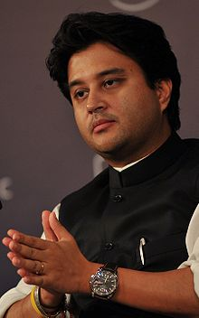
Jyotiraditya Madhavrao Scindia
Jyotiraditya Madhavrao Scindia (born 1 January 1971) is an Indian politician. He is related to the Scindia family that once ruled in Gwalior and is a Member of Parliament, representing the Guna constituency in the state of Madhya Pradesh. He is a member of the Indian National Congress political party and was a 'Minister of State with independent charge' (i.e. a junior Minister in the Central Government of India who has independent charge of his ministry) of Power in the cabinet of prime minister Manmohan Singh from October 2012 until May 2014.
Scindia was born on 1 January 1971 in Bombay. His parents were Madhavrao Scindia and Madhavi Raje Scindia. He studied at Campion School in the city and at The Doon School, Dehradun. He studied Economics at Harvard University and graduated in 1993. In 2001, he received an M.B.A. from the Stanford Graduate School of Business.
Scindia is a grandson of Jivajirao Scindia, the last maharaja of the princely state of Gwalior, who then joined the Dominion of India in 1947, but, like other princes, was allowed to hold on to the titles and privileges of princely India, including an annual remuneration, called the privy purse. Upon his death in 1961, his son, Madhavrao Scindia (Jyotiraditya's father) became the titular Maharajah of Gwalior. However, he was to be the last, as, in the 26th amendment to the Constitution of India promulgated in 1971, the Government of India abolished all official symbols of princely India, including titles, privileges, and privy purses. He is married to Priyadarshini Raje Scindia of the Gaekwad family of Baroda.
Gaekwad rulers of Baroda (Vadodara) (1721–1947)
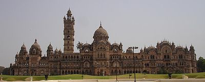
Laxmi Vilas Palace of the Gaekwad dynasty.
The Gaekwad or Gaikwad (once rendered as Guicowar, also given (incorrectly) as Gaekwar) (Marathi: गायकवाड Gāyǎkǎvāḍǎ) are a Hindu Maratha clan. A dynasty belonging to this clan ruled the princely state of Baroda in western India from the early 18th century until 1947. The ruling prince was known as the Maharaja Gaekwad of Baroda. With the city of Baroda (Vadodara) as its capital, during the British Raj its relations with the British were managed by the Baroda Residency. It was one of the largest and wealthiest princely states existing alongside British India, with wealth coming from the lucrative cotton business as well as rice, wheat and sugar production.
The Gaekwad rule of Baroda began when the Maratha general Pilaji Rao Gaekwad conquered the city from the Mughal Empire in 1721. The Gaekwads were granted the city as a fief by Peshwa Bajirao I , the de facto leader of the Maratha empire.
In their early years, the Gaekwads served as subordinates of the Dabhade family, who were the Maratha chiefs of Gujarat and holders of the senapati (commander-in-chief) title. When Umabai Dabhade joined Tarabai's rebellion against Peshwa Balaji Baji Rao, Pilaji's son Damaji Rao Gaekwad commanded the Dabhade force. He was defeated, and remained under Peshwa's arrest from May 1751 to March 1752. In 1752, he was released after agreeing to abandon the Dabhades and accept the Peshwa's suzerainty. In return, Damaji was made the Maratha chief of Gujarat, and the Peshwa helped him expel the Mughals from Gujarat.
Pilajirao Gaekwad (d. 14 May 1732) was a Maratha general. He is considered to be the founder of the Gaekwad dynasty of the Maratha Empire, who became Maharaja of Baroda.
Pilaji was the eldest son of Jhingojirao Kerojirao Gaekwad. He was adopted by his uncle Damaji I Gaekwad (died 1721), who had been given the hereditary title of Shamsher Bahadur by Chhattrapati Shahu for bravery in a battle.
The Gaekwads were originally lieutenants of the Dabhade family, the Maratha chiefs of Gujarat and holders of the senapati (commander-in-chief) title. Pilaji was a mutalik (deputy) of Trimbak Rao Dabhade. When Trimbak Rao was killed for rebelling against the Maratha Peshwa in 1731, his minor son Yashwant Rao Dabhade was appointed as the senapati. The Peshwa allowed the Dabhades to retain their territories in Gujarat, on the condition that they would remit half of their revenues to the Maratha Chhatrapati's treasury. Pilaji continued to serve Yashwant Rao, and was granted the title Sena Khas Khel by the Peshwa in addition to Shamsher Bahadur. Since Yashwant Rao was a minor, Pilaji was responsible for collecting the revenues from Gujarat.
Pilaji was assassinated on 14 May 1732 in Dakor by emissaries of Abhay Singh, the Mughal governor of Gujarat. He was cremated in Savli village, which lies on the Baroda-Dakor road. He was succeeded by his son Damaji Rao Gaekwad (also known as Damaji II). Damaji fought against Peshwa Balaji Baji Rao when the Dabhades rebelled against the Peshwa. He was defeated and arrested, but later, the Peshwa appointed him as the Marath chief of Gujarat, replacing the Dabhades. Pilaji's descendants thus ruled Gujarat in form of the Gaekwad dynasty].
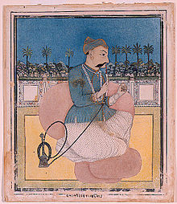
Damaji Rao Gaekwad (1732–1768)
Damaji Rao Gaekwad was the second Maharaja of Baroda reigning from 1732 to 1768 until his death.
Damaji, also known as Damaji II, was the third son of Pilaji Rao Gaekwad. His father Pilaji was an adopted son of Damaji I, who had received the hereditary title Shamsher Bahadur from Chhattrapati Shahu. Pilaji himself had received another hereditary title, Sena Khas Khel.
The Gaekwads were originally lieutenants of the Dabhade family, the Maratha chiefs of Gujarat and holders of the senapati (commander-in-chief) title. In 1731, Trimbak Rao Dabhade was killed for rebelling against Peshwa Baji Rao. The Peshwa allowed the Dabhades to retain their title and territories in Gujarat, on the condition that they would remit half of their revenues to the Maratha Chhatrapati's treasury. His minor brother Yashwant Rao Dabhade was appointed as the senapati, with his mother Umabai Dabhade exercising the executive powers. Pilaji, and after his death in 1732, Damaji held the actual military power as Yashwant Rao was a minor. Even as he grew up, Yashwant Rao got addicted to alcohol and opium, and Damaji gradually increased his power during this time.
Umabai initially pretended reconciliation with Peshwa Bajirao, but maintained a grudge against him for killing her son. After Bajirao's death, she pleaded with the new Peshwa Balaji Rao, to release the Dabhades from the revenue-sharing covenant. When he refused to do so, she sided with Tarabai in a rebellion against the Peshwa. When Balaji Baji Rao left for the Mughal frontier, Tarabai imprisoned Chhatrapati Rajaram II and Umabai dispatched Damaji Gaekwad with a 15,000-strong force to support her.
Manaji Rao Gaekwad was the fifth Maharaja of Baroda State reigning from 1792 to 1793 for a brief period.
He was the fifth son of Damaji Rao Gaekwad. Before coming to Maharaja, he also served as a regent for Baroda State from 1779 to 1792 under the Sayaji Rao I Gaekwar.
After his death he was succeeded to Govind Rao Gaekwar "Mama Sahib" as the new Maharaja of Baroda.
Anand Rao Gaekwad was the seventh Maharaja of Baroda State reigning from 1800 to 1819 with the regents of Fateh Singh II and Sayaji Rao Gaekwad. He became Maharaja of Baroda after the death of Govind Rao Gaekwad II.
He died in 1819 and succeeded by Sayaji Rao II Gaekwad as the new ruler of Baroda.
Ganpat Rao Gaekwad was the ninth Maharaja of Baroda State reigning from 1847 to 1856. He was the eldest son of Sayaji Rao Gaekwad II and became Maharaja of Baroda after the death of his father.
He died in 1856 and after his death, he was succeeded by his second younger brother Khanderao II Gaekwad.
Shrimant Maharaja Sir Khanderao II Gaekwad, Sena Khas Khel Shamsher Bahadur, GCSI (1828–1870) was the Maharaja of Baroda State from 1856 to 1870.
He was the third son of Shrimant Rajashri Maharaja Sayajirao Gaekwad II. He succeeded to the throne on the death of his eldest brother and the king Maharaja Ganpatrao Gaekwad on 19 November 1856 and reigned till his death on 28 November 1870.[2] He was knighted as GCSI in 1861. He died suddenly in 1870 and was succeeded by his brother Malharrao Gaekwad but Malharrao was later deposed by British and widow of Kanderao II, Maharani Jamnabai Sahib Gaekwad, later adopted a boy from the related family, who became the next ruler of Baroda State - Sayajirao Gaekwad III.
During his reign the Baroda State started the narrow gauge railway, known as Gaekwar's Baroda State Railway. It was started in the year 1862.
Malhar Rao Gaekwad was the eleventh Maharaja of Baroda State reigning from 1870 to 1875. He was the sixth son of Sayaji Rao Gaekwad II and became Maharaja of Baroda after the death of his elder brother, Khanderao II Gaekwad.
Malhar Rao spent money liberally, nearly emptying the Baroda coffers (he commissioned a pair of solid gold cannon and a carpet of pearls, among other expenses) and soon reports reached the Resident of Malharrao's gross tyranny and cruelty. Malharrao further attempted to cover up his deeds by poisoning the British Resident at Baroda, Robert Phayre, brother of Lieutenant General Arthur Purves Phayre with a compound of arsenic. By order of the Secretary of State for India, Lord Salisbury, Malharrao was deposed on 10 April 1875 and exiled to Madras, where he died in obscurity in 1882.
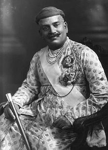
Farzand-i-Khas-i-Daulat-i-Inglishia, Shrimant Maharaja Sir , Sena Khas Khel Shamsher Bahadur Maharaja Gaekwad of Baroda GCSI, GCIE, KIH | Sayajirao III Gaekwad, Maharaja of Baroda, 1919
Sir Sayajirao Gaekwad III (born Shrimant Gopalrao Gaekwad, 11 March 1863 – 6 February 1939) was the Maharaja of Baroda State from 1875 to 1939, and is notably remembered for reforming much of his state during his rule. He belonged to the royal Gaekwad dynasty of the Marathas which ruled parts of present-day Gujarat.
Sayajirao was born in a Maratha family at Kavlana in Malegaon Tahsil Dist. Nashik as Shrimant Gopalrao Gaekwad, second son of Meherban Shrimant Kashirao Bhikajirao Dada Sahib Gaekwad (1832–1877) and Shrimant Akhand Soubhagyavati Ummabai Sahib. His branch of the Gaekwad dynasty was a cadet branch descended from a morganatic marriage of the first Raja of Baroda and so was not expected to succeed to the throne.
Following the death of Sir Khanderao Gaekwad (1828–1870), the popular Maharaja of Baroda, in 1870, it was expected that his brother, Malharrao (1831–1882), would succeed him. However, Malharrao had already proven himself to be of the vilest character and had been imprisoned earlier for conspiring to assassinate Khanderao. As Khanderao's widow, Maharani Jamnabai (1853–1898) was already pregnant with a posthumous child, the succession was delayed until the gender of the child could be proven. The child proved to be a daughter, and so upon her birth on 5 July 1871, Malharrao ascended the throne.
Malharrao spent money liberally, nearly emptying the Baroda coffers (he commissioned a pair of solid gold cannon and a carpet of pearls, among other expenses) and soon reports reached the Resident of Malharrao's gross tyranny and cruelty. Malharrao further attempted to cover up his deeds by poisoning the Resident with a compound of arsenic. By order of the Secretary of State for India, Lord Salisbury, Malharrao was deposed on 10 April 1875 and exiled to Madras, where he died in obscurity in 1882.
With the throne of Baroda now vacant, Maharani Jamnabai called on the heads of the extended branches of the dynasty to come to Baroda and present themselves and their sons in order to decide upon a successor.
Kashirao and his three sons, Anandrao (1857–1917), Gopalrao (1863–1938) and Sampatrao (1865–1934) walked to Baroda from Kavlana -a distance of some 600 kilometers- to present themselves to Jamnabai. It is reported that when each son was asked the purported reason for presenting themselves at Baroda, Gopalrao unhesitatingly stated: "I have come here to rule".
Shrimant Maharaja Sir Pratapsinhrao Gaekwad (29 June 1908 – 19 July 1968), belonging to the Gaekwad dynasty of the Marathas, was the last ruling Maharaja of Baroda. He succeeded to the throne upon the death of his grandfather Maharaja Sayajirao Gaekwad III in 1939. In 1947, India became independent of Britain, and by 1949, Baroda had been merged into the Union of India.
Pratapsinh retained his title and certain privileges, but he was "deposed" by the government of India in 1951 for irresponsible behavior. He then retired to Europe with his second wife, a woman of notorious reputation, and settled in Monaco. He died in 1968 and was succeeded by his eldest son, Fatehsinghrao Gaekwad, who had been officiating as Maharaja since 1951.
He founded the Maharaja Sayajirao University of Baroda in 1949 as per the wishes of his grandfather, Sayajirao, and settled the "Sir Sayajirao Diamond Jubilee and Memorial Trust" which still exists, and caters to the educational and other needs of the people of the former Baroda State.
He was a hedonistic spend thrift who had a tendency to squander his state's money. He had inherited an estate that was conservatively valued in excess of $US300 million (in 1939 dollars), which included an assortment of jewellery estimated value of $US15 million. He went on a 1948 six-week tour of the United States, where he and his second wife were welcomed into the salons of high society. They spent a reported $US10 million during their visit to America. The Indian Union did an audit of Baroda's treasury after the widely read news reports. The audit concluded that the Gaekwad had taken several inappropriate interest free loans from Baroda's treasury. He agreed to pay the money back in yearly installments from his income of US8 million.
The Nawabs of Bengal (full title, the Nawab Nizam of Bengal and Orissa) were the rulers of the then provinces of Bengal and Orissa. Between 1717 and 1765, they served as the rulers of the subah (or province) of Bengal. However, they were only nominally subordinate to the Mughal Empire. Siraj ud-Daulah, the last independent Nawab of Bengal was betrayed in the Battle of Plassey by Mir Jafar. He lost to the British, who took over the charge of Bengal in 1757, installed Mir Jafar on the Masnad (throne) and established itself to a political power in Bengal.
In 1765 the system of Dual Government was established, in which the Nawabs ruled on behalf of the British and were mere puppets to the British. In 1772 the system was abolished and Bengal was brought under direct control of the British. In 1793, when the Nizamat (governorship) of the Nawab was also taken away from them, they remained as the mere pensioners of the British East India Company. The last Nawab of Bengal, Mansur Ali Khan abdicated on 1 November 1880 in favour of his eldest son, Hassan Ali Mirza.
Nawabs of Murshidabad succeeded the Nawabs of Bengal as Nawab Bahadur of Murshidabad, following Mansur Ali Khan's abdication They got the title changed as the title of the Nawab of Bengal was abolished in 1880. They had little or no say in the share of the revenue collected and were ceased to use any force. After Indian Independence in 1947 it was declared that the princely states must accede to either India or Pakistan (East/West Pakistan). Murshidabad (the capital city) became a part of East Pakistan (now Bangladesh) for two days, as it had a Muslim majority. It became a part of India on 17 August 1947, following which the Pakistani flag was brought down from the Hazarduari Palace and the Indian tricolour was hoisted atop it. After merging with India, they had no power as the Government of India took over all the princely states in India. The house of the Nawabs appeared to have come to end in 1969 with Waris Ali Mirza being the last reigning Nawab and with no clear succession. Although he left three sons and three daughters there was no clear successor to the title after his death because he disinherited one and the others disputed his will.
Eventually, in August 2014, the Supreme Court of India declared Syed Mohammed Abbas Ali Mirza (born 1942) to be the heir to the erstwhile Nawab Bahadur of Murshidabad and lawful heir to the Nawab's property and office which had been in abeyance since the death of Abbas Ali Mirza's maternal uncle Waris Ali Mirza (the third Nawab Bahadur of Murshidabad) in 1969. However, it is to be noted that after Indian independence in 1947, followed by the promulgation of the Indian Constitution on 26 January 1950, which marked the transformation of the Dominion of India into the Republic of India, the Article 18 of the Indian Constitution abolished all titles, except those given by the Government of India to those who have made their mark in military and academic fields. However, under the policy of Privy Purse nobles were allowed to enjoy certain privileges and keep their titles. But this policy was abolished in 1971 by the twenty-sixth Amendment of the Constitution of India. Thus the title of the "Nawab Bahadur of Murshidabad" was officially, constitutionally and legally abolished in 1971.
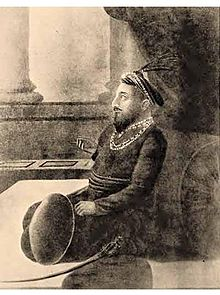
Nawab Nazim of Bengal, Bihar and Odisha Zafar Khan (Bengali: জাফর খান Persian:ظفر خان) | Murshid Quli | Nawab of Murshidabad
Murshid Quli Khan, also known as Mohammad Hadi (c. 1660 – 30 June 1727), was the first Nawab of Bengal, serving from 1717 to 1727.
Born a Hindu Brahmin in the Deccan Plateau in c. 1670, Quli Khan was bought by Mughal noble Haji Shafi. After Shafi's death, he worked under the Divan of Vidarbha, during which time he piqued the attention of the then-emperor Aurangzeb, who sent him to Bengal as the divan c. 1700. However, he entered into a bloody conflict with the province's subahdar, Azim-us-Shan. After Aurangzeb's death in 1707, he was transferred to the Deccan Plateau by Azim-us-Shan's father the Mughal Emperor Bahadur Shah I. However, he was brought back as deputy subahdar in 1710. In 1717, he was appointed as the Nawab Nazim of Murshidabad by Farrukhsiyar. During his reign, he changed the jagirdari system (land management) to the mal jasmani, which would later transform into the zamindari system. He also continued sending revenues from the state to the Mughal Empire. He built the Katra Masjid mosque at Murshidabad where he was buried under the steps of the staircase after his death on 30 June 1727. He was succeeded by his grandson Sarfaraz Khan.
According to Sir Jadunath Sarkar, Quli Khan was originally a Hindu Brahmin born in Deccan in c. 1670. The book Ma'asir al-umara supports this statement. At approximately ten years old, he was sold to a Persian named Haji Shafi who circumcised him, and raised him with the name Mohammad Hadi. In c. 1690, Shafi left his position in the Mughal court and returned to Persia accompanied by Quli Khan. About five years after Shafi's death, he returned to India and worked under Abdullah Khurasani, the Diwan of Vidarbha in the Mughal Empire. Due to his expertise in the matter, he was noticed by Mughal Emperor Aurangzeb.
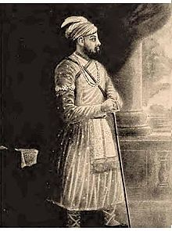
Nawab Nazim of Bengal, Bihar and Odisha (Nawab of Bengal) | Mīrzā Royal | Motamul ul-Mulk (Guardian of the country) | Shuja ud-Daula (Hero of the state) | Asad Jang (Lion in War)
Shuja-ud-Din Muhammad Khan was the Nawab of Bengal. He married Zainab un-nisa Begum and Azmat un-nisa Begum, the daughters of Murshid Quli Khan by Nasiri Banu Begum. Shuja-ud-Din's third wife was Durdana Begum Sahiba. After the death of his father-in-law on 30 June 1727, he ascended to the Masnad (throne) of the Nawab.
Born at Burhanpur, Deccan, as Mirza Shuja ud-din Muhammad Khan (Mirza Deccani), son of Nawab Jan Muhammad Khan (Mirza Nur ud-din Muhammad), he was appointed Subahdar (Provincial governor) of Odisha in 1719. He was also appointed as the Subahdar of Bengal in July 1727 and Subahdar of Bihar in 1731. The title of Subahdar was bestowed by the Mughal Emperor of Delhi.
In absence of a direct heir, Murshid Quli Khan nominated his grandson Sarfaraz Khan to the Masnad. Murshid Quli Khan died in 1727 and Sarfaraz Khan was to ascend to the Masnad.
Then, Shuja ud-din was the Subahdar of Odisha with Alivardi Khan as his Naib (Deputy). Murshid Quli was not generally pleased of the inclusive and people friendly policies of Shuja ud-Din. Accordingly, when Sarfaraz Khan was announced heir, Shuja ud-Din was disturbed at the idea of being in the employment of his son. Alivardi Khan and his brother Haji Ahmed convinced Shuja ud-Din that he himself was more suitable for this position. With support from Alivardi and Haji he made preparations for a take over. He received support from Mughal Emperor, Muhammad Shah in Delhi, who was ready to help him. Shuja ud-Din marched at the head of a large army towards Murshidabad, the capital of the Nawabs of Bengal. To avoid a conflict in the family, the dowager Begum of Murshid Quli Khan intervened; and her son-in-law Shuja-ud-Din ascended to the Masnad of Bengal after Sarfaraz Kahn abidicated in favour of his father. By August 1727, Shuja-ud-Din was firmly established and recognised as the second Nawab of Bengal.
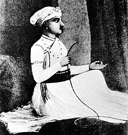
Mīrzā Royal | Nawab Nazim of Bengal, Bihar and Orissa (Nawab of Bengal) | Motamul-ul-mulk (Guardian of the country) | Ala ud-Daulah (Promoter of the state) | Haidar Jang (Lion in War)
Sarfaraz Khan, born Mirza Asadullah (Bengali: সরফরাজ খান, Persian: سرفراز خان; d. 29 April 1740) was a Nawab of Bengal. Sarfaraz Khan's maternal grandfather, Nawab Murshid Quli Khan of Bengal (Bengal, Bihar and Orissa) nominated him as the direct heir to him as there was no direct heir. After Murshid Quli's death in 1727, Sarfaraz ascended to the Masnad (throne) of the Nawab. Sarfaraz's father, Shuja-ud-Din Muhammad Khan, then the Subahdar of Orissa, getting to know it arrive at Murshidabad, the capital of the Nawabs of Bengal with a huge army. To avoid a conflict in the family the dowager Begum of the Nawab asked Shuja-ud-Din to ascend to the Masnad after Sarfaraz abdicated in favour of his father. However, circumstances led Shuja-ud-Din to nominate Sarfaraz as his heir and after Shuja-us-Din's death in 1739, Sarfaraz Khan again ascended to the Masnad as the Nawab of Bengal (Bengal, Bihar and Orissa).
Born Mirza Asadullah, sometime after 1700, Sarfaraz Khan was the son of Shuja-ud-Din Muhammad Khan by his wife Zainab-un-nisa Begum (alias: Azim-un-nisa Begum; d/o Nawab Murshid Quli Khan of Bengal). Sarfaraz Khan was the grandson of Nawab Murshid Quli Khan of Bengal who died on 30 June 1727. In absence of a direct heir, Murshid Khan nominated Sarfaraz Khan to succeed him. Thus, Sarfaraz Khan ascended to the Masnad (throne) as the Nawab in 1727 before abdicating in favour of his father Shuja-ud-Din Muhammad Khan in the same year. On hearing of Sarfaraz's accession to the Masnad, Shuja-ud-Din Muhammad Khan, the Diwan Nazim of Orissa, marched at the head of a large army towards Murshidabad. To avoid a conflict in the family, the dowager Begum of Murshid Quli Khan intervened; and her son-in-law Shuja-ud-Din ascended to the Masnad of Bengal. By August 1727, Shuja-ud-Din was firmly established and recognised as the second Nawab of Bengal.
But as fate had, circumstances lead Shuja-ud-Din to nominate his son, Sarfaraz again as his heir and successor and after Shuja-ud-Din died on 26 August 1739 Sarfaraz Khan again ascended to the Masnad as the Nawab of Bengal on 13 March 1739 with the title of Ala-ud-Din Haidar Jang
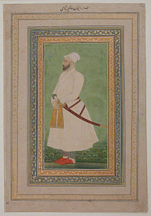
Nawab Nazim of Bengal, Bihar and Orissa (Nawab of Bengal) | Shuja ul-Mulk (Hero of the country) | Hashim ud-Daula (Sword of the state) | Mahabat Jang (Horror in War)
Alivardi Khan (Bengali: আলীবর্দী খান, 1671 – 9 April 1756) was the Nawab of Bengal during 1740–1756. He toppled the Nasiri Dynasty of the Nawabs and took powers of the Nawab. He is also one of the few Mughal-era leaders known for his victory during the Battle of Burdwan against the Maratha Empire.
Alivardi Khan's father was Shah Quli Khan (Mirza Muhammad Madani) and his mother was the daughter of Nawab Aqil Khan Afshar (Mir Muhammad Askari). Alivardi's birth name was Mirza Muhammad Ali. He was a Muslim. His father was an Arab and an employee of Azam Shah, the son of Mughal Emperor Aurangzeb. Azam Shah also employed the sons of Mirza Muhammad. But after the death of Azam Shah, the family fell into poverty. His two sons Muhammad Ali and Mirza Ahmed managed to find employment under the Subahdar (Provincial governor) of Orissa, Shuja-ud-Din Muhammad Khan. After Shuja-ud-Din was promoted to the post of the Nawab of Bengal, the two brothers' future prospects widened.
In 1728, Shuja-ud-Din promoted Muhammad Ali to Faujdar (General) of Rajmahal and entitled him as Alivardi Khan. In 1733, he was assigned as the Naib Nazim (Deputy Subahdar) of Bihar. A year later he was titled Shuja ul-Mulk (Hero of the country), Hassemm ud-Daula (Sword of the state) and Mahabat Jang (Horror in War) and the rank of Paach Hazari Mansabdar (The rank holder of 5000) by Nawab Shuja ud-Din and returned to Azimabad.
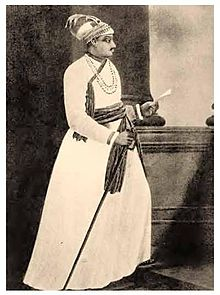
Mansur-ul-Mulk (Victory of the Country) | Siraj ud-Daulah (Light of the State) | Hybut Jang (Horror in War)
Mirza Muhammad Siraj ud-Daulah (Persian: مرزا محمد سراج الدولہ, Bengali: মির্জা মুহম্মদ সিরাজউদ্দৌলা; 1733 – 2 July 1757) more commonly known as Siraj ud-Daulah, was the last independent Nawab of Bengal. The end of his reign marked the start of British East India Company rule over Bengal and later almost all of South Asia.
Siraj succeeded his maternal grandfather, Alivardi Khan as the Nawab of Bengal in April 1756 at the age of 23. Betrayed by Mir Jafar, then commander of Nawab's army, Siraj lost the Battle of Plassey on 23 June 1757. The forces of the East India Company under Robert Clive invaded and the administration of Bengal fell into the hands of the Company.
Siraj was born to Zain ud-Din Ahmed Khan and Amina Begum in 1733, and soon after his birth, Siraj's maternal grandfather, was appointed the Deputy Governor of Bihar. Accordingly, he was raised at the Nawab's palace with all necessary education and training suitable for a future Nawab. Young Siraj also accompanied Alivardi on his military ventures against the Marathas in 1746. Siraj was regarded as the "fortune child" of the family. Since birth Siraj, had special affection from his grandfather. In May 1752, Alivardi Khan declared Siraj as his successor. Alivardi Khan's died on 10 April 1756 at the age of eighty.
Mir Jafar Ali Khan Bahadur (Bengali: মীর জাফর আলী খান বাহাদুর; c. 1691 — 5 February 1765) was the first Najafi Nawab of Bengal with support from the British East India Company. He was the second son of Sayyid Ahmad Najafi. His rule is widely considered the start of British imperialism in India and was a key step in the eventual British domination of vast areas of the subcontinent. Siraj ud-Daulah, the previous Nawab of Bengal along with his army were defeated and killed in the Battle of Plassey by the British due to the betrayal of the commander of Siraj ud-Daulah′s army, Mir Jafar, who betrayed Siraj ud-Daulah to become the next Nawab. Thus after helping the British defeat Siraj ud-Daulah he became the new Nawab of Bengal in 1757 with military support from the British East India Company as a reward for his betrayal. However, Jafar failed to satisfy constant British demands for money. In 1758, Robert Clive discovered that through his agent Khoja Wajid, Jafar had made a treaty with the Dutch at Chinsurah. Dutch ships of war were also seen in the River Hooghly. Circumstances led to the Battle of Chinsurah. British company official Henry Vansittart proposed that since Jafar was unable to cope with the difficulties, Mir Qasim, Jafar's son-in-law, should act as Deputy Subahdar. In October 1760, the company forced him to abdicate in favor of Qasim. However, Qasim's independent spirit and plan to force the East India company out of his dominion led to his overthrow, and Jafar was restored as the Nawab in 1763 with the support of the company. Mir Qasim however refused to accept this and went to war against the company. Jafar ruled until his death on 17 January 1765 and lies buried at the Jafarganj Cemetery in Murshidabad, West Bengal, India.
In 1747 the Marathas led by Raghoji I Bhonsle, began to raid, pillage and annex the territories of the Alivardi Khan, the Nawab of Bengal. During the Maratha invasion of Odisha, its subedar Mir Jafar and Ataullah the faujdar of Rajmahal completely withdrew all forces until the arrival of Alivardi Khan and the Mughal Army at the Battle of Burdwan where Raghoji I Bhonsle and his Maratha forces were completely routed. The enraged Alivardi Khan then dismissed the shamed Mir Jafar.
Mir Jafar pretended loyalty to Alivardi Khan's successor Siraj Ud Daulah, but betrayed him to the British in the battle of Palashi. After Siraj Ud Daulah’s defeat and subsequent execution, Jafar achieved his long-pursued dream of gaining the throne, and was propped up by the British East India company as puppet Nawab. Jafar paid Rs. 17,700,000 as compensation for the attack on Calcutta to the company and traders of the city. In addition, he gave bribes to the officials of the company. Clive, for example received over two million rupees, Watts over one million Soon, however, he realized that company's expectations were boundless and tried to wriggle out from under them; this time with the help of the Dutch. However, the British defeated the Dutch at the Battle of Chinsurah in November 1759 and retaliated by forcing him to abdicate in favor of his son-in-law Mir Qasim. However, Qasim proved to be both able and independent, strongly condemned the interference of East India company in the governing of his domain. Mir Qasim formed an alliance to force the British East India company out of East India. The Company soon went to war with him and his allies. The Battle of Buxar was fought on 22 October 1764 between the forces under the command of the British East India Company led by Hector Munro and the combined army of Mir Qasim, the Nawab of Bengal:suja ud-dullah the Nawab of Awadh and the Mughal Emperor Shah Alam II. With the defeat in Buxar, Mir Qasim was eventually overthrown. Mir Jafar managed to regain the good graces of the British; he was again installed Nawab in 1764 and held the position until his death in 1765.
Mir Qasim (Bengali: মীর কাসেম; 8 May 1777) was the Nawab of Bengal from 1760 to 1763. He was installed as Nawab with the support of the British East India Company, replacing Mir Jafar, his father-in-law, who had himself been supported earlier by the East India Company after his role in the Battle of Plassey. However, Mir Jafar was in conflict with the East India company over too many demands and tried to tie up with the Dutch East India Company. The British eventually overran the Dutch forces at Chinsura and played a major role in replacing Mir Jafar with Mir Qasim. Qasim later fell out with the British and fought them at the Battle of Buxar. His defeat has been suggested as the last real chance of preventing a gradual British expansion in large parts of North East India following Britain's victory in the Seven Years War.
Upon ascending the throne, Mir Qasim repaid the British with lavish gifts. To please the British, Mir Qasim robbed everybody, confiscated lands, reduced Mir Jafar's purse and depleted the treasury. However, he was soon tired of British interference and endless avarice and like Mir Jafar before him, yearned to break free of the British influence. He shifted his capital from Murshidabad to Munger in present-day Bihar where he raised independent army, financing them by streamlining tax collection.
He opposed the British East India Company's position that their imperial Mughal licence (dastak) meant that they could trade without paying taxes (other local merchants with dastaks were required to pay up to 40% of their revenue as tax). Frustrated at the British refusal to pay these taxes, Mir Qasim abolished taxes on the local traders as well. This upset the advantage that the British traders had been enjoying so far, and hostilities built up. Mir Qasim overran the Company offices in Patna in 1763, killing several Europeans including the Resident. Mir Qasim allied with Shuja-ud-Daula of Avadh and Shah Alam II, the itinerant Mughal emperor, who were also threatened by the British. However, their combined forces were defeated in the Battle of Buxar in 1764.
Mir Jafar Ali Khan Bahadur (Bengali: মীর জাফর আলী খান বাহাদুর; c. 1691 — 5 February 1765) was the first Najafi Nawab of Bengal with support from the British East India Company. He was the second son of Sayyid Ahmad Najafi. His rule is widely considered the start of British imperialism in India and was a key step in the eventual British domination of vast areas of the subcontinent. Siraj ud-Daulah, the previous Nawab of Bengal along with his army were defeated and killed in the Battle of Plassey by the British due to the betrayal of the commander of Siraj ud-Daulah′s army, Mir Jafar, who betrayed Siraj ud-Daulah to become the next Nawab. Thus after helping the British defeat Siraj ud-Daulah he became the new Nawab of Bengal in 1757 with military support from the British East India Company as a reward for his betrayal. However, Jafar failed to satisfy constant British demands for money. In 1758, Robert Clive discovered that through his agent Khoja Wajid, Jafar had made a treaty with the Dutch at Chinsurah. Dutch ships of war were also seen in the River Hooghly. Circumstances led to the Battle of Chinsurah. British company official Henry Vansittart proposed that since Jafar was unable to cope with the difficulties, Mir Qasim, Jafar's son-in-law, should act as Deputy Subahdar. In October 1760, the company forced him to abdicate in favor of Qasim. However, Qasim's independent spirit and plan to force the East India company out of his dominion led to his overthrow, and Jafar was restored as the Nawab in 1763 with the support of the company. Mir Qasim however refused to accept this and went to war against the company. Jafar ruled until his death on 17 January 1765 and lies buried at the Jafarganj Cemetery in Murshidabad, West Bengal, India.
In 1747 the Marathas led by Raghoji I Bhonsle, began to raid, pillage and annex the territories of the Alivardi Khan, the Nawab of Bengal. During the Maratha invasion of Odisha, its subedar Mir Jafar and Ataullah the faujdar of Rajmahal completely withdrew all forces until the arrival of Alivardi Khan and the Mughal Army at the Battle of Burdwan where Raghoji I Bhonsle and his Maratha forces were completely routed. The enraged Alivardi Khan then dismissed the shamed Mir Jafar.
Mir Jafar pretended loyalty to Alivardi Khan's successor Siraj Ud Daulah, but betrayed him to the British in the battle of Palashi. After Siraj Ud Daulah’s defeat and subsequent execution, Jafar achieved his long-pursued dream of gaining the throne, and was propped up by the British East India company as puppet Nawab. Jafar paid Rs. 17,700,000 as compensation for the attack on Calcutta to the company and traders of the city. In addition, he gave bribes to the officials of the company. Clive, for example received over two million rupees, Watts over one million Soon, however, he realized that company's expectations were boundless and tried to wriggle out from under them; this time with the help of the Dutch. However, the British defeated the Dutch at the Battle of Chinsurah in November 1759 and retaliated by forcing him to abdicate in favor of his son-in-law Mir Qasim. However, Qasim proved to be both able and independent, strongly condemned the interference of East India company in the governing of his domain. Mir Qasim formed an alliance to force the British East India company out of East India. The Company soon went to war with him and his allies. The Battle of Buxar was fought on 22 October 1764 between the forces under the command of the British East India Company led by Hector Munro and the combined army of Mir Qasim, the Nawab of Bengal:suja ud-dullah the Nawab of Awadh and the Mughal Emperor Shah Alam II. With the defeat in Buxar, Mir Qasim was eventually overthrown. Mir Jafar managed to regain the good graces of the British; he was again installed Nawab in 1764 and held the position until his death in 1765.
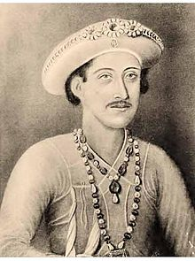
Nawab Nazim of Bengal, Bihar and Orissa (Nawab of Bengal) | Shuja-ul-Mulk (Hero of the Country) | Nazam-ud-Daulah (Star of the State) | Mahabat Jang (Horror in War)
Najm ud-din Ali Khan, better known as Najm-ud-Daulah (or Nazam-ud-Daulah) (Bengali: নাজিমুদ্দীন আলী খান; ca. 1747– 8 May 1766), was the Nawab of Bengal, Bihar and Orissa from 1765 to 1766. He was the second son of Mir Jafar.
Najm-ud-Daulah was crowned as the Nawab following the death of his father Mir Jafar. During his coronation he was only 15 years old. He ascended to the throne on February 5, 1765.
In 1765 after the victory in the Battle of Buxar the British had formally gained Dewani of Bengal, Bihar and Orissa from Shah Alam II. The Nawab formally conferred this Dewani to the British on September 30, 1765.
Najmuddin died soon afterwards, on May 8, 1766, apparently from a fever caught at a formal party given at Murshidabad fort in honour of Robert Clive. He was buried at Jafraganj Cemetery and was succeeded by his younger brother Nawab Nazim Najabat Ali Khan.
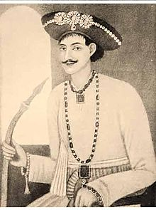
Nawab Nazim Najabat Ali Khan of Bengal, Bihar and Orissa, better known as Saif-ud-Daulah.
Sayyid Najabat Ali Khan Bahadur, born Mir Phulwari (Bengali: নজাবত আলী খান; 1750 – March 10, 1770), better known as Saif ud-Daulah succeeded his younger brother Nawab Nazim Najimuddin Ali Khan, after his death in 1766, as the Nawab Nazim of Bengal, Bihar and Orissa.
He was the third son of Mir Jafar by Munny Begum. He was only seventeen when he was crowned as the Nawab. He reigned under the regency of his mother and died of smallpox on March 10, 1770 during the Great Bengal famine of 1770.
After the death of Najimuddin Ali Khan, his younger brother Najabat Ali Khan, better known as Saif ud-Daulah, succeeded him and was placed on the Masnad (throne) at the age of 17. The management developed upon his mother, Munny Begum. On May 19, 1766 a treaty was concluded in which the East India Company was to pay him the reduced stipend of ₹41,86,131 and 9 Anas (₹1=12 Anas), namely ₹17,78,854 and 1 Ana for the Nawab's household and ₹ 24,07,277 and 8 Anas for the support of the Nizamat.
Nawabs of Oudh (1719–1858)
Nawab (Eastern Nagari: নবাব/নওয়াব, Devanagari: नवाब/नबाब, Perso-Arab: نواب) also spelt Nawaab, Navaab, Navab, Nowab< Nabob and Nobab is an honorific title ratified and bestowed by the reigning Mughal emperor to semi-autonomous Muslim rulers of princely states in South Asia. "Nawab" usually refers to males it literally means Viceroy; the female equivalent is "begum" or "nawab begum". The primary duty of a nawab was to uphold the sovereignty of the Mughal emperor along with the administration of a certain province.
The title of "nawab" was also awarded as a personal distinction by the paramount power, similar to a British peerage, to persons and families who ruled a princely state, for various services to the Government of British India. In some cases, these titles were also accompanied by jagir grants, either in cash revenues and allowances or land-holdings. During the British Raj, some of the chiefs or Sardars of large or important tribes were also given the title, in addition to traditional titles already held by virtue of chieftainship.
The term "nawab" was originally used for the subahdar (provincial governor) or viceroy of a subah (province) or region of the Mughal empire.
Saadat Ali Khan (b. c. 1680 – d. 19 March 1739) was the Subahdar Nawab of Awadh (Oudh) from 26 January 1722 to 1739, and the son of Muhammad Nasir. At the age of 25 he accompanied his father Muhammad Nasir and joined the final campaign of the Mughal Emperor Aurangzeb against the Maratha in the Deccan, where the Mughal Emperor honorably awarded him the title Khan Bahadur for his steadfast services.
Sa'adat Khan was born Muhammad Amin Musawi, the son of Muhammad Nasir Musawi, a Shia Muslim merchant of Khurasan and descendant of Musa al-Kadhim. His grandfather, a wealthy merchant, migrated to India during the reign of the Mughal Emperor Shah Jahan. Saadat Ali Khan I's father became a very prominent official during the rule of Mughal Emperor Bahadur Shah I. He was the progenitor of the Nawabs of Awadh (through female lineage).
At the commencement of the emperor Muhammad Shah's reign he held the faujdari (garrison commander) of Bayana. He made an unsuccessful effort to relieve the trapped Mughal Army during the Battle of Bhopal.
He was one of the commanding Mughal generals in the Battle of Karnal against Nadir Shah. Sa'adat Khan was captured during the battle of Karnal , later on he became the general of Nadir Shah Army which marched to Delhi , however he committed suicide when Nadir shah admonished him and First Nizam of Hyderabad to drink poison and die to put Mughal empire at stake for their vested interest. Sa`adat khan took it literally and died on the night prior to the massacre of Delhi by Nadir Shah on 19 March 1739. He was buried at Delhi in the mausoleum of his brother in Law Sayadat Khan.
Abul Mansur Mirza Muhammad Muqim Ali Khan better known as Safdar Jang (Urdu: صفدرجنگ, Hindi: सफ़्दरजंग),(b. c. 1708 – d. 5 October 1754), was the Subadar Nawab of Oudh (the ruler of the Indian state of Oudh, also known as Awadh) from 19 March 1739 to 5 October 1754. He was a descendant of Qara Yusuf from the Kara Koyunlu.
In 1739 he succeeded his father-in-law and maternal uncle, the Burhan ul Mulk Saadat Ali Khan I to the throne of Oudh, apparently by paying Nadir Shah twenty million rupees. The Mughal Emperor Muhammad Shah gave him the title of "Safdar Jang".
Safdar Jang was an able administrator. He was not only effective in keeping control of Oudh, but also managed to render valuable assistance to the weakened Muhammad Shah. He was soon given governorship of Kashmir as well, and became a central figure at the Delhi court. During the later years of Muhammad Shah, he gained complete control of administration in the Mughal Empire. When Ahmad Shah Bahadur ascended the throne at Delhi in 1748, Safdar Jung became his Wazir ul-Mumalik-i-Hindustan or Chief Minister of Hindustan. He was also made the governor of Ajmer and became the "Faujdar" of Narnaul. However, court politics eventually overtook him and he was dismissed in 1753. He returned to Oudh in December 1753, and made Faizabad military headquarter. He died in October 1755 at the age of 46 years in Sultanpur near Faizabad.
Shuja-ud-Daulah (b. 19 January 1732 – d. 26 January 1775) was the Subedar Nawab of Oudh from 5 October 1754 to 26 January 1775.
Though a minor royal, he is best known for his key roles in two definitive battles in Indian history - the Third Battle of Panipat which temporarily halted Maratha domination of the northern regions of the Mughal Empire and overthrew Shah Jahan III and reaffirmed Shah Alam II as the rightful emperor of the Mughal Empire. He had allied himself with Mir Qasim and took part in the Battle of Buxar, which ended in defeat.
Shuja-ud-Daulah was the son of the Mughal Grand Vizier Safdarjung chosen by Ahmad Shah Bahadur. Unlike his father Shuja-ud-Daulah was known from an early age for his abilities to synthesize his subordinates, this skill would eventually cause him to emerge as the chosen Grand Vizier by Shah Alam II.
Shuja-ud-Daulah is also known to have assisted the famous Alivardi Khan on various occasions when the territories of the Nawab of Bengal, were being ravaged by Raghoji I Bhonsle and his Marathas. Thus Shuja-ud-Daulah is known to have been a very respected figure among the servicemen of Alivardi Khan.
Asaf-ud-Daula (Hindi: आसफ़ उद दौला, Urdu: آصف الدولہ) (b. 23 September 1748 – d. 21 September 1797) was the nawab wazir of Oudh (a vassal of the British) ratified by Shah Alam II, from 26 January 1775 to 21 September 1797, and the son of Shuja-ud-Dowlah. His mother and grandmother were the begums of Oudh.
Asaf-ud-Daula became nawab at the age of 26, on the death of his father, Shujauddaula, on 28 January 1775.
When Shuja-ud-Daulah died he left two million pounds sterling buried in the vaults of the zenana. The widow and mother of the deceased prince claimed the whole of this treasure under the terms of a will which was never produced. When Warren Hastings pressed the nawab for the payment of debt due to the British East India Company, he obtained from his mother a loan of 26 lakh (2.6 million) rupees, for which he gave her a jagir (land) of four times the value; of subsequently obtained 30 lakh (3 million) more in return for a full acquittal, and the recognition of her jagirs without interference for life by the Company. These jagirs were afterwards confiscated on the ground of the begum's complicity in the rising of Chai Singh, which was attested by documentary evidence, as the evidence now available seems to show that Warren Hastings did his best throughout to rescue the nawab from his own incapacity, and was inclined to be lenient to the begums. He was a prominent drinker and was self-obsessed.
Wazir Ali Khan (Hindi: वज़ीर अली खान, Urdu: وزیر علی خان)(b. 19 April 1780 – d. 15 May 1817) was the fourth nawab wazir of Oudh from 21 September 1797 to 21 January 1798, and the adopted son of Asaf-Ud-Dowlah.
He was the adopted son of Asaf-Ud-Dowlah, who had no son. He adopted a boy who was the son of a daughter of a servant. At 13 years of age, Ali was married at the cost of £300000 in Lucknow.
After the death of his adopted father in September 1797 he ascended to the throne (musnud), with the support of the British. Within four months they accused him of being unfaithful. Sir John Shore (1751–1834) then moved in with 12 battalions and replaced him with his uncle Saadat Ali Khan II.
Ali was granted a pension of 3,00,000 Rupees and removed to Benares. The government in Calcutta decided that he should be removed further from his former realm. George Frederick Cherry, a British resident, relayed this order to him on 14 January 1799 during a breakfast invitation at which Ali had appeared with an armed guard. During the ensuing argument Ali struck Cherry a blow with his sabre, whereupon the guards killed the resident and two more Europeans. They then set out to attack the house of Samuel Davis, the Magistrate of Benares, who defended himself on the staircase of his house with a pike until rescued by British troops. The affair became known as the Massacre of Benares.
Saadat Ali Khan (Persian: سعادت علی خان, Hindi: सआदत अली खान, Urdu: سعادت علی خان) (bf. 1752 – c. 11 July 1814) was the fifth nawab wazir of Oudh from 21 January 1798 to 11 July 1814, and the son of Muhammad Nasir. He was of Persian origin.
He was the second son of Nawab Shuja-ud-daula. Saadat Ali Khan succeeded his half-nephew, Mirza Wazir `Ali Khan, to the throne of Oudh in 1798. Saadat Ali Khan was crowned on 21 January 1798 at Bibiyapur Palace in Lucknow, by Sir John Shore.
Most of the buildings between the Kaiserbagh and Dilkusha were constructed by him. He had a palace called Dilkusha Kothi designed and built by Sir Gore Ouseley in 1805.
Nawab Saadat Ali Khan died in 1814 and he was buried with his wife Khursheed Zadi at Qaisar Bagh.
Ghazi-ud-Din Haidar Shah (Hindi: ग़ाज़िउद्दीन हैदर शाह Urdu:غازی الدیں حیدر شاہ) (b. c. 1769 – d. 19 October 1827) was the last nawab wazir of Oudh from 11 July 1814 to 19 October 1818 and first King of Oudh from 19 October 1818 to 19 October 1827.
He was the third son of Nawab Saadat Ali Khan and Mushir Zadi was his mother. He became Nawab Wazir of Oudh on 11 July 1814 after the death of his father. In 1818, under the influence of Warren Hastings, the British Governor of the Presidency of Fort William (Bengal), he declared himself as the independent Padshah-i-Awadh (King of Oudh). He died in the Farhat Bakhsh palace in Lucknow in 1827. He was succeeded by his son Nasir-ud-Din Haider after his death.
Several monuments in Lucknow were constructed by Ghazi-ud-Din Haidar. He built the Chattar Manzil palace and added the Mubarak Manzil and the Shah Manzil in the Moti Mahal complex for better viewing of the animal fights. He also constructed the tombs of his parents, Sadat Ali Khan and Mushir Zadi Begum. For his European wife, he constructed a European style building known as the Vilayati Bagh. Another creation, the Shah Najaf Imambara (1816), his mausoleum, on the bank of the Gomti is a copy of the fourth Caliph Ali's burial place in Najaf, Iraq. His three wives, Sarfaraz Mahal, Mubarak Mahal and Mumtaz Mahal were also buried here.
Nasir-ud-Din Haidar Shah (Hindi: नासिर उद दीन हैदर शाह, Urdu: ناصر الدیں حیدر شاہ ) (b.9 September 1803 – d. 7 July 1837) was the second King of Oudh from 19 October 1827 to 7 July 1837.
He was the son of Ghazi-ud-Din Haidar Shah. After the death of Ghazi-ud-din Haidar his son Nasir-ud-din Haider ascended the throne on 20 October 1827 at the age of 25 years. He was fond of women and wine and had believed in astrology and astronomy. He made additions of Darshan Vilas to Claude Martin's house – Farhat Buksh in 1832.
He was poisoned by members of the court. As he had no offspring, there was a succession crisis. The queen mother, Padshah Begum, put Munna Jan on the throne, but he was not acknowledged as a member of the royal family. The British intervened, jailing both Padshah Begum and Munna Jan. They enthroned Nasir-ud-daula, son of the late Nawab Saadat Ali Khan.
Muhammad Ali Shah (Hindi: मुहम्मद अली शाह, Urdu: محمّد علی شاہ)(b. c. 1777 – d. 7 May 1842) was the third King of Oudh from 7 July 1837 to 7 May 1842.
Muhammad Ali Shah was son of Saadat Ali Khan II, brother of Ghazi-ud-Din Haidar Shah and uncle of Nasir-ud-Din Haidar Shah. Nawab Mohammad Ali Shah of Oudh built the Shrine of Hurr at Karbala. He died on 7 May 1842 AD.
Amjad Ali Shah (Hindi: अमजद अली शाह, Urdu: امجد علی شاہ) (b. c. 1801 – d. 13 February 1847) was the fourth King of Oudh from 7 May 1842 to 13 February 1847.
His reign began in May 1842. His administration was responsible for a new bridge over the river Gomti and a metalled road from Lucknow to Kanpur. He also built the Hazratganj and Aminabad Bazar, major shopping markets in Lucknow.
He died of cancer on 13 February 1847 at the age of 47 years. He is buried at Imambara Sibtainabad in the western part of Hazratganj, Lucknow. He was succeeded by his son Wajid Ali Shah.
Wajid Ali Shah (Urdu: واجد علی شاہ) (30 July 1822 – 1 September 1887) was the tenth and last Nawab of Awadh, holding the position for 9 years, from 13 February 1847 to 11 February 1856.
Nawab Wajid Ali Shah's first wife was Begum Hazrat Mahal, a woman who has gone down in history for her valour and courage in standing up to the might of the British forces during India's first struggle of freedom against British in 1857.
His kingdom, long protected by the British under treaty, was eventually annexed bloodlessly on 11 February 1856, two days before the ninth anniversary of his coronation. The Nawab was exiled to Garden Reach in Metiabruz, then a suburb of Kolkata, where he lived out the rest of his life on a generous pension. He was a poet, playwright, dancer and great patron of the arts. He is widely credited with the revival of Kathak as a major form of classical Indian dance. He is survived by his great great grand daughter Manzilat Fatima in Kolkata who is a chef and is cooking with the same passion with which her ancestors ate.
Berjis Qadr (Hindi: बिरजिस क़द्र 20 August 1845 – 14 August 1893) was the son of Wajid Ali Shah, and was last Padshah-e Awadh, Shah-e Zaman
Qadr and some of his subjects fought the British's military presence in India in the Indian Rebellion of 1857.
Prince Birjees Qadr sought refuge in Kathmandu, the retributive British Army, which wrested control of Awadh from the king and his mother, Begum Hazrat Mahal. He was migrated during the rule of Jang Bahadur Rana, against precious jewels he managed to retain from extraction by the British. He lived in Kathmandu for eighteen years before moving to Kolkata. Quadr was also a shayarwho organized many tarahi mahfil e mushairahin Kathmandu which were recorded by his contemporary Khwaja Naeemudddin Badakhshi. The record of his majlis e mushalirahwere discovered by Professor Abdurrauf and Adil Sarwar Nepali in Kathmandu in 1995 and published in the work Nepal mein Urdu Shairi.
Nizams of Hyderabad (1720–1948)
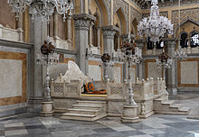
The Nizam's of Hyderabad throne in Chowmahalla Palace
The Nizam of Hyderabad (Nizam-ul-Mulk, also known as Asaf Jah) was a monarch of the Hyderabad State, now divided into Telangana state, Hyderabad-Karnataka region of Karnataka and Marathwada region of Maharashtra. Nizam, shortened from Nizam-ul-Mulk, meaning Administrator of the Realm, the title of the sovereigns of Hyderabad State, was the premier Prince of India, since 1724, belonging to the Asaf Jah dynasty.
The Asaf Jah Dynasty was founded by Mir Qamar-ud-Din Siddiqi, a viceroy of the Deccan under the Mughal Empire from 1713 to 1721. He intermittently ruled after Aurangzeb's death in 1707. In 1724, Mughal control lapsed, and Asaf Jah declared himself independent in Hyderabad.
Following the decline of the Mughal power, the region of Deccan saw the rise of Maratha Empire. The Nizam himself saw many invasions by the Marathas in the 1720s, which resulted in the Nizam paying a regular tax (Chauth) to the Marathas. The major battles fought between the Marathas and the Nizam include Palkhed, Bhopal, Rakshasbhuvan, and Kharda, in all of which the Nizam lost. Following the conquest of Deccan by Bajirao I and the imposition of chauth by him, Nizam remained a tributary of the Marathas for all intent and purposes.
In 1805, after the British victory in the Second Anglo-Maratha War, Nizam of Hyderabad came under the protection of the British East India Company.
In 1903 the Berar region of the state was separated and merged into the Central Provinces of British India, to form the Central Provinces and Berar.
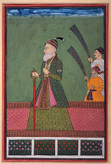
Chin Fateh Khan, Chin Qilich Khan, Nizam-ul-Mulk, Asaf Jah, Khan-i-Dauran Bahadur, Khan-i-Khana, Fateh Jung, Firuz Jang, Ghazi-ud-din Bahadur, Amir-ul-Umara, Bakhshi-ul-Mumalik
Mir Qamar-ud-din Khan Siddiqi Bayafandi (20 August 1671 – 1 June 1748) was a nobleman of Indian and Turkic descent and the founder of the Asaf Jahi dynasty. He established the Hyderabad state, and ruled it from 1724 to 1748. He is also known by his titles Chin Qilich Khan (awarded by emperor Aurangzeb in 1690–91), Nizam-ul-Mulk (awarded by Farrukhsiyar in 1713) and Asaf Jah (awarded by Muhammad Shah in 1725).
He was born to Nawab Ghazi ud-Din Khan Siddiqi Feroze Jung I and his first wife Wazir un-nisa Begum at Agra on 20 August 1671 as Mir Qamar ud-din Khan Siddiqi. The name was given to him by the Mughal Emperor Aurangazeb. His paternal and maternal grandparents were both important Mughal generals and courtiers namely; Kilich Khan (Paternal) and Jumlat-ul-Mulk Allami Sa'adullah Khan (Maternal), the Vizier of Emperor Shah Jahan.
He was educated privately. At the age of six, Mir Qamar-ud-din Khan accompanied his father to the Mughal court in 1677. Emperor Aurangzeb awarded him a Mansab.
Mir Ahmed Ali Khan Siddiqi Bayafandi was the son of Nizam-ul-Mulk by his wife Saeed-un-nisa Begum. He was born 26 February 1712. He succeeded his father as the Nizam of Hyderabad State in 1748. He had taken up a very pompous title of Humayun Jah, Nizam ud-Daula, Nawab Mir Ahmad Ali Khan Siddiqi Bahadur, Nasir Jung, Nawab Subadar of the Deccan. However, he is most famously known as Nasir Jung.
The Mughal Emperor Muhammad Shah bestowed him with the title Nasir Jung and later the next Mughal Emperor Ahmad Shah Bahadur appointed him as the Subedar of the Deccan and bestowed him with the title Nasir-ud-Daula.
His official name was Humayun, Nizam ud-Daula, Nawab Mir Ahmad Ali Khan Siddiqi Bayafandi Bahadur, Nasir Jang, Nawab Subadar of the Deccan.
He ruled Hyderabad State in India from 1 June 1748 to 1750. He was appointed as his father's Deputy during his absence in Delhi from 1737–1741. He attempted to seize power, but was defeated by his father at the Eid Gah Maidan in Aurangabad, on 23 July 1741. After his father's death, he ascended the throne on 2 June 1748 at Burhanpur.
Muhyi ad-Din Muzaffar Jang Hidayat (died 13 February 1751) was the ruler of Hyderabad briefly, from 1750 to his death in battle in 1751. His official name was Nawab Hidayat Muhi ud-din Sa'adu'llah Khan Bahadur, Muzaffar Jang, Nawab Subadar of the Deccan. He was also given a very pompous title like his predecessor and rival Nasir Jung; it was Nawab Khan Bahadur, Muzaffar Jung, Nawab Subadar of the Deccan. He became famously known as Muzaffar Jung.
He was born to Nawab Talib Muhi ud-din Mutawassil Khan Bahadur who was the Naib Subahdar (Deputy Governor) of Bijapur and his wife Sahibzadi Khair-un-nisa Begum who was the daughter of Nizam-ul-Mulk.
Initially, he was appointed to an Imperial mansab of 3,000 zat and 2,000 sowar and later promoted to 4,000 zat on his appointment to Bijapur. He was Subadar of Bijapur after the death of his father. When his grandfather Nizam-ul-Mulk died in 1748, he decided to stake his claim to the throne in opposition to his uncle, Nasir Jung. This resulted in the first major direct involvement of the Europeans in Indian domestic politics. He joined hands with his Carnatic ally Chanda Sahib and the French while Nasir Jung joined hands with his Carnatic ally Muhammad Ali Khan Walajah and the British. Eventually the serious situation in Deccan and Carnatic would result in the Second Carnatic War. During the war Muzaffar Jung was briefly captured in March, 1750 after the Battle of Villianur. But after the assassination of Nasir Jung, he was released and took the throne of Hyderabad, 16 December 1750. He granted territories and titles to Dupleix and the French on 31 December 1750. He failed however, to honor his Afghan allies in a similar way. The resulting disagreement led to the Battle of Lakkireddipalli Pass in the Rayachoti taluka, Kadapa district, where the Nawab of Kurnool struck him in the head with a spear, 13 February 1751 killing him instantly.
Salabat Jung was born Mir Sa'id Muhammad Khan Siddiqi Bayafandi in 24 November 1718. He was the 4th Nizam of Hyderabad and the 3rd son of Nizam-ul-Mulk. He was appointed as Naib Subahdar (Deputy Viceroy) to his elder brother, Ghazi ud-Din Khan Feroze Jung II, the Prime Minister of Mughal Empire, with the title Salabat Jung. He was invested by Imperial firman, at Aurangabad, Maharashtra, 12 September 1749. He was granted the titles of Khan Bahadur and Salabat Jung during his father's lifetime. During the Second Carnatic War he was a prisoner, first in Nasir Jung's camp and later in Muzaffar Jung's camp. After Muzaffar Jung (his nephew) was killed by the Afghans on 13 February 1751, Mir Sa'id Muhammad Khan was proclaimed as the new Nizam near Lakkireddipalli Pass, by the French under De Bussy with the title Asaf-ad-Daulah, Nawab Said Muhammad Khan Bahadur, Salabat Jung,Zafar Jung, Nawab Subahdar of the Deccan. He was promoted to the title of Amir-ul-Mamalik by the Emperor Alamgir II. He was the ruler of the Hyderabad State in India from 1751 until 1762. Khilwath palace of Hyderabad was also built by him.
Salabat Jung agreed to retain the French in the Deccan restoring previous rights and prvileges. He gave the title of Saif-ud-daula Umdat-ul-Mulk to De Bussy and wrote to the Mughal Emperor Alamgir II for ratification, the Mughal Emperor agreed to their decision and granted De Bussy a title "Mansabdar of 7000" and appointed Hyder Jung as the "Vakil" (attorney) representing the French within the Mughal Empire.
This new alliance with the French had greatly contributed to the advancement of Salabat Jung's forces, in the year 1756 Salabat Jung utilised heavy muskets known as Catyocks, which were attached to the ground, it was known to have fired more rapidly than a cannon.[2] These new weapons would completely reverse fortunes of the Maratha rebels.
Nawab Mir Nizam Ali Khan Siddiqi Bayafandi Bahadur Asaf Jah II (7 March 1734 – 6 August 1803) was the Nizam of Hyderabad State in South India between 1762 and 1803. He was born on 7 March 1734 as fourth son to Asaf Jah I and Umda Begum. His official name is Asaf Jah II, Nizam ul-Mulk, Nizam ud-Daula, Nawab Mir Nizam 'Ali Khan Siddiqi Bayafandi Bahadur, Fath Jang, Sipah Salar, Nawab Subedar of the Deccan.
Nizam Ali was appointed as the leading commander and administrator of the Deccan in the year 1759, his successful methods of fighting against the Marathas had earned him much repute as a capable commander.
After the Marathas were routed during the Third Battle of Panipat in the year 1761, Nizam Ali and his army of 60,000 immediately advanced and repulsed them as far as Puna and forced them to sue for lasting peace. Nizam Ali then seized the Bidar Fort and later arrested Salabat Jung, this action of Nizam Ali Khan was ratified by the Mughal Emperor Shah Alam II, who issued a Firman terminating Salabat Jung (supported by the French East India Company), from his position as the Subedar of Deccan and appointing Nizam Ali Khan Asaf Jah II as his successor.
Nawab Mir Akbar Ali Khan Siddiqi Bayafandi Bahadur Sikander Jah Asaf Jah III (11 November 1768 – 21 May 1829), Nizam of Hyderabad, was the ruler of Hyderabad State in India from 1803 to 1829.
He was born in Chow Mahalla in the Khilwath palace, the second son of Asaf Jah II and Tahniat un-nisa Begum. Issue ten sons and nine Daughters, among are 1.Mir Farqunda Ali khan Siddiqi (Naser Ud Daula Asaf Jah IV ), 2.Mir Basheer Uddin Ali Khan Sham Samul Mulk or Samsamad Daula, 3.Zulfakir ul Mulk Zulfakir ud Daula 4.Mir Gawhar Ali Khan (Mubariz Ud Daula) 5.Saif Ul Mulk Mir Taffazul Ali Khan 6. Munawar ud Daula Mir Munawar Ali Khan. 7.Jahandar Jah Mir Faiyaz Ali Khan Baber Jang. 8. Qutub ud Daula Mir Mahmud Ali Khan 9.Qamar ul Mulk Qamar ud Daula Mir Dilawar Ali Khan Sarwar Jung. 10.Muzafar Ul Mulk Muzafar ud Daula Mir Fateh Ali Khan Dilear Jung.
Shazada Nawab Mir Tafazul Ali Khan Mir Badesha (Saif-ul-mulk) only son of Sikander Jah nizam III born with wife Jahan Parwar Begum Sahiba (Haji Begum) daughter of Nawab Saif Ul Mulk (Maali Mian) son of Arastu Jah(was the prime minister during the Asaf jah III).
He was married (first) with Jahan Parwar Begum Sahiba (Haji Begum) daughter of Nawab Saif Ul Mulk (Maali Mian) son of Moin un Daula Nawab Gulam Said Khan Bahadir Surab Jang in May 1800. Second with Fazilath Unisa Begum (Chandni Begum ).
Nasir ad-Dawlah Mir Farqunda Ali Khan Siddiqi Bayafandi, Asaf Jah IV, Nizam of Hyderabad ( 25 April 1794 – 16 May 1857), was the ruler of Hyderabad state in India from 1829 to 1857. He was the eldest son of Asaf Jah III.
During his reign General C.B. Low took over as the Resident, he received a message from Lord Dalhousie to pay sixty-four lakh rupees which were due to the British for maintaining the Contingent. On 20 May 1853 a new treaty was concluded by which the strength of the Contingent force was settled for its payments.
The Contingent ceased to be a part of the Nizam's Army and became a force kept by the British Government for the benefit of Hyderabad State.
Afzal ad-Dawlah, Asaf Jah V Mir Tahniyath Ali Khan Siddiqi Bayafandi (11 October 1827 – 26 February 1869) was the ruling Nizam of Hyderabad, India, from 1857 to 1869.
Asaf Jah V's realm was divided into five subahs and sixteen districts; each subah was headed by a Subedar and each district by a Taluqdar. Reforms during his reign, by his Prime Minister Salar Jung, included the establishment of a governmental central treasury in 1855. Asaf Jah V reformed the Hyderabad revenue and judicial systems, instituted a postal service and constructed the first rail and telegraph networks. In 1861 he was awarded the Star of India.
Asaf Jah V was the eldest son of Naser ud Daula Mir Farqunda Ali Khan Asaf Jah IV and his wife Sahebzadi Dialwar unisa Begum Saheba. He was married three times, first to Sahebzadi Mahboob Begum Saheba, second to Sahebzadi Allah Rakhi Begum and third to Sahebzadi Hussaini Begum Saheba, and sired four sons and six daughters. He died at Hyderabad on 26 February 1869, and was buried at the Mecca Masjid mosque.
His Highness Sir Nizam-ul-Mulk, Afzal ad-Dawlah, Nawab Farooqi Mir Tahniat Ali Khan Siddiqi Bayafandi Bahadur, Asaf Jah V, GCSI, Nizam of Hyderabad.
Asaf Jah VI Mir Mahboob Ali Khan Siddiqi Bayafandi GCB GCSI (18 August 1866 – 29 August 1911) was the 6th Nizam of Hyderabad. He ruled Hyderabad state, one of the Princely states in India between 1869 and 1911.
Nawab Bahadur Sirajud Dawlah, Lieutenant-General His Highness Rustam-i-Dauran, Arustu-i-Zaman, Wal Mamaluk, Asaf Jah VI, Muzaffar ul-Mamaluk, Nizam ul-Mulk, Nizam ud-Daula, Nawab Mir Sir Mahbub Ali Khan Siddiqi Bayafandi Bahadur, Sipah Salar, Fath Jang, Nizam of Hyderabad, Knight Grand Cross of the Most Honourable Order of the Bath, Knight Grand Commander of the Most Exalted Order of the Star of India, Honourable Lieutenant-General in the Army.
Mir Mahbub Ali Khan was born on 18 August 1866 at Purani Haveli in Hyderabad State. He was the only son of Afzal ad-Dawlah, Asaf Jah V.
His Exalted Highness (H.E.H) Nawab Sir Mir Osman Ali Khan Siddiqi, Bayafandi Asaf Jah VII GCSI GBE (born Mir Osman Ali Khan Bahadur) (6 April 1886 – 24 February 1967), was the last Nizam (or ruler) of the Princely State of Hyderabad and Berar. He ruled Hyderabad between 1911 and 1948, until it was annexed by India. He was styled as His Exalted Highness H.E.H The Nizam of Hyderabad. Later he was made the Rajpramukh of Hyderabad State on 26 January 1950 and continued until 31 October 1956, after which the state was partitioned on linguistic basis and became part of Andhra Pradesh, Karnataka and Maharashtra.
He built the Hyderabad House in Delhi, now used for diplomatic meetings by the Government of India.
In 1937, he was on the cover of Time magazine, labelled as the richest man in the world. CelebrityNetWorth also ranked him as one of the top ten wealthiest persons of all time in its inflation-adjusted list.
The Nizam's vast inheritance was accumulated as mining royalties apart from its land revenue. Hyderabad State in British India was the only supplier of diamonds for the global market in the 18th century.
Marthanda Varma (born Anizham Thirunal Marthanda Varma; 1705 – 7 July 1758) was ruler of the southern Indian state of Travancore from 1729 until his death in 1758. He is most celebrated for crushing the Dutch expansionist designs at the Battle of Colachel in 1741. Marthanda Varma, then adopted a European mode of martial discipline and expanded his domain to encompass what became the modern state of Travancore.
Marthanda Varma built a substantial standing army of about 50,000, reduced the power of the Nair aristocracy (on which rulers of Kerala had earlier been dependent militarily), and fortified the northern limits of his kingdom at the so-called Travancore Lines. His alliance in 1757 with the ruler of Kochi, against Kingdom of Kozhikode, enabled Kochi to survive.
Travancore under Marthanda Varma did make a determined bid to consolidate its power by the use of maritime outlets. At his accession to the throne in early 18th century, the only route remaining was Thiruvithaamkoor to build an elaborate and well-organized war machine while keeping external supply lines open. The control of trade was also seen as crucial in the statecraft of the period. These principles were put into practice by Marthanda Varma.
It was also the policy of Marthanda Varma to extend patronage to the Syrian Christians, a large trading community in Thiruvithaamkoor, as a means of limiting European involvement in trade. The key commodity was pepper, but other goods also came to be defined as Royal Monopoly Items, requiring a license for trade. Thiruvananthapuram (now Called as :Trivandrum) became a prominent city in Kerala under Marthanda Varma. Prime ministers under Marthanda Varma - Arumukham Pillai (1729 – 36), Thanu Pillai (1736 – 37) and Ramayyan Dalawa (1737 – 56) - played a significant role in the raise of the Thiruvithaamkoor state.
Dharma Raja Karthika Thirunal Rama Varma (Malayalam: ധർമ്മരാജാ കാർത്തിക തിരുനാൾ രാമവർമ്മ, 1724–17 Feb 1798) was the Maharajah of Travancore from 1758 until his death in 1798. He succeeded his uncle Marthanda Varma, who is credited with the title of "maker of modern Travancore". During his reign Dharma Raja not only retained all the territories his predecessor had gained but administered the kingdom with success. He was addressed as Dharma Raja on account of his strict adherence to Dharma Sastra, the principles of justice by providing asylum to thousands of Hindus and Christians fleeing Malabar during the religious and military onslaught of Tipu Sultan.
Rama Varma was born in 1724 AD as the son of the Senior Rani of Attingal with her husband Prince Kerala Varma Koil Thampuran of the Kilimanoor palace. He had a brother Prince Makayiram Thirunal, grandfather of Irayimman Thampi, who pre-deceased him. His mother was adopted from the royal house of Kolathunad in 1718 by the then King of Venad into the Travancore Royal Family. He was born into a time of political turmoil caused by the refractory Lords, the Ettuveetil Pillamar as also enemies of Venad such as the Rajah of Kayamkulam. When Karthika Thirunal was only four years of age, in 1728, his father died foiling an assassination bid by the Kayamkulam Rajah, when the prince along with his parents were traveling from Haripad to the domains of the Vanjipuzha Thampuran, a Brahmin chief, at Budhanur. As he grew up, he took part actively in the military conquests of his uncle Maharajah Marthanda Varma and assisted him in establishing the modern state of Travancore by annexing kingdom after kingdom up to the Cochin to Venad.
Avittom Thirunal Bala Rama Varma (c. 1782 – 7 Nov 1810) was a ruler of the Indian princely state of Travancore from 1798 to 1810, succeeding his uncle Maharajah Dharma Raja on 12 February 1798. His reign was a time of disturbances and internal and external problems. The revolt of Velu Thampi (who as Dewan negotiated the formal alliance between Travancore and the British East India Company) occurred during his rule.
Maharani Ayilyom Thirunal Gouri Lakshmi Bayi (1791–1815) was the Maharani of the Indian state of Travancore from 1810 till 1813 and Regent from 1813 till her death in 1815 for her son Swathi Thirunal Rama Varma. She was the only Queen of Travancore to have reigned in her own right which she did for two years before becoming a regent.
Gouri Lakshmi Bayi was born in the year 1791 to Princess Attham Thirunal, Senior Rani of Attingal of the Travancore Royal Family, adopted sister of Maharajah Balarama Varma. Attham Thirunal was adopted into the Travancore family from Kolathunad in 1788. The Maharanis of Travancore were styled as the "Ranis of Attingal". Gowri Lakshmi Bayi was one of Travancore's most popular Queens and introduced several reforms in the state.
Uthrittathi Thirunal Gowri Parvathi Bayi (1802–1853) was the Regent of the Indian state of Travancore who succeeded her sister Maharani Gowri Lakshmi Bayi from 1815 till her regency was relinquished in favour of her nephew, Maharajah Swathi Thirunal, in 1829.
Maharani Gowri Parvathi Bayi was born to Princess Bharani Thirunal of the Travancore Royal Family in 1802, who was the Senior Rani of Attingal (the Maharani's of Travancore were styled as Ranis' of Attingal). When her elder sister Maharani Gowri Lakshmi Bayi died after childbirth in 1815, Gowri Parvati Bayi was only thirteen years of age. As the only female left in the family, Gowri Parvathi Bayi became RegentMaharani on behalf of her nephew, the heir, Maharajah Swathi Thirunal Rama Varma. Upon her accession she was actively counseled by her brother in law, Raja Raja Varma of the Changanssery Royal family, as well as her husband, Raghava Varma, who belonged to the Royal family of Kilimanoor.
The Maharani's first act after coming to power was to appoint a new Dewan or Prime Minister to her state, as Dewan Devan Padmanabhan had died and state affairs were being conducted by his deputy Bappu Rao. In 1815 Sanku Annavi Pillai, a Brahmin, was appointed to the position but was soon found to be incapable of handling his difficult office and within two months he was removed. After ten months following the suggestion of the British Resident, Col. Munro, Raman Menon, a Judge of the Huzhur Court of Travancore was appointed Dewan. However, differences of opinion arose between Dewan Raman Menon and the British Resident and hence Raman Menon was relocated to an inferior office in 1817, at which point he preferred to retire from service entirely. It may be of interest to note that Dewan Raman Menon was the great grandfather of Krishna Menon, the reputed Indian diplomat of the 20th century, and the ancestor of the Vengalil family. In his stead a deputy known as Reddy Rao was appointed Dewan as he was close to the Resident in September 1817. He successfully reigned until the year 1821. In 1819 the British Resident Col. Munro resigned his office and a new Resident Col. McDowell succeeded him as the British Representative in Travancore. His assistant, Vencatta Rao, caused a falling out between him and the Dewan and in 1821 Vencatta Rao became Dewan of Travancore. He remained Dewan till the year 1830.
Svāti Tirunāḷ Rāma Varma (Malayalam: സ്വാതി തിരുനാള് രാമവർമ്മ) (16 April 1813 – 26 December 1846) was the Maharaja of the Kingdom of Travancore, British India. He is also considered as a brilliant music composer and is credited with over 400 classical compositions in both Carnatic and Hindustani style.
A well-formulated code of laws, courts of justice, introduction of English education, construction of an observatory, installation of the first Government printing press, establishment of the first manuscripts library were amongst the many initiatives taken by Svāti Tirunāḷ, as a King, to modernise Travancore. 'Efficiency was the key word and corruption a taboo', according to the article The Monarch Musician in The Hindu.
Swāthi Tirunāḷ was born into the Chera dynasty of the Matrilineal royal family of Travancore, which is now a part of Kerala, on 16 April 1813. He was the second child of Queen Gowri Lakshmi Bayi who ruled Travancore from 1811–15, and Rajaraja Varma Koyi Thampuran of Changanasseri Palace. While in the womb itself, he was proclaimed King and was referred to as Garbha Sreemaan. He reigned under the regency of his mother from 1813–15 and then under the regency of his maternal aunt Gowri Parvati Bayi until 1829. When he was just four months old, his mother invited Colonel John Munro, representative of the East India Company, and his officials and declared in the Durbar that she was entrusting the East India Company with the care of her child and expected the Company to co-operate with him in future.
Uthram Thirunal Marthanda Varma (26 September 1814 – 18 August 1860) was the Maharajah of Travancore state in southern India, succeeding his elder brother Maharajah Swathi Thirunal in 1846 till his demise in 1860. Known for his progressive rule, he abolished slavery in the kingdom. He was succeeded by his nephew Maharajah Ayilyam Thirunal in 1860. His mother was Her Highness Maharani Gowri Lakshmi Bayi. He was married to Thiruvattar Ammachi Panapillai Amma Srimathi Madhavi Pillai Kochamma of the Nagercoil Ammaveedu, who died in 1860, a few months before the Maharajah's death. The Maharajah's daughter was married by his nephew and heir Maharajah Ayilyam Thirunal.
The Maharajah also adopted Bharani Thirunal Lakshmi Bayi and Bharani Thirunal Parvathi Bayi from the related Kolathiri royal house in 1857 after the death of his niece to perpetuate the royal line.
Ayilyam Thirunal Rama Varma (1832–1880) was the ruler of the princely state of Travancore in India from 1860 to 1880. His reign was highly successful with Travancore gaining the appellation of "model state of India". Ayilyam Thirunal was the nephew of Uthram Thirunal and Swathi Thirunal and grandson of the celebrated Gowri Lakshmi Bayi.
Ayilyam Thirunal was born on 14 March 1832 to H.H. Rani Rukmini Bayi, the only sister of Maharajahs Swathi Thirunal and Uthram Thirunal. In the Travancore Royal Family inheritance and primogeniture was determined by the Marumakkathayam system i.e. through the female line. With the accession of Uthram Thirunal in 1846 and his elder brother's exclusion from the line of succession due to imbecility, Ayilyam Thirunal became the Elaya Rajah or heir apparent of Travancore State. Of the seven children born to Rukmini Bayi, only four, including a daughter, Rani Lakshmi Bayi, survived and the eldest and third son were declared unfit to rule owing to mental incapacity. Ayilyam Thirunal's youngest brother Visakham Thirunal was therefore to be his successor.
Ayilyam Thirunal's early education was provided privately and later T. Madhava Rao was appointed tutor to the Elaya Rajah and his brother in 1848. Madhava Rao eventually rose in service and was appointed by Uthram Thirunal in 1857 as Dewan of Travancore and remained in that capacity during the initial decade of Ayilyam Thirunal's reign, until, owing to personal disaffection, he was retired in 1872. In 1854 Ayilyam Thirunal was married to his uncle's daughter, Panapillai Madhavi Pillai Lakshmi Pillai Kochamma of the Thiruvattar Ammaveedu. His consort however died a few years later. In 1860 Maharajah Uthram Thirunal died and Ayilyam Thirunal ascended the musnud as Maharajah.
Visakham Thirunal Rama Varma GCSI FRGS FRAS (19 May 1837 – 4 August 1885) was the Maharaja of the erstwhile Indian kingdom of Travancore from 1880–1885 AD. He succeeded his elder brother Maharajah Ayilyam Thirunal to the throne of Travancore.
Vishakham Thirunal Rama varma was born on 19 May 1837 to Rani Gowri Rukmini Bayi and her husband Punartham Thirunal Rama Varma Koil Thampuran of the Royal Family of Thiruvalla. His mother died when he was barely two months of age leaving him and his elder siblings to the care of their father. His Highness was grandson to Maharani Gowri Lakshmi Bayi and nephew of Maharajah Swathi Thirunal.
As a prince he received his early education from his father, Rama Varma. This was basic training in vernacular Malayalam language and Sanskrit which were essentials for members of the Royal family. At the age of nine he started his English education under Subba Row, who later became Dewan of Travancore. The prince took a keen interest in English composition and his first work, Horrors of war and benefits of peace, was well acknowledged. Some of his compositions were also published in "Madras Athenaeum". He also wrote in The Statesman and the Calcutta Review.
In 1861 the prince visited Madras and met with the Governor, Sir William Denison, upon whom he made such a favourable impression that the Governor remarked that "He is by far the most intelligent Native I have seen; and if his brother is like him, the prospects of Travancore are very favorable." The prince was soon appointed a Fellow of the University of Madras, a rare honour conferred on natives in those days. While he was still a prince he was also offered a seat in the Viceroy of India's Legislative Council which he, however, declined owing to ill health. He had a special aptitude for botany and agriculture.
Mulam Thirunal Rama Varma was the ruling Maharajah of the Indian state of Travancore between 1885 and 1924, succeeding his uncle Maharajah Visakham Thirunal (1880–1885).
Mulam Thirunal Rama Varma was born on 25 September 1857 to Prince Raja Raja Varma of the Changanassery Royal Family and Maharani Lakshmi Bayi of Travancore, niece of Maharajah Swathi Thirunal. His mother died when he was only a few days old. The Maharajah had an elder brother, Hastham Thirunal. After the usual vernacular Malayalam studies, the two princes were placed under the tutorship of Annaji Rao B.A. and later under Raghunath Rao B.A. at a country house built specially for the purpose. Hastham Thirunal soon had to stop his studies owing to ill health and so Rama Varma remained the only pupil under the tutor. He was initially taught subjects such as history, geography, arithmetic and grammar. His great-grandmother was the Maharani Gowri Lakshmi Bayi of Travancore.
The Travancore Legislative Council was established in 1888, three years after Moolam Thirunal became Maharajah. This was the first Legislative Council for a native state in the history of India. It was later succeeded by the Sree Moolam Popular Assembly, the first legislature in Indian history to have elected members.
Pooradam Thirunal Sethu Lakshmi Bayi CI (1895–1985) was the regent of the Kingdom of Travancore in southern India between 1924 and 1931. She, along with her younger cousin, Moolam Thirunal Sethu Parvathi Bayi, were adopted into the Travancore Royal Family and were the granddaughters of the celebrated painter, Raja Ravi Varma.
In 1924, Maharajah Moolam Thirunal died and his grand nephew and the heir to the throne, Sree Chithira Thirunal, was just 12 years old then. A regency became necessary, since the Maharajah was still a minor. Since Travancore royal family followed the matrilineal system, Sethu Lakshmi Bayi was the head of the family. It was decided, despite the opposition of the minor Maharajah's mother, Junior Maharani Sethu Parvathi Bayi, that Sethu Lakshmi Bayi should be Regent as she was the Senior Maharani until the minor King came of age in 1930. It is to be noted that she was an absolute monarch in her own right as per matrilineal law (unlike regents in the rest of India whose powers were curtailed by tradition and in practice by a regency council) and ruled as the sovereign.
Sethu Lakshmi Bayi's regency continued the progressive administration of Travancore Dynasty and brought forth reforms like abolition of Devadasi system as well as the prohibition of animal sacrifice. Her meeting with Mahatma Gandhi resulted in a royal proclamation by which all the public roads (except the eastern road) to Vaikom Mahadeva Temple were opened to all castes. She also amended the Travancore Nayar Act in relation to the Marumakkathayam system of inheritance and family. Eventually in 1928, the matrilineal system was altogether done away with, introducing patrilineal nuclear family system among Nairs. At the same time, Sethu Lakshmi Bayi was criticized by social reformers for not allowing temple entry for dalits and also for preventing Jawaharlal Nehru from entering the Padmanabhaswamy Temple as Nehru had undertaken a sea voyage. She was also criticized for formulating the notorious Press Regulation Act in 1926 which gagged the Press.
Sree Padmanbhadasa Sree Chithira Thirunal Balarama Varma GCSI GCIE (7 November 1912 – 20 July 1991), popularly known as Sree Chithira Thirunal, was the last ruling Maharaja of the Princely State of Travancore, in southern India until 1949 and later the Titular Maharajah of Travancore until 1991. Sree Chithira Thirunal was the eldest son of Junior Maharani of Travancore, H.H. Sree Padmanabhasevini Vanchidharmavardhini Rajarajeshwari Maharani Moolam Thirunal Sethu Parvathi Bayi, and Sri Pooram Nal Ravi Varma Koyi Thampuran of the Royal House of Kilimanoor. He was privately educated, and became the Maharajah of Travancore, at the age of 12, upon the death of his maternal great uncle, the then Maharajah of Travancore Sree Moolam Thirunal, on 7 August 1924. He reigned under the regency of his maternal aunt, Sethu Lakshmi Bayi (1924–31), until he came of age and was invested with full ruling powers on 6 November 1931.
The period of Sree Chithira Thirunal's reign witnessed many-sided progress. He enacted the now famous Temple Entry Proclamation in 1936, established the University of Travancore (now the University of Kerala) in 1937. The Women Studies Journal Samyukta reports that, 40% of the Travancore's revenue was set apart for education, during the reign of Sree Chithira Thirunal. Thiruvananthapuram International Airport, Travancore Public Transport Department renamed Kerala State Road Transport Corporation, Pallivasal Hydro-electric Project, Fertilisers and Chemicals Travancore(FACT) etc. were established by him. Historians like A. Sreedhara Menon credit him for the industrialization of Travancore as well.
According to researchers, the Punnapra - Vayalar incident in 1946 which led to the death of hundreds of Communist Party workers, the declaration of an independent Travancore in 1947, and allowing too much power to his Prime Minister, Sir C. P. Ramaswamy Iyer, would represent the negative aspects of Sree Chithira Thirunal's reign.
The Sikh Empire (also Sikh Khalsa Raj, Sarkar-i-Khalsa or Pañjab (Punjab) Empire) was a major power in the Indian subcontinent, formed under the leadership of Maharaja Ranjit Singh, who established a secular empire based in the Punjab. The empire existed from 1799, when Ranjit Singh captured Lahore, to 1849 and was forged on the foundations of the Khalsa from a collection of autonomous Sikh misls. At its peak in the 19th century, the Empire extended from the Khyber Pass in the west to western Tibet in the east, and from Mithankot in the south to Kashmir in the north. The religious demography of the Sikh Empire was Muslim (70%), Sikh (17%), Hindu (13%). The population was 3.5 million. It was the last major region of the Indian subcontinent to be conquered by the British.
The foundations of the Sikh Empire can be traced to as early as 1707, the year of Aurangzeb's death and the start of the downfall of the Mughal Empire. With the Mughals significantly weakened, the Sikh army, known as the Dal Khalsa, a rearrangement of the Khalsa inaugurated by Guru Gobind Singh, led expeditions against them and the Afghans in the west. This led to a growth of the army which split into different confederacies or semi-independent misls. Each of these component armies controlled different areas and cities. However, in the period from 1762 to 1799, Sikh commanders of the misls appeared to be coming into their own as independent warlords.
The formation of the empire began with the capture of Lahore, by Ranjit Singh, from its Afghan ruler, Zaman Shah Durrani, and the subsequent and progressive expulsion of Afghans from the Punjab, by defeating them in the Afghan-Sikh Wars, and the unification of the separate Sikh misls. Ranjit Singh was proclaimed as Maharaja of the Punjab on 12 April 1801 (to coincide with Vaisakhi), creating a unified political state. Sahib Singh Bedi, a descendant of Guru Nanak, conducted the coronation. Ranjit Singh rose to power in a very short period, from a leader of a single misl to finally becoming the Maharaja of Punjab. He began to modernise his army, using the latest training as well as weapons and artillery. After the death of Ranjit Singh, the empire was weakened by internal divisions and political mismanagement. Finally, by 1849 the state was dissolved after the defeat in the Anglo-Sikh wars.
The Sikh Empire was divided into four provinces: Lahore, in Punjab, which became the Sikh capital, Multan, also in Punjab, Peshawar and Kashmir from 1799 to 1849.
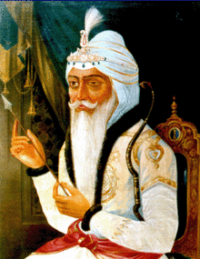
Maharaja Ranjit Singh
Maharaja Ranjit Singh (1780 –1839) was the leader of the Sikh Empire, which ruled the northwest Indian subcontinent in the early half of the 19th century. He survived smallpox in infancy but lost sight in his left eye. He fought his first battle alongside his father at age 10. After his father died, he fought several wars to expel the Afghans in his teenage years and was proclaimed as the "Maharaja of Punjab" at age 21. His empire grew in the Punjab region under his leadership through 1839.
Prior to his rise, the Punjab region had numerous warring misls (confederacies), twelve of which were under Sikh rulers and one Muslim. Ranjit Singh successfully absorbed and united the Sikh misls and took over other local kingdoms to create the Sikh Empire. He repeatedly defeated invasions by outside armies, particularly those arriving from Afghanistan, and established friendly relations with the British.
Ranjit Singh's reign introduced reforms, modernisation, investment into infrastructure and general prosperity. His Khalsa army and government included Sikhs, Hindus, Muslims and Europeans. His legacy includes a period of Sikh cultural and artistic renaissance, including the rebuilding of the Harimandir Sahib in Amritsar as well as other major gurudwaras, including Takht Sri Patna Sahib, Bihar and Hazur Sahib Nanded, Maharashtra under his sponsorship. He was popularly known as Sher-e-Punjab, or "Lion of Punjab".
Maharaja Ranjit Singh was succeeded by his son Maharaja Kharak Singh.
Maharaja Kharak Singh (22 February 1801 – 5 November 1840), was a Sikh ruler of the Punjab and the Sikh Empire. He succeeded his father Ranjit Singh in June 1839
He was born in Lahore in 1801, the first legitimate son of Ranjit Singh and his second wife Datar Kaur. In 1812, at the age of 11 he was married to Chand Kaur, daughter of Sardar Jaimal Singh, chief of the Kanhaiya Misl. Their son Nau Nihal Singh was born in 1821.
He received the principality of Jammu as his jagir in 1812. In 1818, together with Misr Diwan Chand he commanded an expedition against the Afghan ruler of Multan Nawab Muzaffar Khan, achieving a decisive victory at the Battle of Multan. In 1819, he held nominal command of the expedition to conquer Kashmir. Three months before his death, Ranjit Singh awarded Kashmir to Kharak, which was seen as a check on the ambitions of Gulab Singh.
Kharak was regarded as simple minded and ill-suited to succeed his father as Maharaja. It was believed he lacked his father's diplomatic skills, and wasted himself by consuming excessive amounts of alcohol and opium. He developed a close relationship with his tutor Chet Singh, who gained such an ascendancy over him as to render him a puppet. This relationship with Chet Singh created tensions with Prime Minister Raja Dhian Singh, and in 1839, Chet Singh was murdered.
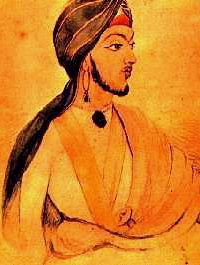
Nau Nihal Singh's Special Photo In Sikh Empire By Artist Chand Singh in Sikh Empire's Khalsa Darbar Sahibji
Kanvar (Prince) Nau Nihal Singh (9 March 1821 – 6 November 1840) was a Sikh ruler of the Punjab region of the Indian subcontinent. He was the son of Maharani Chand Kaur and Maharaja Kharak Singh, himself the eldest son and heir of Maharaja Ranjit Singh Sher-e-Panjab and a grandson of Maharani Datar Kaur of the Nakai Misl.
After the death of Ranjit Singh, Kharak Singh became king but was unable to keep control of the various factions within the kingdom. Prince Nau Nihal took control of the state himself.
In April 1837 at the age of sixteen he was married to Bibi Sahib Kaur, a daughter of Shaheed Sardar Sham Singh Attariwala (1790–1846) of the village of Attari in Amritsar district of Punjab.
Upon Kharak Singh's death, Nau Nihal Singh was in line to become Emperor. However, whilst he was passing through Roshnai Darwaza (the gate of the Hazuri Bagh at Lahore Fort) on returning from his father's cremation, masonry or stones fell from above, killing his companion and injuring the prince, who was taken into the fort by the Vizier Dhian Singh. Nobody else was allowed into the fort, not even his mother, who beat on the fort gates with her bare hands in a fever of anxiety.
Eyewitnesses described his initial injuries as being small blows to the head which knocked him unconscious. Later, when his mother and friends were allowed into the fort, Nau Nihal Singh was dead, his head having been smashed in, possibly with a rock. It is unclear whether the building's collapse was accidental or deliberate and who was responsible. He died at the age of 19. His mother Maharani Chand Kaur became the Empress of Sikh Empire, from (1840–41) she challenged Sher Singh, the second son of Maharaja Ranjit Singh Sher-e-Panjab, the stepbrother of her husband Kharak Singh, on the grounds that her co-daughter Nau Nihal, Singh's widow, Sahib Kaur, was pregnant saying that she should assume regency on behalf of the unborn legal successor to her husband's throne.
Maharani Chand Kaur of the Sikh Empire.
Maharani Chand Kaur (1802 – 11 June 1842) was briefly regent of the Sikh Empire. She was the wife of Maharaja Kharak Singh and mother of Nau Nihal Singh, her only son.
In 1840 Kharak Singh and Nau Nihal Singh were assassinated and, on the grounds that Nau Nihal Singh's widow Sahib Kaur was pregnant, Chand Kaur staked her claim as regent for the unborn successor to the throne. She remained regent for approximately two-and-a-half months, from 5 November 1840 to 18 January 1841, but abandoned her claim when Sahib Kaur delivered a stillborn son.
She was awarded a pension of 900,000 rupees and for a while lived in her late son's palace in Lahore. However her enemies still saw her as a threat and she was battered to death by her servants on 11 June 1842.
Chand Kaur was born in 1802 into a Jat sikh Sandhu family in Fatehgarh Churian in the Gurdaspur District of Punjab.[1] Her father was Sardar Jaimal Singh, chief of the Kanhaiya Misl. In February 1812, at the age of ten, she married Raja Kharak Singh, the eldest son of Maharaja Ranjit Singh. Their son, Nau Nihal Singh, was born on 23 February 1821 and in March 1837 he married Sahib Kaur, daughter of Sham Singh Atarivala.
Maharaja Sher Singh (4 December 1807 – 15 September 1843) was a son of Maharaja Ranjit Singh and he was born into a Jat sikh Family and in 1841 became Maharaja of the Sikh Empire and the Punjab.
In 1820, Maharaja Ranjit Singh granted him the privilege of being seated in the Darbar and bestowed civil and military honours on him. From 1831 to 1834 he acted as Governor of Kashmir and in 1834 he was a commander in the force that captured Peshawar from the Afghans.
He was the son of Maharaja Ranjit Singh and Maharani Mehtab Kaur, who was also the mother of Prince Tara Singh (1807-1859). (Mehtab Kaur, who was also known as Mahitab Kaur, is not to be confused with Maharani Mahtab Devi Sahiba, daughter of Maharaja Sansar Chand of Kangra, another wife, who committed sati in 1839 with Ranjit Singh lying with his head on her lap.)
He became Maharaja on 27 January 1841, after the sudden death of Nau Nihal Singh whose death was set in motion, some say purposely, while returning from his father's cremation. He was the half brother of Nau Nihal Singh's father, Maharaja Kharak Singh.
Maharaja Duleep Singh in 1875, aged 37
Maharaja Duleep Singh, GCSI (6 September 1838 – 22 October 1893), also known as Dalip Singh and later in life nicknamed the Black Prince of Perthshire, was the last Maharaja of the Sikh Empire. He was Maharaja Ranjit Singh's youngest son, the only child of Maharani Jind Kaur.
After the assassinations of four of his predecessors, he came to power in September 1843, at the age of five, he was kidnapped by the British Empire, later exiled to Britain at age 15 where he was befriended and much admired by Queen Victoria, who is reported to have written of the Punjabi Maharaja: "Those eyes and those teeth are too beautiful". The Queen was godmother to several of his children.
His mother had effectively ruled when he was very young and he managed to meet her again on 16 January 1861 in Calcutta and return with her to the United Kingdom. During the last two years of her life, his mother told the Maharaja about his Sikh heritage and the Empire which once had been his to rule.
Emperor (or Empress) of India was a title used by the British monarchs during the British Raj in the Indian subcontinent from 1876 (see Royal Titles Act 1876) until 1948, after India had gained independence from the United Kingdom, when for a transitional period the British monarch was also king of the independent dominions of India and Pakistan.
The term "Emperor of India" is also used to refer to pre-British Indian emperors (see List of Indian monarchs). A Persian language title, which translates to Emperor of India in English, was also used in 1857 by the last Mughal emperor Bahadur Shah II until he was captured by the British.
Though the Mughal dynasty ruled over most of the Indian subcontinent from the 16th century onwards, they simply used the title Badishah (Badishah or badshah means "Great King" or King of Kings, somewhat close to the title of emperor) without geographic designation.
During the Indian Rebellion of 1857, the rebel sepoys seized Delhi and proclaimed the Mughal Bahadur Shah II as Badishah-e-Hind, or Emperor of India. He had little or no control over the rebellion. The British quelled the rebellion, captured Bahadur Shah and exiled him to Rangoon, Burma, in 1858, whereupon the Mughal dynasty came to an end, and the title passed with him.
Queen-Empress Victoria (1876–1901)
Victoria (Alexandrina Victoria; 24 May 1819 – 22 January 1901) was Queen of the United Kingdom of Great Britain and Ireland from 20 June 1837 until her death. On 1 May 1876, she adopted the additional title of Empress of India.
Victoria was the daughter of Prince Edward, Duke of Kent and Strathearn, the fourth son of King George III. Both the Duke and the King died in 1820, and Victoria was raised under close supervision by her mother, Princess Victoria of Saxe-Coburg-Saalfeld. She inherited the throne at the age of 18, after her father's three elder brothers had all died, leaving no surviving legitimate children. The United Kingdom was already an established constitutional monarchy, in which the sovereign held relatively little direct political power. Privately, Victoria attempted to influence government policy and ministerial appointments; publicly, she became a national icon who was identified with strict standards of personal morality.
Victoria married her first cousin Prince Albert of Saxe-Coburg and Gotha in 1840. Their nine children married into royal and noble families across the continent, tying them together and earning her the sobriquet "the grandmother of Europe". After Albert's death in 1861, Victoria plunged into deep mourning and avoided public appearances. As a result of her seclusion, republicanism temporarily gained strength, but in the latter half of her reign her popularity recovered. Her Golden and Diamond Jubilees were times of public celebration.
Her reign of 63 years and seven months was longer than that of any of her predecessors and is known as the Victorian era. It was a period of industrial, cultural, political, scientific, and military change within the United Kingdom, and was marked by a great expansion of the British Empire. She was the last British monarch of the House of Hanover. Her son and successor, Edward VII, initiated the House of Saxe-Coburg and Gotha, the line of his father.
King-Emperor Edward VII (1901–1910)
Edward VII (Albert Edward; 9 November 1841 – 6 May 1910) was King of the United Kingdom and the British Dominions and Emperor of India from 22 January 1901 until his death in 1910.
The eldest son of Queen Victoria and Prince Albert of Saxe-Coburg and Gotha, Edward was related to royalty throughout Europe. Before his accession to the throne, he was heir apparent and held the title of Prince of Wales for longer than any of his predecessors. During the long reign of his mother, he was largely excluded from political power, and came to personify the fashionable, leisured elite. He travelled throughout Britain performing ceremonial public duties, and represented Britain on visits abroad. His tours of North America in 1860 and the Indian subcontinent in 1875 were popular successes, but despite public approval his reputation as a playboy prince soured his relationship with his mother.
As king, Edward played a role in the modernisation of the British Home Fleet and the reorganisation of the British Army after the Second Boer War. He reinstituted traditional ceremonies as public displays and broadened the range of people with whom royalty socialised. He fostered good relations between Britain and other European countries, especially France, for which he was popularly called "Peacemaker", but his relationship with his nephew, the German Emperor Wilhelm II, was poor. The Edwardian era, which covered Edward's reign and was named after him, coincided with the start of a new century and heralded significant changes in technology and society, including steam turbine propulsion and the rise of socialism. He died in 1910 in the midst of a constitutional crisis that was resolved the following year by the Parliament Act 1911, which restricted the power of the unelected House of Lords.
King-Emperor George V (1910–1936)
George V (George Frederick Ernest Albert; 3 June 1865 – 20 January 1936) was King of the United Kingdom and the British Dominions, and Emperor of India, from 6 May 1910 until his death in 1936.
Born during the reign of his grandmother Queen Victoria, George was third in the line of succession behind his father, the Prince of Wales, and his own elder brother, Prince Albert Victor. From 1877 to 1891, George served in the Royal Navy, until the unexpected death of his elder brother in early 1892 put him directly in line for the throne. On the death of his grandmother in 1901, George's father became King-Emperor of the British Empire as Edward VII, and George was created Prince of Wales. He succeeded his father in 1910. He was the only Emperor of India to be present at his own Delhi Durbar.
George V's reign saw the rise of socialism, communism, fascism, Irish republicanism, and the Indian independence movement, all of which radically changed the political landscape. The Parliament Act 1911 established the supremacy of the elected British House of Commons over the unelected House of Lords. As a result of the First World War (1914–1918), the empires of his first cousins Tsar Nicholas II of Russia and Kaiser Wilhelm II of Germany fell, while the British Empire expanded to its greatest effective extent. In 1917, George became the first monarch of the House of Windsor, which he renamed from the House of Saxe-Coburg and Gotha as a result of anti-German public sentiment. In 1924 he appointed the first Labour ministry and in 1931 the Statute of Westminster recognised the dominions of the Empire as separate, independent states within the Commonwealth of Nations. He had smoking-related health problems throughout much of his later reign and at his death was succeeded by his eldest son, Edward VIII.
Edward in uniform as colonel of the Welsh Guards, 1919
Edward VIII (Edward Albert Christian George Andrew Patrick David; 23 June 1894 – 28 May 1972) was King of the United Kingdom and the Dominions of the British Empire, and Emperor of India, from 20 January 1936 until his abdication on 11 December the same year, after which he became the Duke of Windsor.
Edward was the eldest son of King George V and Queen Mary. He was named Prince of Wales on his sixteenth birthday, nine weeks after his father succeeded as king. As a young man, he served in the British Army during the First World War and undertook several overseas tours on behalf of his father.
Edward became king on his father's death in early 1936. However, he showed impatience with court protocol, and caused concern among politicians by his apparent disregard for established constitutional conventions. Only months into his reign, he caused a constitutional crisis by proposing marriage to Wallis Simpson, an American who had divorced her first husband and was seeking a divorce from her second. The prime ministers of the United Kingdom and the Dominions opposed the marriage, arguing a divorced woman with two living ex-husbands was politically and socially unacceptable as a prospective queen consort. Additionally, such a marriage would have conflicted with Edward's status as the titular head of the Church of England, which at the time disapproved of remarriage after divorce if a former spouse was still alive. Edward knew the British government, led by Prime Minister Stanley Baldwin, would resign if the marriage went ahead, which could have forced a general election and would ruin his status as a politically neutral constitutional monarch. When it became apparent he could not marry Wallis and remain on the throne, Edward abdicated. He was succeeded by his younger brother, George VI. With a reign of 326 days, Edward is one of the shortest-reigning monarchs in British history.
After his abdication, he was created Duke of Windsor. He married Wallis in France on 3 June 1937, after her second divorce became final. Later that year, the couple toured Germany. During the Second World War, he was at first stationed with the British Military Mission to France, but after private accusations he held Nazi sympathies he was appointed Governor of the Bahamas. After the war, Edward spent the rest of his life in retirement in France. Edward and Wallis remained married until his death in 1972.
Formal photo portrait, circa 1940–1946
George VI (Albert Frederick Arthur George; 14 December 1895 – 6 February 1952) was King of the United Kingdom and the Dominions of the British Commonwealth from 11 December 1936 until his death. He was the last Emperor of India and the first Head of the Commonwealth.
Known publicly as Albert until his accession, and "Bertie" among his family and close friends, George VI was born in the reign of his great-grandmother Queen Victoria, and was named after his great-grandfather Albert, Prince Consort. As the second son of King George V, he was not expected to inherit the throne and spent his early life in the shadow of his elder brother, Edward. He attended naval college as a teenager, and served in the Royal Navy and Royal Air Force during the First World War. In 1920, he was made Duke of York. He married Lady Elizabeth Bowes-Lyon in 1923 and they had two daughters, Elizabeth and Margaret. In the mid-1920s, he had speech therapy for a stammer, which he never fully overcame.
George's elder brother ascended the throne as Edward VIII upon the death of their father in 1936. However, later that year Edward revealed his desire to marry divorced American socialite Wallis Simpson. British Prime Minister Stanley Baldwin advised Edward that for political and religious reasons he could not marry a divorced woman and remain king. Edward abdicated to marry Simpson, and George ascended the throne as the third monarch of the House of Windsor.
During George's reign, the break-up of the British Empire and its transition into the Commonwealth of Nations accelerated. The parliament of the Irish Free State removed direct mention of the monarch from the country's constitution on the day of his accession. The following year, a new Irish constitution changed the name of the state to Ireland and established the office of President. From 1939, the Empire and Commonwealth – except Ireland – was at war with Nazi Germany. War with Italy and Japan followed in 1940 and 1941, respectively. Though Britain and its allies were ultimately victorious in 1945, the United States and the Soviet Union rose as pre-eminent world powers and the British Empire declined. After the independence of India and Pakistan in 1947, George remained king of both countries, but relinquished the title of Emperor of India in June 1948. Ireland formally declared itself a republic and left the Commonwealth in 1949, and India became a republic within the Commonwealth the following year. George adopted the new title of Head of the Commonwealth. He was beset by health problems in the later years of his reign. He was succeeded by his elder daughter, Elizabeth II.
Between gaining independence from the United Kingdom on 15 August 1947 and the proclamation of a republic on 26 January 1950, India was an independent dominion in the British Commonwealth of Nations with king George VI as its head of state. Although the country shared its head of state with the United Kingdom, it was a fully sovereign independent state. It was created by the Indian Independence Act 1947 and was transformed into the Republic of India by the promulgation of the Constitution of India in 1950.
The king was represented by the Governor-General of India. However, the governor-general was not designated viceroy, as had been customary under the British Raj. The office of Viceroy was abolished on Indian independence. Two governors-general held office in India between independence and its transformation into a republic: Lord Mountbatten of Burma (1947–48) and Chakravarti Rajagopalachari (1948–50). Jawaharlal Nehru was Prime Minister of India throughout this period.
The Partition of British India on 15 August 1947 led to the creation of two sovereign states, both dominions: Pakistan (which later split into the Islamic Republic of Pakistan and the People's Republic of Bangladesh in 1971) and India (later the Republic of India). India received 82.5% of the total munitions, arms, and transport from the combined military of the Raj, and 70% of the manpower.
Since the 1920s the Indian independence movement had been demanding Pūrṇa Swarāj (complete self-rule) for the Indian nation and the establishment of the Dominion of India and the Dominion of Pakistan was a major victory for the Swarajis. Nevertheless, the Partition was controversial among the people, and resulted in significant political instability and displacement.
Pakistan[4] (Bengali: পাকিস্তান অধিরাজ্য pakistan ôdhirajyô; Urdu: مملکتِ پاکستان mumlikāt-ē pākistān), also called the Dominion of Pakistan, was an independent federal dominion in South Asia that was established in 1947 as a result of the Pakistan movement, followed by the simultaneous partition of British India to create a new country called Pakistan. The dominion, which included much of modern-day Pakistan and Bangladesh, was conceived under the two-nation theory as an independent country composed of the Muslim-majority areas of the former British India.
To begin with, it did not include the princely states of Pakistan, which acceded slowly between 1947 and 1948. In 1956 Pakistan was administratively split into the western wing named West Pakistan, and the province of East Bengal was renamed as the eastern wing named East Pakistan. In 1971 East Pakistan seceded from the union to become Bangladesh.
Elizabeth II in 2015
Elizabeth II (Elizabeth Alexandra Mary; born 21 April 1926) is the Queen of the United Kingdom and fifteen other Commonwealth realms.
Elizabeth was born in London as the first child of the Duke and Duchess of York, later King George VI and Queen Elizabeth, and she was educated privately at home. Her father acceded to the throne on the abdication of his brother King Edward VIII in 1936, from which time she was the heir presumptive. She began to undertake public duties during the Second World War, serving in the Auxiliary Territorial Service. In 1947, she married Philip, Duke of Edinburgh, a former prince of Greece and Denmark, with whom she has four children: Charles, Prince of Wales; Anne, Princess Royal; Prince Andrew, Duke of York; and Prince Edward, Earl of Wessex.
When her father died in February 1952, she became Head of the Commonwealth and queen regnant of seven independent Commonwealth countries: the United Kingdom, Canada, Australia, New Zealand, South Africa, Pakistan, and Ceylon. She has reigned through major constitutional changes, such as devolution in the United Kingdom, Canadian patriation, and the decolonisation of Africa. Between 1956 and 1992, the number of her realms varied as territories gained independence and realms, including South Africa, Pakistan, and Ceylon (renamed Sri Lanka), became republics. Her many historic visits and meetings include a state visit to the Republic of Ireland and visits to or from five popes. Significant events have included her coronation in 1953 and the celebrations of her Silver, Golden, and Diamond Jubilees in 1977, 2002, and 2012 respectively. In 2017, she became the first British monarch to reach a Sapphire Jubilee. She is the longest-lived and longest-reigning British monarch as well as the world's longest-reigning queen regnant and female head of state, the oldest and longest-reigning current monarch and the oldest and longest-serving current head of state.
Elizabeth has occasionally faced republican sentiments and press criticism of the royal family, in particular after the breakdown of her children's marriages, her annus horribilis in 1992, and the death in 1997 of her former daughter-in-law Diana, Princess of Wales. However, support for the monarchy remains high, as does her personal popularity.
Elizabeth was born at 02:40 (GMT) on 21 April 1926, during the reign of her paternal grandfather, King George V. Her father, the Duke of York (later King George VI), was the second son of the King. Her mother, the Duchess of York (later Queen Elizabeth), was the youngest daughter of Scottish aristocrat the Earl of Strathmore and Kinghorne. She was delivered by Caesarean section at her maternal grandfather's London house: 17 Bruton Street, Mayfair. She was baptised by the Anglican Archbishop of York, Cosmo Gordon Lang, in the private chapel of Buckingham Palace on 29 May, and named Elizabeth after her mother, Alexandra after George V's mother, who had died six months earlier, and Mary after her paternal grandmother. Called "Lilibet" by her close family, based on what she called herself at first, she was cherished by her grandfather George V, and during his serious illness in 1929 her regular visits were credited in the popular press and by later biographers with raising his spirits and aiding his recovery.